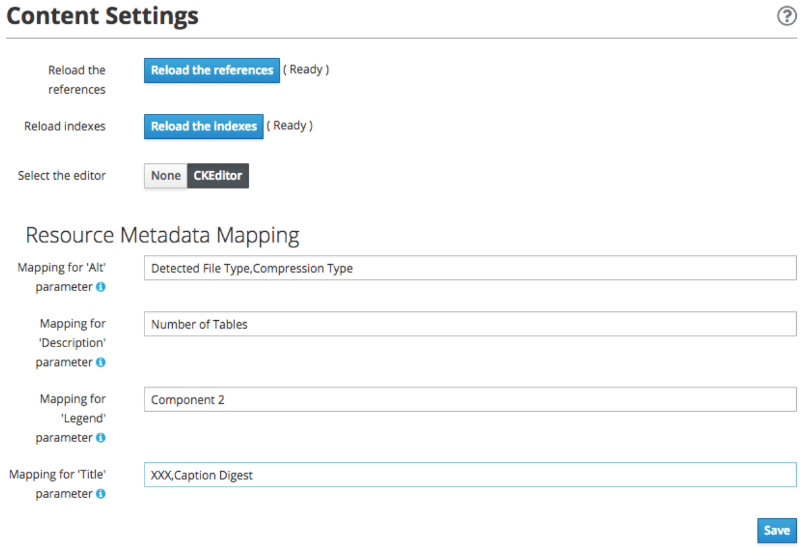

1. ENTANDO 5.0.2 RELEASE NOTES
1.1. ABSTRACT
This document contains release notes for Entando 5.0.2. See previous Entando release notes for notes on earlier versions.
1.2. CHANGES IN 5.0.2
Resolved an incorrect dependency version in entando-core and entando-components that reference a SNAPSHOT rather than a released library.
1.2.1. KNOWN ISSUES
None
1.2.2. VERSIONING INFORMATION
Artifact |
Version |
entando-core |
5.0.2 |
entando-archetypes |
5.0.2 |
entando-ux-packages |
5.0.2 |
entando-components |
5.0.2 |
app-builder |
5.0.2 |
1.2.3. SOFTWARE REQUIREMENTS
-
Java 1.8+
-
npm 5.6.0+ (for ReactJS front ends)
-
Maven 3.0.5+
-
Ant 1.8.0+
1.2.4. LEGAL NOTICE
-
LGPL v2.1 License for the Entando Core
-
MIT License for the components
1.2.5. LINKS AND RESOURCES
-
Explore the code on GitHub: https://github.com/entando
-
See our Getting Started guide: http://docs.entando.com/#getting-started
-
See our Custom App Building guide: http://docs.entando.com/#_custom_app_building_with_entando
-
Contribute to the software: https://central.apps.entando.com/en/community.page
2. PORTING FROM ENTANDO 5.0.0 TO 5.0.1
Upgrading to Entando 5.0.1 requires you to complete two sets of steps.
2.1. UPGRADE YOUR DATABASE
2.1.1. UPGRADE TO SPRING SECURITY AND REMOVE OLTU
-
Execute the following query:
# DB *Serv # -
Copy and past the following into your database client:
INSERT INTO api_oauth_consumers (consumerkey, consumersecret, name, description, callbackurl, scope, authorizedgranttypes, expirationdate, issueddate) VALUES ('appbuilder', '{bcrypt}$2a$10$axXuJXKHzgdmwQzBR3wvh.oSiiJp6On1pHxJgaBmwkRXnXqYqjhkK', 'Entando AppBuiler', 'Default Entando AppBuiler Consumer', NULL, 'read,write,trust', 'password,authorization_code,refresh_token,implicit', '2028-10-10 00:00:00', '2008-01-01 00:00:00');
2.1.2. UPGRADE THE DATABASE FOR BPM/PAM PLUGIN
If you are using the entando-plugin-jpkiebpm, you must add three columns to the jpkiebpm_kieformoverride table (in db *serv), to accommodate version changes.
-
In the Integrations > Components > Red Hat PAM Config, click Overrides List to open the Entando Error Page.
-
Delete the old rows in the table or fill in appropriate values for the following columns:
-
ALTER TABLE jpkiebpm_kieformoverride ADD COLUMN sourceid text;
-
ALTER TABLE jpkiebpm_kieformoverride ADD COLUMN widgetinfoid integer;
-
ALTER TABLE jpkiebpm_kieformoverride ADD COLUMN active boolean;
-
widgetinfoid must be an ID of the table jpkiebpm_widgetinfo
-
sourceid must be an ID of a configured BPM instance, defined inside the sysconfig table
-
-
2.2. UPGRADE PROJECT CONFIGURATION
2.2.1. UPGRADE TO STRUTS 2.5.17
-
Open the src/main/conf and src/main/conf/jboss directories. From each directory, open the web.xml file and remove the listener class:
org.entando.entando.apsadmin.system.resource.EntandoPluginLabelListener -
Open pom.xml and update the version of Struts2 in the Properties section from "2.5.10.1" to "2.5.17"
2.2.2. UPGRADE TO SPRING SECURITY AND REMOVE OLTU
-
Open the src/main/conf and src/main/conf/jboss directories. From each directory, open the web.xml file and remove the following:
-
definition of "cors" filter and its filter-mapping
-
definition of "AuthorizationServlet" and its servlet-mapping
-
definition of "AccessTokenServlet" and its servlet-mapping
-
3. INSTALLING ENTANDO APP BUILDER 5.0
3.1. PREREQUISITES
3.2. RUNNING THE MAPP ENGINE INSTANCE
3.2.1. CREATING A NEW ENTANDO PROJECT
Set up an Entando application via a Maven archetype. The archetype creates the project and structure needed to develop and add to an application.
Steps:
-
Open your command line and navigate to the directory that will house your new project.
-
Run the following command:
mvn archetype:generate -Dfilter=entando-archetype-webapp-generic -
Select Option 1, displayed as follows:
1: remote > org.entando.entando:entando-archetype-webapp-generic (Generic web app Archetype for Entando: an agile, modern and user-centric open source web app like platform.) -
If prompted for a version, select 5.0.0.
-
Enter values for groupId, artifactId, version, and package. These values go into the Maven setup in the new project. See the Maven documentation for more information on these values. https://maven.apache.org/guides/mini/guide-naming-conventions.html
-
Open the directory created by the Maven archetype in Step 2. The directory will have the same name as the value you entered for artifactId in Step 5. This directory contains all of the structure necessary to start the Entando MApp-Engine and execute the application. See Launching the Application section below for instructions on starting the newly created project.
3.2.2. LAUNCHING THE MAPP ENGINE
QUICK START USING DERBY AND JETTY
Once you have created an Entando application, you can launch it using Jetty and an embedded Derby database.
To do so, run the following command inside your project:
mvn clean jetty:run
Once started the logs will print the following messages:
[INFO] Started SelectChannelConnector@0.0.0.0:8080
[INFO] Started Jetty Server
[INFO] Starting scanner at interval of 5 seconds
The logs will indicate that your application is running. To launch your application, point your browser to your app name
3.3. LAUNCHING THE APP BUILDER
This section provides several options for launching the App Builder which is used to manage a separately running Mapp Engine instance. The App Builder is completely stateless and relies on the Engine to store the application configuration. If no Mapp engine is specified, the App Builder will default to providing mock data so that the functionality can be demonstrated.
Prerequisites:
-
git
-
npm
-
node
3.3.1. CLONE AND SETUP
Enter the following commands in your command line:
-
git clone https://github.com/entando/app-builder.git -
cd app-builder-
It is recommended to checkout the release branch corresponding to the version of the Mapp Engine, e.g.,
git checkout v5.0.0-release -
Available release branches can be listed with:
git branch -a
-
-
npm install -
npm start— Starts the application in dev mode (local web server).
|
Note
|
The npm install command installs npm dependencies inside the node_modules folder |
This will give you a running app-builder instance using mock data. The Configuration section below covers connecting your App Builder to a running MApp engine.
3.3.2. CONFIGURATION
There are two methods for using the App Builder, depending on whether the API calls will be to the live Entando Core or if they will use mock data.
-
USE_MOCKS (boolean): a Boolean setting that determines if the App Builder uses a live connection to the Entando Core or uses mock data. A value of "true" instructs the App Builder to use mock data. A value of "false" allows the App Builder’s APIs to make live data calls to the Entando Core.
-
DOMAIN (string): a string representing the domain name of the Entando Core instance. The protocol is optional and you can specify a subdirectory of the domain. Trailing slashes are invalid and it only validates up to third-level domains.
If you set USE_MOCKS to "false," you must run an Entando Core (MApp Engine) instance and then to connect the App Builder to the MApp Engine using the following steps:
-
Run the MApp Engine instance. See Running the MApp Engine section for more information.
-
Connect the MApp Engine.
If you set USE_MOCKS to "true," you do not need to run the App Builder instance because you are only using mock data.
To connect the MApp Engine
-
Create a file at the root of the app-builder called .env.development.local.
-
Add 'USE_MOCKS=false'
-
Add DOMAIN=<url of running MApp Engine>
-
Run
npm startin your App Builder.
3.3.3. ADDITIONAL COMMANDS
npm run lint-
Runs the linter to check code style. It fails if linting rules are not matched.
npm run coverage-
Runs unit tests. It fails if a unit test fails, or if the minimum coverage threshold is not met.
npm run import-plugins-
Compiles and imports Entando plugins.
npm run build-
Compiles the project and creates the a production build
npm run build-full-
Runs npm run lint, npm run coverage, npm run import-plugins and npm run build
3.4. SETTING UP A DATABASE (OPTIONAL)
You can configure a newly created Entando application to connect to a database as its backing store. Derby is the default configuration in archetype-created applications, but you can change the default to a different value. Open the Filter Properties file in src/main/filters and enter the appropriate environment and database configuration.
Create two databases in your dbms.
To connect the MApp Engine to a database server:
-
In your database server, create a user for the application.
-
Create two databases. Give the user from Step 1 permission to create, read, and write. For the quickstart, you should name the databases as follows:
<your-project-name>Port <your-project-name>Serv
|
Note
|
These are the default names included in the default properties files. You can adjust the names and then change the connection information in the project’s configuration filters in src/main/filters. |
-
You also need to uncomment the maven dependency for the database that your are using from the pom.xml file. For example for MySQL you would uncomment:
<dependency> <groupId>mysql</groupId> <artifactId>mysql-connector-java</artifactId> <version>5.1.18</version> </dependency> -
Update the appropriate Filter Properties file in src/main/filters to use the configuration for the database properties. For example, on a MacOS, you would update filter-development-unix.properties.
-
Set the user, database, and password for the values created in Steps 1 and 2.
-
Launch the application with
mvn jetty:run
|
Note
|
When launching with the |
3.5. BUILDING THE MAPP ENGINE FROM SOURCE CODE (OPTIONAL)
|
Warning
|
Building the MApp Engine from the source code is use case for heavily customizing your Entando project. As such, we recommend that all but the most advanced projects use the standard process outlined beginning with the Creating an Entando Project section above. |
To download the latest source code:
-
Open your terminal and create an empty directory for your project:
mkdir ~/my_new_project -
Move to the new directory:
cd ~/my_new_project -
Clone the following repositories IN ORDER: entando-core, entando-components, entando-archetypes, entando-ux-packages projects:
-
Entando-core:
git clone https://github.com/entando/entando-core -
Entando-components:
git clone https://github.com/entando/entando-components -
Entando-archetypes:
git clone https://github.com/entando/entando-archetypes
-
-
Install, IN ORDER, the entando-core, entando-components, entando-archetypes projects:
-
cd entando-core
mvn clean install -DskipTests -
cd entando-components
mvn clean install -DskipTests -
cd entando-archetypes
mvn clean install -DskipTests
-
-
Complete the download by following the steps from the Creating a New Entando Project section.
At this point you have installed all of the dependencies required to build a new MApp Engine instance.
|
Note
|
The command to use the artifacts you have installed locally with an additional switch on the archetype command to use local values only is: |
4. DOCKER OVERVIEW
4.1. Overview
Entando currently offers a variety of Docker images that can be used in different container environments, such as 'vanilla' Docker, Openshift or Kubernetes. These images were also developed with different use cases in mind, such as for simple demos, for getting started with your own app, for more advanced CI/CD, or for production deployments. Supporting different environments and use cases inevitably comes with some level of complexity. In this chapter, we will gradually take you from the simpler use cases to the more complex use cases, hopefully easing the learning curve required for using our Docker images.
4.1.1. A word on Docker tooling.
While it is theoretically possible to manage this multitude of Entando Docker containers using the 'docker' command, we strongly recommend using container management tools that allow you to manage multiple containers in concert. Entando itself is typically deployed on Docker in sets of two to three images. As containerization gains more traction in the industry, we expect more Entando Docker images to be added to these deployments. We therefor advise even the die-hard 'docker' command line users to familiarize themselves with one or more container management tool that allows you to easily deploy, start and stop multiple containers collectively using a single command.
Entando supports Docker Compose and Openshift, both of which simplify the management of multiple Docker containers and setting up connectivity amongst them. Since Entando Apps are still Java projects built with Maven, we have also added support for the Fabric8 Maven Docker Plugin for multiple Entando Docker images to be built built and tested during the development and build processes. We have developed quick starts for all three these technologies to make it easier for new users to get Entando up and running on Docker.
4.2. Getting Started
You can get started on Entando using either Docker Compose, the Maven Docker Plugin or Openshift. In order to choose the option that fits your needs the best, consider the following:
-
Docker Compose: For 'vanilla' Docker installations, the Docker Compose tool allows you to run several of our images together by using one of the Docker Compose 'YAML' files that we offer. If you have some skill in Docker, but you have limited interest or skills in development, this would be best way for you to get started. You can deploy and run a selection of our pre-built, deployment-ready images as configured in our Docker Compose 'YAML' files. Get started with Docker Compose in a 'vanilla' Docker environment
-
Maven with Docker: If you have some development skills, especially around the use of Maven, but Docker is not necessarily (yet) your forte, this approach may be the best for you. We have an example Maven project you can use as a template to help you build your project image and run the resulting image in Docker. Getting started on Maven and Docker
-
Openshift: If you have an Openshift environment at your disposal and you know how to deploy an Openshift template, the Openshift approach would be best. Openshift doesn’t require extensive knowledge of either the Development world or the Ops world to get started, but it does reward your knowledge of either. If DevOps is your thing, this approach is ideal for you, and you can choose from our selection of Openshift Templates to match your use case. Get started with an Openshift Quick Start
4.3. Docker Compose in a 'vanilla' Docker environment
-
You have installed Docker locally.
-
You are either running a Linux distribution or MacOS. (Windows still to be tested)
-
The docker-compose command line tool has also been installed. Some Docker distributions may require you to install this separately.
-
Download the Entando Full Stack docker-compose 'YAML' file from Github to a directory of your choice.
-
In the same directory, create a file named '.env' such as this to define the environment variables to apply to the docker-compose yaml file
-
ENTANDO_IMAGE_VERSION: the version of Entando you are interested in
-
DOCKER_HOST_ADDRESS: the TCP/IP name or address of where the Docker service is hosted. On Linux, localhost would suffice. On Windows or Apple it will be the IP Address of the Docker virtual machine.
-
-
Open a terminal window and change the present working directory to the directory that you have downloaded the yaml file to.
-
It is highly recommended that you first pull the required images from Docker Hub running the command
docker-compose pull -
Run the command
docker-compose upto spin up the required Docker containers -
Open your browser and point it to http://${DOCKER_HOST_ADDRESS}:5000. This will open the AppBuilder. Replace ${DOCKER_HOST_ADDRESS} with the correct address of your Docker service.
-
Use the credentials admin/adminadmin to log in. Consult our documentation for more details on how to build an Entando App from AppBuilder
-
To open the resulting web app, point your browser to http://localhost:8080/entando. Replace ${DOCKER_HOST_ADDRESS} with the correct address of your Docker service.
Now that you got started on Entando in your Docker platform, you have a couple of different options on how to proceed. You can have a look at our Demos on Docker section to see some more demos that you can deploy to Docker. If you are serious about getting your images deployed to production, we would recommend working through the Openshift Quick Start section, as Openshift is currently our recommended approach.
4.4. Getting started on Maven and Docker
-
You have installed Docker locally.
-
You have installed Java and Maven locally.
-
You are either running a Linux distribution or MacOS. (Windows still to be tested)
-
It is highly recommended that you have pulled the required images into your Docker environment using the pull-quickstart-images.sh script
-
Open a terminal to the folder you want to place you Maven project in.
-
Clone the sample project to this folder , and change the present working directory into the newly created folder:
git clone git@github.com:entando/entando-sample-full.git cd entando-sample-full
-
To view the different versions of the sample project, list all the branches:
git branch -a
-
Select the version you want to use by checking out its corresponding branch, e.g.:
git checkout origin/v5.0.3-dev --track
-
Run a Maven build using the 'docker-eap-derby' profile, and start the Docker containers. Specify the the TCP/IP name or address of where the Docker service is hosted using the JVM property 'docker.host.adress'. On Linux, localhost would suffice. On Windows or Apple it will be the IP Address of the Docker virtual machine.:
mvn clean package -Pdocker-eap-derby docker:start -Ddocker.host.address=192.168.0.106
-
When the build process finishes, one of the last log entries will list the URL where you can access the AppBuilder. Maven dynamically allocates a port on the Docker host for this URL:
[INFO] DOCKER> [entando/appbuilder:5.0.3-SNAPSHOT]: Waited on url http://192.168.0.106:32769 1895 ms
-
Open this URL and use the credentials admin/adminadmin to log in. Consult our documentation for more details on how to build an Entando App from AppBuilder
-
Similarly, a couple of log entries above this, Maven lists base URL where you can access the resulting web app on the Entando Engine from your browser:
[INFO] DOCKER> [entandosamples/entando-sample-full:5.0.3-SNAPSHOT] "entando-sample-full": Waited on url http://192.168.0.106:32772/entando-sample-full 72063 ms
Now that you got started on Entando using Maven and the Docker platform, you may want to consider managing the database yourself, or find out how to use a different base image. For guidance on how to do this, please consult our Maven and Docker section on the use of Docker with our Maven archetypes. If you are serious about getting your images deployed to production, we would recommend working through the Openshift Quick Start section, as Openshift is currently our recommended approach.
4.5. Openshift Quick Start
-
You have access to a fully operational Openshift cluster (could also be a local Minishift installation).
-
You have credentials to log into this environment.
-
Your user has access to the project named 'openshift'
-
Where it is feasible at all, it is highly recommended that you or your system admin has pulled all the required images into the Docker environment supporting your Openshift cluster using the pull-quickstart-images.sh script
-
If you require RedHat Process Automation Manager, we recommend deploying the Authoring environment template to Openshift and take down the connection details (baseUrl, username and password) of the KIE Server.
There are two different approaches you can follow to deploy Entando to your Openshift environment:
-
Using the browser based console. This approach is ideal if you are new to Openshift, if you are not comfortable with the commandline terminal and if you won’t be expected to automate deployment and confguration any time soon.
-
Using the
occommand line interface. This approach is intended for the more low level technical audience, especially if you will be expected to automate deployment and configuration.
-
Log into the browser based console using your credentials.
-
Navigate to the 'openshift' project
-
Use the 'Add to project'→'Import YAML/JSON' menu item to import some files to your catalog. The easiest would be to open these files in your browser and copy and paste their contents into the YAML/JSON text area.
-
the Entando EAP Quick Start image stream: https://raw.githubusercontent.com/entando/entando-ops/master/Openshift/image-streams/entando-eap71-quickstart-openshift.json
-
the Entando AppBuilder image stream: https://raw.githubusercontent.com/entando/entando-ops/master/Openshift/image-streams/appbuilder.json
-
the Entando EAP Quick Start template: https://raw.githubusercontent.com/entando/entando-ops/master/Openshift/templates/entando-eap71-quickstart.yml
-
-
Go back to the Openshift landing page by clicking the 'OPENSHIFT' text in the top left corner
-
Click on the 'Create Project' button in the top right area and type in the name 'entando-sample' for your new project
-
Click on the link that displays the newly created project’s name
-
Click on the 'Browse Catalog' button
-
Scroll until you find the template 'Entando in EAP 7.1'. (Sometimes there is a delay before this item shows up. If you cannot find it, delete your project, go drink some coffee, and then recreate your project again.)
-
Click on the 'Entando in EAP 7.1' template, and follow the wizard. When you are prompted for parameter values, type the following parameter values:
-
Find out from your admins what the default domain suffix is for your Openshift cluster, usually something like 'YOUR.CLUSTER.IP.nip.io'.
-
Custom HTTP Route Hostname for the Entando runtime engine: type 'entando.YOUR.CLUSTER.IP.nip.io'. Your Entando app will be available at this domain name
-
Context root of the Entando runtime engine web app should be set to "entando-sample" as this will be the context of the web app on the EAP server
-
If you have installed RedHat Process Automation Manager, you would require valid values for the following parameters:
-
KIE Server Base URL: the URL of the route that exposes the KIE Server, or any URL that can be used to access the KIE Server web application.
-
KIE Server Username: The username that you configured for the KIE Server. This would be the value you provided for the 'KIE Server User' parameter when installing RedHat Process Automation Manager, or the value of the KIE_SERVER_USER environment variable on the KIE Server deployment configuration in Openshift.
-
KIE Server Pasword: The password that you configured for the KIE Server. This would be the value you provided for the 'KIE Server Password' parameter when installing RedHat Process Automation Manager, or the value of the KIE_SERVER_PWD environment variable on the KIE Server deployment configuration in Openshift.
-
-
The default values would suffice for all the other parameters
-
-
Navigate to the Builds→Builds menu item, confirm that a build has been triggered, and wait for this build to complete
-
Once completed, navigate to Applications→Deployments and wait until you have two active deployments
-
Once completed, navigate to Application→Routes
-
To access the Entando App Builder, click on the URL for AppBuilder Route and log in using the following username/password: admin/adminadmin.
-
To view the resulting Entando web app, click on the URL for Entando 'runtime-http' Route and log in using admin/adminadmin as well.
oc command line interface:-
Log into your openshift cluster using
oc login -u USERNAME -p PASSWORD OPENSHIFT_CLUSTER_IP:8443whereOPENSHIFT_CLUSTER_IPis the hostname or ip address of your Openshift cluster -
Set the current project to 'openshift':
oc project openshift -
Install the following YAML and JSON files:
-
The Entando EAP image stream:
oc create -f https://raw.githubusercontent.com/entando/entando-ops/master/Openshift/image-streams/entando-eap71-quickstart-openshift.json -
The Entando AppBuilder image stream:
oc create -f https://raw.githubusercontent.com/entando/entando-ops/master/Openshift/image-streams/appbuilder.json -
The Quickstart template:
oc create -f https://raw.githubusercontent.com/entando/entando-ops/master/Openshift/templates/entando-eap71-quickstart.yml
-
-
Create an Openshift project for your Entando App:
oc new-project entando-sample -
Deploy the template:
-
Determine what the default domain suffix is for your Openshift cluster, usually something like 'YOUR.CLUSTER.IP.nip.io'. Decide what domain name you want your Entando instance to run on by specifying the ENTANDO_ENGINE_HOSTNAME parameter, e.g. ENTANDO_ENGINE_HOSTNAME=entando.YOUR.CLUSTER.IP.nip.io
-
The ENTANDO_ENGINE_WEB_CONTEXT paramater should be set to "entando-sample" as this will be the context of the web app on the EAP server
-
If you have installed RedHat Process Automation Manager, you would require valid values for the following parameters:
-
KIE_SERVER_BASE_URL: the URL of the route that exposes the KIE Server. You have installed Red Hat Process Automation Manager on your Openshift cluster and exposed it using the hostname kieserver.YOUR.CLUSTER.IP.nip.io it would be http://kieserver.YOUR.CLUSTER.IP.nip.io
-
KIE_SERVER_USERNAME: the username that you configured for the KIE Server. This would be the value you provided for the 'KIE Server User' parameter when installling RedHat Process Automation Manager, or the value of the KIE_SERVER_USER environment variable on the KIE Server deployment configuration in Openshift.
-
KIE_SERVER_PASSWORD: the password that you configured for the KIE Server. This would be the value you provided for the 'KIE Server Password' parameter when installing RedHat Process Automation Manager, or the value of the KIE_SERVER_PWD environment variable on the KIE Server deployment configuration in Openshift.
-
-
Instantiating the template would then look something like this:
oc process openshift//entando-eap-quickstart -p ENTANDO_ENGINE_HOSTNAME=entando.YOUR.CLUSTER.IP.nip.io -p ENTANDO_ENGINE_WEB_CONTEXT="entando-sample" -p KIE_SERVER_BASE_URL=http://kieserver.YOUR.CLUSTER.IP.nip.io -p KIE_SERVER_USERNAME=john_smith -p KIE_SERVER_PASSWORD=mypassword |oc create -f -
-
-
Confirm that a build has been triggered by runnning:
oc get builds. Wait for build to complete. -
Comfirm that two deployments have been triggered by running:
oc get dc`and then `oc get pods. Wait until all pods are in 'Running' status. -
List all the routes that were created using the command :
oc get routes. -
To access the Entando App Builder, open its Route’s URL in your browser and log in using the following username/password: admin/adminadmin.
-
To view the resulting Entando web app, open the 'runtime-http' Route’s URL in your browser log in using admin/adminadmin as well.
Now that you got started with Entando on Openshift, you may want to delve into the process of managing the database yourself, or how to leverage Jenkins in Openshift to setup your own pipeline, or how to promote your changes from one environment to the next. For guidance on how to do this, please consult our Entando on Openshift section on the use of our Openshift images and templates.
4.6. Common Variables on Docker
Once you have completed one of our Getting Started tutorials, you should have one or more Docker containers running either on Docker or on Openshift. Ultimately, that is what this chapter is about - taking a Docker image, configuring the various variables required to successfully create a container from that image, and the creating and running the container. Whether we do this from Docker Compose, the Fabric8 Docker Maven Plugin or from Openshift, at some point we have an image to configure.
When configuring a Docker image for container creation, three different types of variables typically need to be provided by the user:
-
The environment variables required by the image
-
The ports on the host that will be used to exposed the container’s ports on
-
The volumes on the host that will be used to map the container’s hard drive volumes on
In order to provide the correct values for these variables, the user needs to understand what the function of each environment variable, image port and image volume is. We have kept these configuration variables of our Entando Docker images as consistent as possible. The Entando images consistently associate the same functionality with the same ports, volumes and environment variables. You can use this section as a reference on how to configure the Entando images.
4.6.1. Environment Variables for images hosting the Entando database
-
PORTDB_DATABASE - the name of the Entando PORT database that is created and hosted in the image
-
PORTDB_USERNAME - the username of the user that has read/write access to the Entando PORT database
-
PORTDB_PASSWORD - the password of the above-mentioned username.
-
SERVDB_DATABASE - - the name of the Entando SERV database that is created and hosted in the image
-
SERVDB_USERNAME - the username of the user that has read/write access to the Entando SERV database. For compatibility with mvn jetty:run, please keep this the same as PORTDB_USERNAME
-
SERVDB_PASSWORD - the password of the above-mentioned username. For compatibility with mvn jetty:run, please keep this the same as PORTDB_PASSWORD
-
ADMIN_USERNAME - the username of a user that has admin rights on both the SERV and PORT databases. For compatibility with Postgresql, keep this value to 'postgres'
-
ADMIN_PASSWORD - the password of the above-mentioned username.
4.6.2. Environment Variables for images hosting the Entando Engine
-
Entando EAP 7.1 Base Image (entando/entando-eap71-base:latest)
-
Entando EAP 7.1 Clustered Base Image (entando/entando-eap71-clustered-base:latest)
-
Entando Wildfly 12 Base Image (entando/entando-wildfly12-base:latest)
-
Entando EAP 7.1 Openshift Quickstart Image (entando/entando-eap71-quickstart-openshift:latest)
-
Entando EAP 7.1 Clustered Openshift Image (entando/entando-eap71-clustered-openshift:latest)
-
Entando FSI Credit Card Dispute Customer Image (entando/fsi-cc-dispute-customer:latest)
-
Entando FSI Credit Card Dispute Back Office Image (entando/fsi-cc-dispute-admin:latest)
-
PORTDB_URL - the full JDBC connection string used to connect to the Entando PORT database
-
PORTDB_JNDI - the full JNDI name where the Entando PORT datasource will be made available to the Entando Engine JEE application
-
PORTDB_DRIVER - the name of the driver for the Entando PORT database as configured in the JEE application server
-
PORTDB_USERNAME - the username of the user that has read/write access to the Entando PORT database
-
PORTDB_PASSWORD - the password of the above-mentioned username.
-
PORTDB_SERVICE_HOST - the name of the server that hosts the Entando PORT database.
-
PORTDB_SERVICE_PORT - the port on the above-mentioned server that serves the Entando PORT database. Generally we keep to the default port for each RDBMS, e.g. for PostgreSQL it is 5432
-
SERVDB_URL - the full JDBC connection string used to connect to the Entando SERV database
-
SERVDB_JNDI - the full JNDI name where the Entando SERV datasource will be made available to the Entando Engine JEE application
-
SERVDB_DRIVER - the name of the driver for the Entando SERV database as configured in the JEE application server
-
SERVDB_USERNAME - the username of the user that has read/write access to the Entando SERV database. For compatibility with mvn jetty:run, please keep this the same as PORTDB_USERNAME
-
SERVDB_PASSWORD - the password of the above-mentioned username. For compatibility with mvn jetty:run, please keep this the same as PORTDB_PASSWORD
-
SERVDB_SERVICE_HOST - the name of the server that hosts the Entando SERV database
-
SERVDB_SERVICE_PORT - the port on the above-mentioned server that serves the Entando SERV database. Generally we keep to the default port for each RDBMS, e.g. for PostgreSQL it is 5432
-
KIE_SERVER_BASE_URL - The base URL where a KIE Server instance is hosted, e.g. http://entando-kieserver701.apps.serv.run/
-
KIE_SERVER_USERNAME - The username of a user that be used to log into the above-mentioned KIE Server
-
KIE_SERVER_PASSWORD - The password of the above-mentioned KIE Server user.
-
ENTANDO_OIDC_ACTIVE set this variable’s value to "true" to activate Entando’s Open ID Connect and the related OAuth authentication infrastructure. If set to "false" all the subsequent OIDC variables will be ignored. Once activated, you may need to log into Entando using the following url: <application_base_url>/<lang_code>/<any_public_page_code>.page?username=<MY_USERNAME>&password=<MY_PASSWORD>
-
ENTANDO_OIDC_AUTH_LOCATION - the URL of the authentication service, e.g. the 'login page' that Entando needs to redirect the user to in order to allow the OAuth provider to authenticate the user.
-
ENTANDO_OIDC_TOKEN_LOCATION - the URL of the token service where Entando can retrieve the OAuth token from after authentication
-
ENTANDO_OIDC_CLIENT_ID - the Client ID that uniquely identifies the Entando App in the OAuth provider’s configuration
-
ENTANDO_OIDC_REDIRECT_BASE_URL - the optional base URL, typically the protocol, host and port (https://some.host.com:8080/) that will be prepended to the path segment of the URL requested by the user and provided as a redirect URL to the OAuth provider. If empty, the requested URL will be used as is.
4.6.3. Environment Variables for images hosting the AppBuilder (and other JavaScript apps)
-
DOMAIN - the HTTP URL on which the associated Entando Engine instance will be served
-
CLIENT_SECRET - the HTTP URL on which the associated Entando Engine instance will be served
4.7. Common Ports
-
5000 - the port for the NodeJS HTTP Service on images that serve JavaScript applications
-
8080 - the port for the HTTP service hosted by JEE Servleit Containers on images that host Java services
-
8443 - the port for the HTTPS service hosted by JEE Servlet Containers that support HTTPS. (P.S. generally we prefer to configure HTTPS on a router such as the Openshift Router)
-
8778 - the port for the Jolokia service on JBoss. This service is used primarily for monitoring.
-
8888 - the port that a ping service will expose to on support JGroups on images that support JGroups such as the JBoss EAP images
4.8. Common Volumes
-
/entando-data - contains the data that will be used and/or generated by the Entando app running in the container. In order to keep things simple, we generally map the following Maven filter properties to subdirectories inside this volume:
-
profile.resources.path=/entando-data/resources - this is where uploaded files are stored
-
profile.resources.path.protected=/entando-data/protected - this is where sensitive files are stored such as database backups
-
profile.index.path=/entando-data/indexdir - this is where Entando builds its indices
-
Embedded Derby Databases: /entando-data/databases this contains the embedded Derby database for optional use, which can be ignored if you are pointing to a different database.
-
4.9. Demos on Docker
Entando offers a couple of demos, such as the Entando Full Stack demo we had a look at in the Getting Started section. In this section we will delve a bit deeper into these demos on Docker and the various options they offer you. All of these demos have been configured for docker-compose using the standard docker-compose yaml file format. You will notice that these files generally required two environment variables:
-
ENTANDO_IMAGE_VERSION: the version of Entando you are interested in
-
DOCKER_HOST_ADDRESS: the TCP/IP name or address of where the Docker service is hosted. On Linux, localhost would suffice. On Windows or Apple it will be the IP Address of the Docker virtual machine.
Depending on the operating system you use, there are various ways that you can make these variables available to docker-compose. We recommend creating a file with the name '.env' in the same folder as the docker-compose yaml files that you will be downloading. This is the most portable solution as it works consistently across all platforms. An example '.env' file is available in our GitHub repository
4.9.1. Default Entando Full Stack demo
This demo was briefly discussed in the Getting Started section. The entando Full Stack demo deploys two images. Follow their links to read more about the image in question
This demo exports the standard ports of 5000 and 8080 to the Docker host. On Linux this would be localhost, but on Windows and Apple it will be the IP address of the virtual machine that hosts the Docker service.
The demo also allocates a local volume for the /entando-data volume. This volume contains the usual uploaded resources, protected and index files as described in the Common Volumes section. This particular configuration of the Entando Full Stack image comes with two pre-built embedded Derby databases that will be copied to the /entando-data/databases directory. Any changes made to the underlying database will therefore be persisted in this volume and will thus survive container restarts, even when the container itself is removed.
To determine the location of the volume, first list the volumes using docker volume ls and then describe the
appropriate volume in more detail using docker inspect entando-full-stack_entando-volume. For Windows and Apple, keep in mind that those volumes are hosted inside the virtual machine
that hosts the Docker service. If you want to clear the volume, stop the Docker containers and run docker volume rm entando-full-stack_entando-volume. This will reset all data
stored in the volume.
4.9.2. Entando Full Stack on Postgresql
Wherease the default confguration of the Entando Full Stack image uses the two embeded Derby databases, the configuration in docker-compose-postgresql.yml points Entando to an external database provided by our PostgreSQL. To run this demo, do the following:
-
Download the Entando Full Stack docker-compose-postgresql.yml file from Github
-
Open a terminal window and change the present working directory to the directory that you have downloaded the yaml file to.
-
It is highly recommended that you first pull the required images from Docker Hub running the command
docker-compose -f docker-compose-postgresql.yml pull -
Run the command
docker-compose -f docker-compose-postgresql.yml upto spin up the required Docker containers -
Open your browser and point it to http://localhost:5000. This will open the AppBuilder. Note that on Apple or Windows you won’t be using localhost but rather the IP address of the Docker virtual machine.
-
Use the credentials admin/adminadmin to log in. Consult our documentation for more details on how to build an Entando App from AppBuilder
-
To open the resulting web app, point your browser to http://localhost:8080/entando. Note that on Apple or Windows you won’t be using localhost but rather the IP address of the Docker virtual machine.
-
To access the PostgreSQL databases, point your database client to jdbc:postgresql://localhost:5432 and connect using postgres/adminpwd. (On Apple or Windows use the IP address of the Docker virtual machine.)
The key difference between this demo and the Default Entando Full Stack demo is that the database here is hosted in a different container. For this reason, this demo requires two Docker volumes:
-
entando-volume.
-
entando-pg-volume.
The first volume contains the usual uploaded resources, protected and index files as described in the Common Volumes section, but no database. The second volume contains the PostgreSQL database. If you want to reset the database, please delete this volume and let the PostgreSQL image recreate the database.
For more information on the individual images that this demo is composed of, follow these links:
4.9.3. FSI Credit Card Dispute Demo
The Entando team, Red Hat and our business partners have collaborated to bring you a demo that illustrates how Entando can be used as the user experience layer for your Red Hat Process Automation Manager processes. The process in question allows customers to initiate a dispute case against a specific transaction. This demo provides two Entando apps - a customer facing app and a back-office app. These apps connect to a shared KIE Server instance.
-
Download the Entando FSI Credit Card Dispute Demo docker-compose.yml file from Github
-
Open a terminal window and change the present working directory to the directory that you have downloaded the yaml file to.
-
It is highly recommended that you first pull the required images from Docker Hub running the command
docker-compose pull -
Run the command
docker-compose upto spin up the required Docker containers -
Open your browser and point it to http://localhost:5001. This will open the AppBuilder for the customer facing app.
-
Use the credentials aryaStark/adminadmin to log in. Consult our documentation for more details on how to build an Entando App from AppBuilder
-
Point your browser to http://localhost:5002. This will open the AppBuilder for the back-office app.
-
Use the credentials admin/adminadmin to log in. Consult our documentation for more details on how to build an Entando App from AppBuilder
-
To open the customer facing web app, point your browser to http://localhost:8081/fsi-credit-card-dispute-customer. Use aryaStark/adminadmin to log in
-
To open the back-office web app, point your browser to http://localhost:8082/fsi-credit-card-dispute-backoffice. Use admin/adminadmin to log in
Both images in this demo come with their own embedded Derby databases. These databases are stored in the following Docker volumes
-
entando-customer-volume
-
entando-admin-volume
For more information about the images this demo is composed of, follow these links:
This demo is configured by default to use Entando’s public Red Hat PAM environment, where the necessary rules, processes and model objects have been pre-installed.
4.10. Designing your pipeline for Entando.
Thus far we have only looked at Entando’s pre-built demos. They illustrate what the end product could look like when deployed in the target environment. However, none of these demos illustrate how your Entando App should be built, tested and promoted through your pipeline. As we start looking at Entando’s Docker support for Maven and Openshift, we will in fact start covering these topics. You will also be made aware of the different options that you have, and with this you would need to be armed with the necessary knowledge to help you make the appropriate decision for your environment. In this section, we will take you through a couple of significant issues to consider that will help you make these decisions.
4.10.1. Entando App Granularity
The scope and granularity of an Entando app play a significant role in designing the pipeline. By "scope", we need to look specifically at the organisational scope of the app, that is who it is that needs to work on the app. If several people in your organisation work on an Entando app, it is likely to be more coarse grained and your selected pipeline would look different compare to the pipeline of an Entando App that only has one or two developers working on it. This section offers some guidelines to decide what the best pipeline approach would be for your specific use case
Coarse Grained Apps
A coarse grained Entando App typically involves a fairly complex site with a lot of content and a substantial database. In this case, you will find that different authors with potentially different skill-sets contribute to the site concurrently. It is also very likely that some of your authors may not have strong development skills and would not be comfortable addressing conflicts at a source code level. For this reason, you are likely to rely more on Entando’s CMS functionality to ensure that concurrent work against the site produces the expected result with minimum conflicts.
If this describes your usage of Entando, you would need a shared environment that everyone can work on concurrently. As such, the database backing this shared environment is an extremely important asset to your organisation, and you need to take care in how you propogate the state of this database from one environment to the next. We recommend that you leverage as much as possible of your existing database infrastructure and governance. For instance, rather configure Entando to point to your existing database servers than using one of our database images inside the Openshift cluster. Entando doesn’t currently have any specific features that could simplify this for you, and we suggest using a third party database migration tool such as Liquibase. It is very important to ensure that the directory that you uploaded your content to is promoted exactly the same time as the database, and the responsibility for this ultimately lies with your operations team.
In future releases of Entando we are hoping to provide more support for this use case. At this point in time, we do offer for a JBoss EAP Imagick image. We have pre-installed Imagick which is required for cropping and server side modification of uploaded images. Other than that, this image inherits the standard EAP functionality from its parent image. You can use this to build the appropriate configuration for your Entando app.
To summarize, this use case would typically involve the following steps:
-
The Entando customer allocates the necessary space for the Entando database on their existing database infrastructure for DEV, STAGE and PROD environments.
-
The Entando customer allocates the necessary space for uploaded files on network storage for DEV, STAGE and PROD environments.
-
The Entando customer allocates the necessary resources for the Entando App on their Openshift cluster for all the environments. This app will be fairly large and needs explicit planning.
-
The customer’s developers prepare the appropriate selection of plugins for the Entando App in a maven project, and commits it to a source control management tool such as Git
-
The customer’s developers may optionally customize Entando with additional plugins.
-
The customer’s developers and ops team configures a build pipeline for the Entando app on their existing Java and Maven infrastructure,
-
At some point in the pipeline, a Docker image is built using the JBoss EAP Imagick image
-
The source code of this Entando App will remain relatively static when compared to the database changes that will occur.
-
The customer’s content team does most of its work against one of the chosen shared environments, such as DEV or STAGE, but ideally not directly in PROD.
-
When the necessary QA work is done, business decides to promote the app to the next environment.
-
The customer’s operations team then co-ordinates efforts to ensure the Database changes, the Docker image and the uploaded resources are deployed to the target environemt at exactly the same time.
-
The customer’s end users use the Entando App once it is promoted to production.
Fine Grained Apps
A fine grained Entando App typically involves a smaller, self-contained site. It would still involve some content and data, but not so much that you need a fully fledged content management system to eliminate conflicts. If the authors have more advanced development skills, they would be able to sort out all potential conflicts using the source control management tool of their choice. In this case, the database remains small and simple enough for you to resolve all conflicts at the source code level, comparing the various SQL files that will populate the database in the target environment. Most of our Docker and Openshift infrastructure supports this particular use case out of the box. The resources and files that make up the content of your site would also be small enough that you can commit it to your source control management system without minimal overhead.
In this particular scenario, your database is not a very important asset - it can be restored from source code at any point in time. It can be considered to be a fairly ephemeral piece of the puzzle, an as such, it would be much easier to provision your database in the Openshift cluster using one of our database images. You wouldn’t need to concern yourself with the synchronization of your uploaded content and your database, as both can be rebuilt from scratch every time you deploy your Entando App to a given environment. In this scenario, it is therefore not necessary to tax your database administration and operations teams with the details of database state propagation, and it would therefore be much lighter from a governance perspective.
This use case is significantly simpler to manage than Coarse Grained Apps, but it comes at a cost. You need at least some development skills, and some knowledge of source control management tools to contribute to such an app. For some scenarios, this may not be a price worth paying. You also need to actively manage the complexity and scope of your apps, and make sure that a fine grained app never grows to such a size that it starts hogging your build and source control infrastructure. But if you can nail these skills, the you will reap the benefit from most of the advantages that a typical microservices architecture offers.
To summarize, this use case would typically involve the following steps.
. The Entando customer would classify the planned Entando App in terms of size. (CPU consumption, memory, storage and database storage)
. The Entando customer’s Openshift administration team would ensure that the necessary memory, storage and processing power is available to handle the required number of instances of this app.
. The customer’s developers would setup a full CI/CD pipeline using whichever infrastructure is already in place for their other microservices.
. The customer’s developers would implement all requirements using the mvn jetty:run command on a local machine.
. Once completed the developer would generate a database backup from Entando running in Jetty, and then commit the resulting SQL files.
. The developer would now resolve conflicts, and push the changes to the appropriate branch to trigger a build and test run in the appropriate environment, likely using ephemeral containers that were spun up just for these purposes.
. Once the automatic validation succeeds, the resulting Entando Image is tagged and deployed to a shared environment where non-technical people can verify its quality
. Once the QA has completed, the Entando App is tagged and deployed to Production for use by end users.
4.11. Your existing build infrastructure.
In our interactions with our customers, we have come to realize that it is difficult to make a generalization as to where all our customers are in their DevOps journey. Some customers have already invested a lot of time and effort into establishing a more traditional centralized build server instance with minimal integration with Docker. Other customers may have embraced Kubernetes and/or Openshift for all of their infrastructure. Some even have their build, staging and production environments all hosted in a single cluster whereas other have a set of interrelated clusters to do the job. Still other customers may find themselves somewhere between having a centralized build server and having a Kubernetes or Openshift cluster that hosts all the build infrastructure. For the purposes of designing your Entando pipeline, we will distinguish between two different scenarios - a scenario where everything runs on Openshift, and a scenario where multiple divergent technologies are orchestrated to produce a Docker image that will be deployed to Openshift (or any other Docker hosting environment for that matter).
4.11.1. Pure Openshift Environment
Opting for a pure Openshift environment for your entire pipeline offers some significant benefits. You can manage and scale your build infrastructure as easily as you can manage and scale your deployment environments. You can scale out to a cloud provider if needed. You also have a centralized catalog of all pipeline related activity that is happening and there is definitely a benefit in reusing your Openshift knowledge for your build environment. On the negative side, one has to acknowledge that certain advanced build techniques that are not yet implemented in Openshift. It is also true that, whilst the Jenkins/Openshift integration already provides a viable option, there are still some features that are not fully integrated, which results in duplication and/or overlap that can be quite difficult to navigate. All in all though, this offers an appealing if perhaps slightly cutting edge option.
In a pure Openshift environment you are free to use the various build and deployment techniques described in its official documentation. Entando has also implemented a set of templates that would allow you to repeat and customize your configuration for various environments. If you want to take it one level further, we have a beta version of our reference pipeline based on the DevOps with Openshift book.
In a pure Openshift environment we would recommend that you leverage the three types of BuildConfigs that Openshift offers to build your Docker images: Source-to-Image builds, Dockerfile builds and Jenkins pipelines.
-
Source-to-Image builds certainly provide the simplest solution, and require almost no knowledge of Docker to get going. This facility simply builds your Entando war file using Maven and leaves it to the S2I image to contribute it to the correct location in the image’s file system. Entando does offer several S2I images to choose from, along with templates that can facilitate the installation of these images.
-
The Dockerfile approach may be more appealing to those with strong Docker skills. Whereas we do use Dockerfile builds in our pipelines, Entando does not provide any specific support for this approach other than offering several base images that you can choose from.
-
The Jenkins Pipeline approach is more powerful, but also comes with significant build overheads and a steep learning curve. The integration between Jenkins and Openshift can be a bit finicky at times, and there is significant overlap and repetition that need to be addressed at a conceptual level. But once you have a Jenkins pipeline in place, the increased flexibility and power does help significantly, especially in synchronizing Image deployment and database migration.
We will explore Entando’s offering in this space in more detail in the Entando on Openshift section
4.11.2. Hybrid Docker Environment
The hybrid Docker environment is common amongst customers that are growing from a more traditional continuous integration approach to a full DevOps approach. Such organizations often have mature continuous integration infrastructure from which it already benefits significantly. They may have evaluated Openshift’s build infrastructure but may have found it wanting on features that the organization already relies on, such as complex branch build algorithms required for pull requests. It could also be that the organization simply has skills primarily in Bamboo and that the move to Jenkins doesn’t seem like a cost effective step to take. Another motivation here could be that the organization is not using Openshift on Docker in the deployment environment, but some other container orchestration product that does not necessarily have Openshift’s out-of-the-box support for builds. The end result though is the same: the organization uses existing continuous integration infrastructure for all build related activities, and Docker is reserved primarily for the the deployment environment.
In hybrid Docker environments, it is best to think of the Docker image as the unit of delivery that is handed off from the build environment to the Docker environment. It almost serves the same role as tradition JEE war files did in the days of monolithic application servers. Like a JEE war file, the traditional build infrastructure therefore produces and verifies the Docker image, and the publishes it to a shared artifact repository, in this case a Docker registry. During deployment to a shared environment, the deployment process then picks up the Docker image and instantiates it with the correct environment variables in the target environment.
We would recommend using the Maven Docker plugin for these types of scenarios. It is a powerful build tool that allows you to produce the image immediately after the Entando war file is built. It does however require Docker capabilities on the Bamboo agent or Jenkins slave, even if it is just connected to a viable Docker server. This can be a bit tricky when the agent/slave is a Docker container itself, but it is certainly doable. Once the image has been built and verified, it can be handed off to any Docker based deployment environment. In fact, this makes the Maven Docker plugin very appealing for environments where the organization does not want to be tied into a specific container orchestration vendor, such as Openshift or Kubernetes. We will look into this option in the Maven and Docker section.
5. Maven and Docker
In the Getting started on Maven and Docker section, we briefly looked at how to generate an Entando Maven project with the Maven Docker Plugin pre-configured. Once such a project is in place, all one needs to do is run the following command and you have an Entando instance up and running:
mvn clean install -Pdocker-eap-derby docker:start -Ddocker.host.address=172.17.0.1
But happens behind the scenes here?
5.1. The pom.xml
Central to building and running a Docker image from your Entando Maven project is the highly parameterized configuration of three 'image' elements in the Docker Maven Plugin, and a set of Maven profiles that instantiate this configuration in different ways. This section will briefly look at each 'image' element and the settings that were parameterized, and then look at the different profiles and the value of the abovementioned parameters in each profile. Ultimately, we would very much like for developers to be armed with the necessary information to chop and change the pom.xml to best suited for their development approach.
5.1.1. Entando Engine server image
The most important image configuration is that of the Entando server engine. This image has both a 'build' configuration and a 'run' configuration which allows it to be build as part of the Maven build process, and then started from Maven too. It looks like this:
<image>
<name>entandosamples/${project.artifactId}:${project.version}</name>
<alias>${project.artifactId}</alias>
<build>
<from>entando/${server.base.image}:${entando.version}</from>
<skip>${skipServerImage}</skip>
<assembly>
<descriptorRef>artifact</descriptorRef>
<targetDir>${jboss.home.in.image}/standalone/deployments</targetDir>
</assembly>
<runCmds>
<run>${docker.db.init.command}</run>
</runCmds>
</build>
<run>
<skip>${skipServerImage}</skip>
<namingStrategy>alias</namingStrategy>
<network>
<mode>custom</mode>
<name>${project.artifactId}-network</name>
<alias>${project.artifactId}</alias>
</network>
<volumes>
<bind>
<volume>${project.artifactId}-entando-data:/entando-data</volume>
</bind>
</volumes>
<env>
<PORTDB_USERNAME>agile</PORTDB_USERNAME>
<PORTDB_USERNAME>agile</PORTDB_USERNAME>
<PORTDB_PASSWORD>agile</PORTDB_PASSWORD>
<SERVDB_USERNAME>agile</SERVDB_USERNAME>
<SERVDB_PASSWORD>agile</SERVDB_PASSWORD>
<PORTDB_DATABASE>entandoPort</PORTDB_DATABASE>
<SERVDB_DATABASE>entandoServ</SERVDB_DATABASE>
<PORTDB_URL>${port.db.url}</PORTDB_URL>
<SERVDB_URL>${serv.db.url}</SERVDB_URL>
<!--Uncomment this if you do not want the derby database to be overwritten with every build -->
<!--<PREPARE_DATA>false</PREPARE_DATA>-->
</env>
<ports>
<port>entando.engine.port:8080</port>
</ports>
<wait>
<http>
<url>http://${docker.host.address}:${entando.engine.port}/${project.artifactId}</url>
</http>
<time>90000</time>
</wait>
<log>
<enabled>true</enabled>
<prefix>server:</prefix>
<color>blue</color>
</log>
</run>
</image>-
server.base.image Specifies which base-image to use. Current options are 'entando-wildfly12-base', 'entando-eap71-base' or 'entando-eap71-clustered-base'
-
skipServerImage Both the build configuration and run configuration of this image are activated or deactivated based on the
skipServerImage -
jboss.home.in.image The installation root of JBoss/Wildfly. On the EAP images, this would be '/opt/eap', and '/wildfly' on the Wildfly images
-
docker.db.init.command An optional command that can be executed during the build process. Useful for DB initialization
-
port.db.url A JDBC URL that points to the Entando 'PORT' Database, either a local Derby URL or a PostgreSQL URL
-
serv.db.url A JDBC URL that points to the Entando 'SERV' Database, either a local Derby URL or a PostgreSQL URL
-
entando.engine.port This property gets automatically populated by Maven when it finds a port on the Docker host to expose this service on. Can be used by downstream 'run' configurations
-
docker.host.address The TCP/IP address or hostname where the Docker service is hosted. 172.17.0.1 is a 'cheat' that can be used in Linux environments as it represents the Docker software network’s gateway. Alternatively, use the virtual machine that hosts Docker
5.1.2. PostgreSQL Image
This image is optional and is only used if you decide to persist your Entando data in a separate image using PostgreSQL. It also has both a build and a run configuration.
<image>
<name>entandosamples/postgresql-${project.artifactId}</name>
<alias>postgresql-${project.artifactId}</alias>
<build>
<skip>${skipDatabaseImage}</skip>
<from>entando/entando-postgresql95-base:${entando.version}</from>
<assembly>
<descriptorRef>artifact</descriptorRef>
<targetDir>/tmp</targetDir>
</assembly>
<env>
<!--
Required by the PostgreSQL image to create the correct databases.
Ensure that the corresponding variables in the Server image have the same values
-->
<PORTDB_USERNAME>agile</PORTDB_USERNAME>
<PORTDB_PASSWORD>agile</PORTDB_PASSWORD>
<SERVDB_USERNAME>agile</SERVDB_USERNAME>
<SERVDB_PASSWORD>agile</SERVDB_PASSWORD>
<PORTDB_DATABASE>entandoPort</PORTDB_DATABASE>
<SERVDB_DATABASE>entandoServ</SERVDB_DATABASE>
<!--Required for the Jetty runner to be able to host the WAR file-->
<SERVDB_JNDI>${profile.datasource.jndiname.servdb}</SERVDB_JNDI>
<PORTDB_JNDI>${profile.datasource.jndiname.portdb}</PORTDB_JNDI>
</env>
<runCmds>
<run>$STI_SCRIPTS_PATH/init-postgresql-from-war.sh --war-file=/tmp/${project.build.finalName}.war --jetty-version=${jetty.version} </run>
</runCmds>
</build>
<run>
<skip>${skipDatabaseImage}</skip>
<namingStrategy>alias</namingStrategy>
<network>
<mode>custom</mode>
<name>${project.artifactId}-network</name>
<alias>postgresql-${project.artifactId}</alias>
</network>
<ports>
<!-- Uncomment the next line if you want to connect to PogreSQL locally from another client -->
<!--<port>5432:5432</port>-->
</ports>
<volumes>
<bind>
<volume>entando-docker-entando-pg-data:/var/lib/pgsql/data</volume>
</bind>
</volumes>
<wait>
<log>Future log output will appear in directory</log>
</wait>
<log>
<enabled>true</enabled>
<prefix>postgres:</prefix>
<color>cyan</color>
</log>
</run>
</image>-
skipDatabaseImage Both the build configuration and run configuration of this image are activated or deactivated based on the
skipDatabaseImage -
profile.datasource.jndiname.servdb Set this to the JDNI location that has been 'compiled' into the war file. It will typically be a java:jboss/* location. This is just needed for Jetty to emulate an environment similar to JBoss
-
profile.datasource.jndiname.portdb See above. Needed for Jetty to emulate an environment similar to JBoss
5.1.3. AppBuilder Image
You would use this image if you want to configure you Entando app after being deployed in Docker. For the Fine Grained Apps use case, this will probably not happen often, as you would be configuring your Entando app locally after starting it using the mvn jetty:run command. This image is run as is and does not get built during the Maven build process.
<image>
<name>entando/appbuilder:${entando.version}</name>
<run>
<skip>${skipAppBuilderImage}</skip>
<network>
<mode>custom</mode>
<name>${project.artifactId}-network</name>
<alias>appbuilder</alias>
</network>
<ports>
<port>${docker.host.address}:appbuilder.port:5000</port>
</ports>
<dependsOn>
<container>${project.artifactId}</container>
</dependsOn> <env>
<DOMAIN>http://${docker.host.address}:${entando.engine.port}/${project.artifactId}</DOMAIN>
</env>
<wait>
<http>
<url>http://${docker.host.address}:${appbuilder.port}</url>
</http>
<time>90000</time>
</wait>
<log>
<enabled>true</enabled>
<prefix>appbuilder:</prefix>
<color>red</color>
</log>
</run>
</image>-
skipAppBuilderImage Deactivates the AppBuilder image when set to 'false'
-
docker.host.address TCIP/IP address or hastname of the Docker service
-
entando.engine.port A dynamically populated property that holds the random port number that the Entando engine is hosted on.
-
appbuilder.portA dynamically populated property that holds the random port number that the AppBuilder service is hosted on.
5.1.4. The 'docker-eap-derby' Profile
This profile is not intended for production environments as it does not support caching and assumes a local Derby database. Notice how
the docker.db.init.command command initializes the local Derby databases from the resulting '.war' file. Also double check that
the env.db.environment corresponds to the value that was active when the database backup was made. For the default profile,
when running mvn jetty:run this wil be 'develop'
<profile>
<id>docker-eap-derby</id>
<properties>
<jboss>jboss</jboss>
<env>docker</env>
<skipDocker>false</skipDocker>
<!--Ensure that this value corresponds to the database backup made for Docker deployments-->
<env.db.environment>develop</env.db.environment>
<!-- Filter properties -->
<profile.datasource.jndiname.servdb>java:jboss/datasources/entandoServDataSource</profile.datasource.jndiname.servdb>
<profile.datasource.jndiname.portdb>java:jboss/datasources/entandoPortDataSource</profile.datasource.jndiname.portdb>
<profile.database.driverClassName>org.apache.derby.jdbc.EmbeddedDriver</profile.database.driverClassName>
<server.base.image>entando-eap71-base</server.base.image>
<jboss.home.in.image>/opt/eap</jboss.home.in.image>
<docker.db.init.command>$STI_SCRIPTS_PATH/init-derby-from-war.sh --war-file=${jboss.home.in.image}/standalone/deployments/${project.build.finalName}.war --jetty-version=${jetty.version}</docker.db.init.command>
<port.db.url>jdbc:derby:/entando-data/databases/entandoPort;create=true</port.db.url>
<serv.db.url>jdbc:derby:/entando-data/databases/entandoServ;create=true</serv.db.url>
<!--Image activation-->
<skipServerImage>false</skipServerImage>
<skipDatabaseImage>true</skipDatabaseImage>
<skipAppBuilderImage>false</skipAppBuilderImage>
</properties>
</profile>5.1.5. The 'docker-wildfly-derby' Profile
This profile is also not intended for production environments as it does not support caching and assumes a local Derby database. Again,
the docker.db.init.command command initializes the local Derby databases. The env.db.environment property is set to 'develop'
<profile>
<id>docker-wildfly-derby</id>
<properties>
<jboss>jboss</jboss>
<env>docker</env>
<skipDocker>false</skipDocker>
<!--Ensure that this value corresponds to the database backup made for Docker deployments-->
<env.db.environment>develop</env.db.environment>
<!-- Filter properties -->
<profile.datasource.jndiname.servdb>java:jboss/datasources/entandoServDataSource</profile.datasource.jndiname.servdb>
<profile.datasource.jndiname.portdb>java:jboss/datasources/entandoPortDataSource</profile.datasource.jndiname.portdb>
<profile.database.driverClassName>org.apache.derby.jdbc.EmbeddedDriver</profile.database.driverClassName>
<server.base.image>entando-wildfly12-base</server.base.image>
<jboss.home.in.image>/wildfly</jboss.home.in.image>
<docker.db.init.command>$STI_SCRIPTS_PATH/init-derby-from-war.sh --war-file=${jboss.home.in.image}/standalone/deployments/${project.build.finalName}.war --jetty-version=${jetty.version}</docker.db.init.command>
<port.db.url>jdbc:derby:/entando-data/databases/entandoPort;create=true</port.db.url>
<serv.db.url>jdbc:derby:/entando-data/databases/entandoServ;create=true</serv.db.url>
<!--Image activation-->
<skipServerImage>false</skipServerImage>
<skipDatabaseImage>true</skipDatabaseImage>
<skipAppBuilderImage>false</skipAppBuilderImage>
</properties>
</profile>5.1.6. The 'docker-eap-clustered' Profile
This is the typical profile to use for production environments. Please ensure that your organization has the necessary subscription and support
to allow for JBoss EAP in a production environment. In this case, the port.db.url and serv.db.url properties point to the local PostgreSQL image,
which is now activated with skipDatabaseImage=false. Keep in mind that these JDBC URL’s can be overridden by providing alternative values to these
URL’s in your different deployment environments. In this profile, all that the docker.db.init.command does is to generate
a file named 'build_id' with the current date/time as content. This is to ensure that scripts that restore the resources and protected
resources during image instantiation can check whether the resources in the '.war' file are newer than the previously extracted resources.
<profile>
<id>docker-eap-clustered</id>
<properties>
<jboss>jboss</jboss>
<env>docker</env>
<skipDocker>false</skipDocker>
<!--Ensure that this value corresponds to the database backup made for Docker deployments-->
<env.db.environment>develop</env.db.environment>
<!-- Filter properties -->
<profile.datasource.jndiname.servdb>java:jboss/datasources/entandoServDataSource</profile.datasource.jndiname.servdb>
<profile.datasource.jndiname.portdb>java:jboss/datasources/entandoPortDataSource</profile.datasource.jndiname.portdb>
<profile.database.driverClassName>org.postgresql.Driver</profile.database.driverClassName>
<server.base.image>entando-eap71-clustered-base</server.base.image>
<jboss.home.in.image>/opt/eap</jboss.home.in.image>
<docker.db.init.command>echo $(date +%s) > /entando-data-templates/build_id</docker.db.init.command>
<port.db.url>jdbc:postgresql://postgresql-${project.artifactId}:5432/entandoPort</port.db.url>
<serv.db.url>jdbc:postgresql://postgresql-${project.artifactId}:5432/entandoServ</serv.db.url>
<!--Image activation-->
<skipServerImage>false</skipServerImage>
<skipDatabaseImage>false</skipDatabaseImage>
<skipAppBuilderImage>false</skipAppBuilderImage>
</properties>
</profile>5.1.7. The 'docker-wildfly-postgresql' Profile
Another configuration to illustrate a combination of Wildfly and PostgreSQL
<profile>
<id>docker-wildfly-postgresql</id>
<properties>
<jboss>jboss</jboss>
<env>docker</env>
<skipDocker>false</skipDocker>
<!--Ensure that this value corresponds to the database backup made for Docker deployments-->
<env.db.environment>develop</env.db.environment>
<!-- Filter properties -->
<profile.datasource.jndiname.servdb>java:jboss/datasources/entandoServDataSource</profile.datasource.jndiname.servdb>
<profile.datasource.jndiname.portdb>java:jboss/datasources/entandoPortDataSource</profile.datasource.jndiname.portdb>
<profile.database.driverClassName>org.postgresql.Driver</profile.database.driverClassName>
<server.base.image>entando-wildfly12-base</server.base.image>
<jboss.home.in.image>/wildfly</jboss.home.in.image>
<docker.db.init.command>echo $(date +%s) > /entando-data-templates/build_id</docker.db.init.command>
<port.db.url>jdbc:postgresql://postgresql-${project.artifactId}:5432/entandoPort</port.db.url>
<serv.db.url>jdbc:postgresql://postgresql-${project.artifactId}:5432/entandoServ</serv.db.url>
<!--Image activation-->
<skipServerImage>false</skipServerImage>
<skipDatabaseImage>false</skipDatabaseImage>
<skipAppBuilderImage>false</skipAppBuilderImage>
</properties>
</profile>5.2. Using mvn jetty:run locally with AppBuilder and PostgreSQL images
Whereas it is entirely possible to use Maven to build and run the Entando Docker image in your day to day development flow,
this flow of events still takes significantly longer than simply running mvn clean package jetty:run. It also doesn’t
support the 'live' source update that the Jetty-based approach enables. If you are looking for quick feedback to see what
your Entando app looks like, we therefore recommend that you still use the Maven Jetty plugin to do this. Once you have
achieved the required results, it is then recommended that the developer verifies the resulting Entando App at least
once from the targeted Docker image. This will give the developer the confidence that the Image build will complete successfully on
the server and that all the integration points behave as expected.
Whereas the mvn jetty:run approach definitely provides the quickest feedback for developers compared to using the Entando engine image, using
the other Docker images can still contribute to productivity. By pointing the AppBuilder image to the Jetty service running at localhost:8080 offers
the developer access to AppBuilder without the need to install NodeJS and other JavaScript infrastructure and build AppBuilder from source. By
pointing the Jetty datasources to the PostgreSQL container already available in Docker, the developer also gets access to o his/her own,
isolated PostgreSQL instance. To achieve this, simply follow these steps:
-
Deactivate your currently selected database property section by 'commenting it out' in the appropriate filter properties file (filter-development-unix.properties or filter-development-windows.properties depending on your operating system) eg:
# --------------------- Database Configuration: DERBY --------------------- #profile.database.hostname=localhost #profile.database.port=1527 #profile.database.username=agile #profile.database.password=agile # ##usually no need to change the following group of 3 properties: #profile.database.driverClassName=org.apache.derby.jdbc.EmbeddedDriver #profile.database.url.portdb=jdbc:derby:${project.build.directory}/derby/production/${profile.application.name}Port;create=true #profile.database.url.servdb=jdbc:derby:${project.build.directory}/derby/production/${profile.application.name}Serv;create=true -
Uncomment the section marked as
Database Configuration: PostgreSQL running in Dockerin the appropriate filter properties file:# --------------------- Database Configuration: PostgreSQL running in Docker --------------------- profile.database.hostname=localhost profile.database.port=5432 profile.database.username=agile profile.database.password=agile
#usually no need to change the following group of 3 properties: profile.database.driverClassName=org.postgresql.Driver profile.database.url.portdb=jdbc:postgresql://${profile.database.hostname}:${profile.database.port}/entandoPort profile.database.url.servdb=jdbc:postgresql://${profile.database.hostname}:${profile.database.port}/entandoServ -
If you are running on Windows or Apple, remember to use the TCP/IP address of the Docker virtual matching as database hostname (
profile.database.hostname) -
Expose the PostgreSQL port from the container to the Docker host by uncommenting this line in the pom.xml file:
<!-- Uncomment the next line if you want to connect to PogreSQL locally from Jetty --> <port>5432:5432</port>
-
Build the PostgreSQL image and run it along with the AppBuilder image using the docker-with-local-jetty profile:
mvn clean package -Pdocker-with-local-jetty docker:start
-
Start Jetty:
mvn clean package jetty:run
-
Make your modifications and verify them, and terminate the Jetty process once you are done.
-
Now you can actually build and run the Entando Engine image of your choice, pointing to the same database:
mvn clean package -Pdocker-eap-clustered -DskipDatabaseImage=true -DskipAppBuilderImage=true docker:start -Dentando.engine.port=8080 -Ddocker.host.address=localhost
-
Verify that it is behaving as expected at http://localhost:8080/entando-sample-full.
-
Before checking in your changes, remember to backup the database to your Maven project
5.3. Volumes
In the pom.xml file, two Docker volumes have been configured:
<volumes>
<volume>
<!--Volume for JBoss and Derby data-->
<name>${project.artifactId}-entando-data</name>
<driver>local</driver>
</volume>
<volume>
<!--Volume for PostgreSQL data-->
<name>${project.artifactId}-entando-pg-data</name>
<driver>local</driver>
</volume>
</volumes>
You can look at the actual volumes in Docker by using the following command:
docker volume ls
DRIVER VOLUME NAME
local entando-sample-full-entando-pg-data
local entando-sample-full-entando-dataThe entando-docker-entando-data volume is the standard entando-data volume that is mounted at /entando-data in the container once it has started. In this scenario, this
volume contains the indices that are generated. In the scenario where the default embedded Derby databases are used, those will also be stored here. if you need to
reset this data, run the following command to delete this volume:
docker volume rm entando-sample-full-entando-data
The entando-sample-full-entando-pg-data volume is where the PostgreSQL database is stored. If you are using the PostgreSQL image, you can reset the database by running
the following command:
docker volume rm entando-sample-full-entando-pg-data
This will delete the existing database and allow the PostgreSQL image to restore the last database that was baked up before the '.war' file was built.
NB! If you switch from one of the JBoss EAP images to the Wildfly image, you would have to delete the entando-docker-entando-data volume entirely. This
is needed because these two images run under different user id’s.
5.4. Docker Host IP Complexities
When integrating the Maven Docker Plugin into your existing build infrastructure, it may sometimes be challenging to figure out how to connect to the Docker server
that can perform the image build. The Maven Docker Plugin connects to the Docker host from a client process (Maven), and therefore may need to be told explicitly
where the Docker server is running. The DOCKER_HOST environment variable will allow you to specify the Docker server explicitly. There are a couple tips and tricks
to keep in mind in specifying the DOCKER_HOST variable:
-
On most Docker distributions for Linux, it will be
localhost. Your Linux configuration may also use a local unix socket /var/run/docker.sock -
If you are using the Docker service in Minishift or Minikube, the DOCKER_HOST should be the IP address of the Minishit/Minikube virtual machine.
-
If you are using Docker on Windows or Apple, the DOCKER_HOST should be the IP address of the virtual machine that host the Docker server.
-
If you are running your Maven build inside a Docker container, the gateway IP address 172.17.0.1 is almost always a safe bet for the DOCKER_HOST.
One more think to take note of is that, if you do have a <wait> element with an HTTP request url specified on your image run configuration, you need to use a correct Docker host as the
hostname segment of your URL. In fact, the same goes for any URL you use to access the exposed Docker port.
5.5. Verifying and Pushing your images
With the Docker image build and run now forming part of the Entando App’s build process, it is fairly easy to do some automated testing against the resulting image. You could use the Maven Failsafe plugin to initiate some integration tests after the container has started up successfully. This would allow you to performa some verification before pushing the Image to the shared Docker registry.
The Maven Docker plugin also allows you to push the image to a shared Docker registry. It is highly recommended to use a secure registry for these purposes. You are
most likely to be pushing the image from a build server, in which case the recommended approach would be to define a <server> in the $HOME/.m2/settings.xml file. In
order for Maven to pick up the correct credentials, the <id> of the server element needs to be the same as the hostname segment in your Docker Image name. For example
if you have a Docker registry called my.registry.com, you need to specify your image as:
<image>my.registry.com/somenamespace/myimage:1.0.4</image>
and your server configuration in the settings.xml file as
<servers>
<server>
<id>my.registry.com</id>
<username>myusername</username>
<password>s!cr!t</password>
</server>
....
</servers>
Once all of this is in place, you can push all images in the Maven project using a single command:
mvn -Pdocker-eap-clustered docker:push
5.6. Entando on Openshift
Thus far in this chapter on containers, we have demonstrated how Entando’s images can be used in a 'vanilla' Docker deployment. We have also looked at how the Entando Docker base images can be used and extended using the Fabric8 Maven Docker Plugin. However, none of these tools and techniques offer a viable solution for running your Docker containers in deployment just yet. For that, you would ultimately need a more mature container orchestration and clustering product, such as Kubernetes, Openshift or Docker Swarm. At Entando we have focused our initial efforts primarily on supporting Openshift.
In this section, we will first get familiar with some of the core concepts in Openshift at the hand have a couple of Entando’s pre-built images. Then we’ll explore how to build your own images from the images and templates Entando offers. This section will conclude with a look at how to setup Jenkins pipelines for Entando in Openshift.
Before continuing with this section, it is perhaps worth noting how the two typical use cases of Entando, Fine Grained Apps and Coarse Grained Apps, feature in Entando’s Openshift offering. Openshift is positioned primarily as a Platform As A Service offering for finer grained services. As such, it is very well suited for the architectural approached commonly known as 'Microservices'. Although it certainly doesn’t prevent one from deploying more coarse grained services, or even monolithic applications, it would be fair to say that this is not its sweet spot. For this reason, Entando’s initial efforts in this space focused more on the Fine Grained Apps use case for Entando, as discussed earlier. We have some basic support for the Coarse Grained Apps use case, and we will introduce more functionality in future to support this use case. Our initial focus was just on the [fine-grained-app] use case as this is where Openshift’s value really comes to the fore.
5.6.1. From Docker Compose to Openshift
In the section Demos on Docker, we used Docker Compose to install Entando’s two pre-built demos. The pre-built images were configured using the standard 'docker-compose.yml' files. Openshift Templates fulfill a very similar role to docker-compose.yml files, and in fact can also be developed in the YAML format. Openshift Templates are used to configure the following objects that are used to build and deploy Docker images
-
At the heart of a typical Openshift Template would be one or more DeploymentConfig objects. We use these objects to configure how containers are created from images, and what Openshift should do with the containers environment variables, ports and volumes. A DeploymentConfig can be configured to create multiple containers based on a single image, thus supporting clustering.
-
One typically configures a Service object For each signficant port exposed by the containers produced by a DeploymentConfig. Services are essential in the Kubernetes clustering and networking model. Each Service has a cluster IP address that can be used to access the port that the Service is mapped to, but the load balancer decides which container will serve each request.
-
Routes are used to assign externally accessible, user-friendly domain names and paths to specific services. Routes are also used to configure HTTPS on Services that expose the HTTP protocol. One can therefore attached the necessary certificates and keys to an HTTPS Route.
-
The BuildConfig complete the picture for those that want to host their entire pipeline in Openshift, as they allow you to checkout source code and then perform some build operations on it with the goal of producing a new image.
-
The ImageStream is one last concept that is worth noting. It provides a level of indiretction between DeploymentConfigs or BuildConfigs and the Docker Images that they use. It also allows Openshift to triger builds and deployments when an ImageStream is updated. Similar to Docker Images, ImageStreams also contain tags called ImageStreamTags that typically pin a build or deployment to a specific version of a Docker Image.
Openshift Templates can be instantiated either from the commandline, or from the web-based Openshift Console. In the section on the Openshift Quick Start, we did in fact instantiate such a template, and we gave instructions on how to do so either from the commandline or from the web console. Please feel free to work through that example again, perhaps also exploring the Template definition file. Have a look at how the different objects we discussed above feature in this template.
5.6.2. Entando Standard Openshift Template Parameters
When instantiating an Openshift Template, you also need to provide valid values for the Parameters in a Template. These parameter values are often passed on directly to one of the DeploymentConfigs as environment variables to the containers it manages. You will therefore often encounter one of Entando’s standard image environment variable in the form of an Openshift Template Parameter. There are also many Parameters in our templates that have exactly the same function in each of the Templates they occur in. This is in line with our container design philosophy that we like to keep things simple and consistent.
-
KIE_SERVER_BASE_URL - The base URL where a KIE Server instance is hosted, e.g. http://entando-kieserver701.apps.serv.run/
-
KIE_SERVER_USERNAME - The username of a user that be used to log into the above-mentioned KIE Server
-
KIE_SERVER_PASSWORD- The password of the above-mentioned KIE Server user.
-
ENTANDO_OIDC_AUTH_LOCATION - the URL of the authentication service, e.g. the 'login page' that Entando needs to redirect the user to in order to allow the OAuth provider to authenticate the user.
-
ENTANDO_OIDC_TOKEN_LOCATION - the URL of the token service where Entando can retrieve the OAuth token from after authentication
-
ENTANDO_OIDC_CLIENT_ID - the Client ID that uniquely identifies the Entando App in the OAuth provider’s configuration
-
ENTANDO_OIDC_REDIRECT_BASE_URL - the optional base URL, typically the protocol, host and port (https://some.host.com:8080/) that will be prepended to the path segment of the URL requested by the user and provided as a redirect URL to the OAuth provider. If empty, the requested URL will be used as is.
-
APPLICATION_NAME - an Openshift compliant name that can be used as a prefix to automatically generate names for related objects in the Template
-
IMAGE_STREAM_NAMESPACE - the name of the Openshift project that contains all the ImageStreams required for the Template in question. If the ImageStreams were created in the default 'openshift' project, Openshift will automatically add it to its application catalog. It is however possible to store them in any project, including the project that the current Template is being instantiated in.
-
ENTANDO_IMAGE_VERSION - the version number of the Entando images that will be used. In Docker, this will be the 'tag' segment of the Image repository reference. In Openshift, this will be the name of a Tag in the ImageStreams that will be used to bind all S2I BuildConfigs and DeploymentConfigs to. This generally corresponds with the version of Entando being used.
-
ENTANDO_ENGINE_HOSTNAME - the fully qualified domain name of the Route that will be created to expose the Entando Runtime Service using HTTP without SSL. This variable is often used to connect to from the App Builder. You therefore need to make sure that it is accessible from outside the Openshift cluster.
-
ENTANDO_ENGINE_SECURE_HOSTNAME - the fully qualified domain name of the Route that will be created to expose the Entando Runtime Service using SSL/HTTPS. This variable is often used to connect to from the App Builder. You therefore need to make sure that it is accessible from outside the Openshift cluster.
-
DOMAIN_SUFFIX - the domain suffix will be appended to the various service names to form a full domain name for the Route of the mapped to the service. This parameter is required to ensure that the AppBuider points to the externally accessible URL that serves Entando App.
-
ENTANDO_APP_BUILDER_HOSTNAME - the fully qualified domain name of the Route that will be created to expose the Entando App Builder JavaScript App using HTTP without SSL.
-
ENTANDO_APP_BUILDER_SECURE_HOSTNAME - the fully qualified domain name of the Route that will be created to expose the Entando App Builder JavaScript App using SSL/HTTPS.
-
ENTANDO_ENGINE_WEB_CONTEXT - the context root of the Entando Web Application. This is the context on the JEE server that will be used to dispatch requests to the Entando Web Application. Generally this would be the same as the APPLICATION_NAME. In typical JEE deployments this would be the name of the war file, excluding the '.war' extension. In typical Maven projects, this would be the value of the <finalName> element in the pom.xml
-
SOURCE_REPOSITORY_URL - the full URL of the source repository where the source code of the image that needs to be built can be found
-
SOURCE_REPOSITORY_REF - the branch or tag that will be checked out from the source repository specified at the SOURCE_REPOSITORY_URL
-
SOURCE_SECRET - the Openshift Secret containing the Username and Password for the source repository specified at the SOURCE_REPOSITORY_URL
-
CONTEXT_DIR - the relative directory inside the source repository from which the build should be executed.
-
VOLUME_CAPACITY - the amount of storage space to be allocated to the Entando App. This needs to be large enough for documents and images that are uploaded, database backups that need to be made, and the indices that Entando generates. Depending on the exact template, this may aslo include the space required for the embedded Derby database.
-
MEMORY_LIMIT - the maximum amount of memory to be allocated to the Entando JEE App.
5.6.3. Deploying the Entando pre-built images
Entando’s two pre-built demos can be deployed to Openshift using a Templates built for these purposes. Refer back to the Openshift Quick Start on more detailed instructions on how to instantiate a Template. In this section we will focus primarily on the Parameters of the Template in question, and how the images are configured inside the Template' DeploymentConfigs. Remember to install the prerequisite ImageStreams in the Openshift project you have chosen for these purposes.
Full Stack Template
The Entando Full Stack Template installs an Entando App that contains all of the standard Entando plugins. You can download the template from Github.
-
Entando AppBuilder Image stream: https://raw.githubusercontent.com/entando/entando-ops/master/Openshift/image-streams/appbuilder.json
-
The Entando Full Stack Image stream: https://raw.githubusercontent.com/entando/entando-ops/master/Openshift/image-streams/entando-sample-full.json
-
ENTANDO_APP_BUILDER_HOSTNAME - the fully qualified domain name of the Route that will be created to expose the Entando App Builder JavaScript App using HTTP without SSL.
-
ENTANDO_ENGINE_HOSTNAME - the fully qualified domain name of the Route that will be created to expose the Entando Runtime Service using HTTP without SSL. This variable is often used to connect to from the App Builder. You therefore need to make sure that it is accessible from outside the Openshift cluster.
-
ENTANDO_IMAGE_VERSION - the version number of the Entando images that will be used. In Docker, this will be the 'tag' segment of the Image repository reference. In Openshift, this will be the name of a Tag in the ImageStreams that will be used to bind all S2I BuildConfigs and DeploymentConfigs to. This generally corresponds with the version of Entando being used.
-
IMAGE_STREAM_NAMESPACE - the name of the Openshift project that contains all the ImageStreams required for the Template in question. If the ImageStreams were created in the default 'openshift' project, Openshift will automatically add it to its application catalog. It is however possible to store them in any project, including the project that the current Template is being instantiated in.
-
KIE_SERVER_BASE_URL - The base URL where a KIE Server instance is hosted, e.g. http://entando-kieserver701.apps.serv.run/
-
KIE_SERVER_USERNAME - The username of a user that be used to log into the above-mentioned KIE Server
-
KIE_SERVER_PASSWORD - The password of the above-mentioned KIE Server user.
-
VOLUME_CAPACITY - the amount of storage space to be allocated to the Entando App. This needs to be large enough for documents and images that are uploaded, database backups that need to be made, and the indices that Entando generates. Depending on the exact template, this may aslo include the space required for the embedded Derby database.
You can navigate to the most significant URL’s from you browser by clicking on the URL’s of the following Routes.
-
The Full Stack Entando app: click on the
entando-full-stack-engine-httpRoute -
AppBuilder: click on the
entando-full-stack-appbuilderRoute
-
entando-full-stack-claim - Contains the two embedded Derby databases by default. Will also contain any uploaded files, database backups and indices generated by Entando
FSI Template
The Entando team, Red Hat and our business partners have collaborated to bring you a demo that illustrates how Entando can be used as the user experience layer for your Red Hat Process Automation Manager processes. The process in question allows customers to initiate a dispute case against a specific transaction. This demo provides two Entando apps - a customer facing app and a back-office app. These apps connect to a shared KIE Server instance. The FSI Credit Card Dispute Template installs all the pre-built images required for you to explore the FSI Credit Card Dispute Demo.
-
Entando AppBuilder Image stream: https://raw.githubusercontent.com/entando/entando-ops/master/Openshift/image-streams/appbuilder.json
-
The Entando FSI Credit Card Dispute Image Streams: https://raw.githubusercontent.com/entando/entando-ops/master/Openshift/image-streams/entando-fsi-ccd-demo.json
-
ADMIN_APP_BUILDER_HOSTNAME - for the Backoffice app, the fully qualified domain name of the Route that will be created to expose the Entando App Builder JavaScript App using HTTP without SSL.
-
ADMIN_ENTANDO_ENGINE_HOSTNAME - for the Backoffice app, the fully qualified domain name of the Route that will be created to expose the Entando Runtime Service using HTTP without SSL. This variable is often used to connect to from the App Builder. You therefore need to make sure that it is accessible from outside the Openshift cluster.
-
CUSTOMER_APP_BUILDER_HOSTNAME - for the Customer app, the fully qualified domain name of the Route that will be created to expose the Entando App Builder JavaScript App using HTTP without SSL.
-
CUSTOMER_ENTANDO_ENGINE_HOSTNAME - for the Customer app, the fully qualified domain name of the Route that will be created to expose the Entando Runtime Service using HTTP without SSL. This variable is often used to connect to from the App Builder. You therefore need to make sure that it is accessible from outside the Openshift cluster.
-
ENTANDO_IMAGE_VERSION - the version number of the Entando images that will be used. In Docker, this will be the 'tag' segment of the Image repository reference. In Openshift, this will be the name of a Tag in the ImageStreams that will be used to bind all S2I BuildConfigs and DeploymentConfigs to. This generally corresponds with the version of Entando being used.
-
IMAGE_STREAM_NAMESPACE - the name of the Openshift project that contains all the ImageStreams required for the Template in question. If the ImageStreams were created in the default 'openshift' project, Openshift will automatically add it to its application catalog. It is however possible to store them in any project, including the project that the current Template is being instantiated in.
-
KIE_SERVER_BASE_URL - The base URL where a KIE Server instance is hosted, e.g. http://entando-kieserver701.apps.serv.run/
-
KIE_SERVER_USERNAME - The username of a user that be used to log into the above-mentioned KIE Server
-
KIE_SERVER_PASSWORD -The password of the above-mentioned KIE Server user.
-
VOLUME_CAPACITY - the amount of storage space to be allocated to the Entando App. This needs to be large enough for documents and images that are uploaded, database backups that need to be made, and the indices that Entando generates. Depending on the exact template, this may aslo include the space required for the embedded Derby database.
https://github.com/entando/entando-ops/blob/EN-2348/Openshift/installers/install-fsi-ccd-demo.sh
You can navigate to the most significant URL’s from you browser by clicking on the URL’s of the following Routes.
-
The Entando Customer App: click on the
entando-fsi-ccd-demo-ccd-customer-engine-httpRoute -
AppBuilder for the Customer App: click on the
entando-fsi-ccd-demo-ccd-customer-appbuilderRoute -
The Entando Back Office App: click on the
entando-fsi-ccd-demo-ccd-admin-engine-httpRoute -
AppBuilder for the Back Office App: click on the
entando-fsi-ccd-demo-ccd-admin-appbuilderRoute
-
entando-fsi-ccd-demo-ccd-customer-claim Contains the two embedded Derby databases for the Customer App
-
entando-fsi-ccd-demo-ccd-admin-claim Contains the two embedded Derby databases for the Back Office App
5.6.4. Building your own Entando images
The first couple of Openshift examples illustrate how the end product of an Entando App can be deployed on Openshift in the form of pre-built images. However, Openshift also allows for the images to be built on the Openshift platform itself. In this section we will have a closer look at some of the Templates and S2I builder images that can be used to package and deploy your Entand App Image
Quickstart Template
We looked briefly at the Entando Openshift Quick Start Template in an earlier section in this chapter. You can download the template from Gitub. This section will explore the Quickstart template in a bit more detail.
Please note that this template is not intended for use in a production environment. The embedded Derby database is not cluster safe. The Entando EAP 7.1 Openshift Quickstart Image (entando/entando-eap71-quickstart-openshift:latest) used in this template also does not have JGroups configured on EAP and therefore cannot support our Infinispan plugin for a cluster safe cache.
Please note that this configuration uses a child image of the official JBoss EAP commercial Docker Image. This would mean that in order to deploy this in a production environment, you would need to purchase the necessary subscription from Red Hat first.
-
Entando AppBuilder Image stream: https://raw.githubusercontent.com/entando/entando-ops/master/Openshift/image-streams/appbuilder.json
-
Entando EAP 7.1 Quickstart Openshift Image Stream: https://raw.githubusercontent.com/entando/entando-ops/master/Openshift/image-streams/entando-eap71-quickstart-openshift.json
-
APPLICATION_NAME - an Openshift compliant name that can be used as a prefix to automatically generate names for related objects in the Template
-
ENTANDO_IMAGE_VERSION - the version number of the Entando images that will be used. In Docker, this will be the 'tag' segment of the Image repository reference. In Openshift, this will be the name of a Tag in the ImageStreams that will be used to bind all S2I BuildConfigs and DeploymentConfigs to. This generally corresponds with the version of Entando being used.
-
ENTANDO_APP_BUILDER_HOSTNAME - the fully qualified domain name of the Route that will be created to expose the Entando App Builder JavaScript App using HTTP without SSL.
-
ENTANDO_ENGINE_HOSTNAME - the fully qualified domain name of the Route that will be created to expose the Entando Runtime Service using HTTP without SSL. This variable is often used to connect to from the App Builder. You therefore need to make sure that it is accessible from outside the Openshift cluster.
-
ENTANDO_ENGINE_WEB_CONTEXT - the context root of the Entando Web Application. This is the context on the JEE server that will be used to dispatch requests to the Entando Web Application. Generally this would be the same as the APPLICATION_NAME. In typical JEE deployments this would be the name of the war file, excluding the '.war' extension. In typical Maven projects, this would be the value of the <finalName> element in the pom.xml
-
KIE_SERVER_BASE_URL - The base URL where a KIE Server instance is hosted, e.g. http://entando-kieserver701.apps.serv.run/
-
KIE_SERVER_USERNAME - The username of a user that be used to log into the above-mentioned KIE Server
-
KIE_SERVER_PASSWORD - The password of the above-mentioned KIE Server user.
-
SOURCE_REPOSITORY_URL - the full URL of the source repository where the source code of the image that needs to be built can be found
-
SOURCE_REPOSITORY_REF - the branch or tag that will be checked out from the source repository specified at the SOURCE_REPOSITORY_URL
-
SOURCE_SECRET - the Openshift Secret containing the Username and Password for the source repository specified at the SOURCE_REPOSITORY_URL
-
CONTEXT_DIR - the relative directory inside the source repository from which the build should be executed.
-
VOLUME_CAPACITY the amount of storage space to be allocated to the Entando App. This needs to be large enough for documents and images that are uploaded, database backups that need to be made, and the indices that Entando generates. Depending on the exact template, this may aslo include the space required for the embedded Derby database.
-
GITHUB_WEBHOOK_SECRET - Github webhook secret that can be used from Github to trigger builds on this BuildConfig in the Openshift cluster
-
GENERIC_WEBHOOK_SECRET - Generic webhook secret that can be used from any generic SCM tool to trigger builds on this BuildConfig in the Openshift cluster
-
IMAGE_STREAM_NAMESPACE - the name of the Openshift project that contains all the ImageStreams required for the Template in question. If the ImageStreams were created in the default 'openshift' project, Openshift will automatically add it to its application catalog. It is however possible to store them in any project, including the project that the current Template is being instantiated in.
-
MAVEN_MIRROR_URL - Maven mirror to use for S2I builds. Specifying a Maven mirror such as Nexus, running in the same cluster can significantly speed up build execution.
-
MAVEN_ARGS_APPEND - additional Maven arguments that will be appended to the standard Maven command used in the S2I build
-
ARTIFACT_DIR - List of directories from which archives will be copied into the deployment folder. If unspecified, all archives in /target will be copied.
-
MEMORY_LIMIT - the maximum amount of memory to be allocated to the Entando JEE App.
The URLs you can access after the template was installed depends on the value of the relevant parameters you have provided Use the standard admin username/password combination admin/adminadmin to log into both URLs.
-
The Entando App: 'http://$ENTANDO_ENGINE_HOSTNAME/$ENTANDO_ENGINE_WEB_CONTEXT'
-
AppBuilder: 'http://$ENTANDO_APP_BUILDER_HOSTNAME/'
-
$APPLICATION_NAME-entando-claim - contains the two embedded Derby databases for the Entando App, along wth files that will be uploaded, database backups and indices. (Replace $APPPLICATION_NAME with the value you provided for the APPLICATION_NAME parameter)
After installing the Entando EAP Quickstart Template, you will find two BuildConfigurations with following generated names:
-
$APPLICATION_NAME-s2i-dbrebuild
-
$APPLICATION_NAME-s2i-fast
The primary difference is that 'DB Rebuild' BuildConfig, as it name implies, rebuilds the database from scratch, and
restores the database backup (if any) that was stored in the Maven project. If the database backup was created from Entando
running locally using mvn jetty:run, the database backup will be stored in the relative directory src/main/webapp/protected.
If this 'DB Rebuild' build detects a backup in that directory, it restores the database to that backup’s state.
Unfortunately this database rebuild adds significantly to the build execution time. If you have not modified anying
in your database state, you can perform the "Fast" build, which only builds the war file.
It is quite important to keep track of what will be happening to the Persistent Volumne when a container is started from
an Image that has been built using the 'DB Rebuild' process. On startup, the container it first checks if the database
that it contains inside the Image is newer than the database in the Persistent Volume. If so, it deletes the existing
databases from the Persistent Volume and copies the new ones across from the Image. After this, you are free to
add content to the database, but keep in mind that a 'DB Rebuild' could potentially destroy that content. It
is therefore still advisable to rather add content from an Entando instance that
was started using mvn jetty:run.
Entando JBoss EAP and PostgreSQL Template
For production environments that do not require a shared CMS environment, in other words, the Fine Grained Apps use case, we recommend the entando-eap71-postgresql95-persistent template. This Template introduces a configuration for JBoss EAP that has the clustered caches configured for Entando’s Infinispan plugin. It also introduces a PostgreSQL 9.5 DeploymentConfig with pre-configured connectivity from the JBoss EAP DeploymentConfig to the resulting PostgreSQL service. In addition, it also introduces a S2I BuildConfig for the PostgreSQL image that will rebuild the PostgreSQL database based on the state of the Maven project. You can download the template from Github.
Please note that this configuration uses a child image of the official JBoss EAP commercial Docker Image. This would mean that in order to deploy this in a production environment, you would need to purchase the necessary subscription from Red Hat first.
-
Entando AppBuilder Image stream: https://raw.githubusercontent.com/entando/entando-ops/master/Openshift/image-streams/appbuilder.json
-
Entando EAP 7.1 Clustered Openshift Image Stream: https://raw.githubusercontent.com/entando/entando-ops/master/Openshift/image-streams/entando-eap71-clustered-openshift.json
-
Entando PostgreSQL 9.5 Openshift Image Stream: https://raw.githubusercontent.com/entando/entando-ops/master/Openshift/image-streams/entando-postgresql95-openshift.json
-
APPLICATION_NAME - an Openshift compliant name that can be used as a prefix to automatically generate names for related objects in the Template
-
ENTANDO_IMAGE_VERSION - the version number of the Entando images that will be used. In Docker, this will be the 'tag' segment of the Image repository reference. In Openshift, this will be the name of a Tag in the ImageStreams that will be used to bind all S2I BuildConfigs and DeploymentConfigs to. This generally corresponds with the version of Entando being used.
-
ENTANDO_APP_BUILDER_HOSTNAME - the fully qualified domain name of the Route that will be created to expose the Entando App Builder JavaScript App using HTTP without SSL.
-
ENTANDO_ENGINE_HOSTNAME - the fully qualified domain name of the Route that will be created to expose the Entando Runtime Service using HTTP without SSL. This variable is often used to connect to from the App Builder. You therefore need to make sure that it is accessible from outside the Openshift cluster.
-
ENTANDO_ENGINE_BASEURL - The full URL that AppBuilder must use to connect to the Entando Runtime. This parameter is required in situations where AppBuilder can connet to the Entando Runtime using either HTTP or HTTPS. AppBuilder does not work well with self-signed certificates so for test environments you may sometimes fall back on the HTTP Route. Also keep in mind that you may need to append the web context that the Entando app is served at by the JEE servlet container.
-
SOURCE_REPOSITORY_URL - the full URL of the source repository where the source code of the image that needs to be built can be found
-
SOURCE_REPOSITORY_REF - the branch or tag that will be checked out from the source repository specified at the SOURCE_REPOSITORY_URL
-
SOURCE_SECRET - the Openshift Secret containing the Username and Password for the source repository specified at the SOURCE_REPOSITORY_URL
-
CONTEXT_DIR - the relative directory inside the source repository from which the build should be executed.
-
ENTANDO_PORT_DATABASE - the name of the Entando PORT database that is created and hosted in the image
-
ENTANDO_SERV_DATABASE - - the name of the Entando SERV database that is created and hosted in the image
-
DB_SECRET - the Openshift secret containing the username and password to be used for the Entando user on PostgreSQL
-
ENTANDO_OIDC_ACTIVE - set this variable’s value to "true" to activate Entando’s Open ID Connect and the related OAuth authentication infrastructure. If set to "false" all the subsequent OIDC variables will be ignored. Once activated, you may need to log into Entando using the following url: <application_base_url>/<lang_code>/<any_public_page_code>.page?username=<MY_USERNAME>&password=<MY_PASSWORD>
-
ENTANDO_OIDC_AUTH_LOCATION - the URL of the authentication service, e.g. the 'login page' that Entando needs to redirect the user to in order to allow the OAuth provider to authenticate the user.
-
ENTANDO_OIDC_TOKEN_LOCATION - the URL of the token service where Entando can retrieve the OAuth token from after authentication
-
ENTANDO_OIDC_CLIENT_ID - the Client ID that uniquely identifies the Entando App in the OAuth provider’s configuration
-
ENTANDO_OIDC_REDIRECT_BASE_URL - the optional base URL, typically the protocol, host and port (https://some.host.com:8080/) that will be prepended to the path segment of the URL requested by the user and provided as a redirect URL to the OAuth provider. If empty, the requested URL will be used as is.
-
KIE_SERVER_SECRET - the Openshift secret containing the 'username', 'password', 'url' that would provide access to a RedHat Process Automation Manager instance
-
VOLUME_CAPACITY the amount of storage space to be allocated to the Entando App. This needs to be large enough for documents and images that are uploaded, database backups that need to be made, and the indices that Entando generates. Depending on the exact template, this may aslo include the space required for the embedded Derby database.
-
HTTPS_SECRET - the name of the secret containing the keystore file
-
HTTPS_KEYSTORE - the name of the keystore file within the secret
-
HTTPS_KEYSTORE_TYPE -the type of the keystore file (JKS or JCEKS)
-
HTTPS_NAME -the name associated with the server certificate
-
HTTPS_PASSWORD - the password for the keystore and certificate
-
DB_MIN_POOL_SIZE - sets xa-pool/min-pool-size for the configured datasource.
-
DB_MAX_POOL_SIZE - sets xa-pool/max-pool-size for the configured datasource.
-
DB_TX_ISOLATION - sets transaction-isolation for the configured datasource.
-
POSTGRESQL_MAX_CONNECTIONS - the maximum number of client connections allowed. This also sets the maximum number of prepared transactions.
-
POSTGRESQL_SHARED_BUFFERS - configures how much memory is dedicated to PostgreSQL for caching data.
-
GITHUB_WEBHOOK_SECRET - Github webhook secret that can be used from Github to trigger builds on this BuildConfig in the Openshift cluster
-
GENERIC_WEBHOOK_SECRET - Generic webhook secret that can be used from any generic SCM tool to trigger builds on this BuildConfig in the Openshift cluster
-
IMAGE_STREAM_NAMESPACE - the name of the Openshift project that contains all the ImageStreams required for the Template in question. If the ImageStreams were created in the default 'openshift' project, Openshift will automatically add it to its application catalog. It is however possible to store them in any project, including the project that the current Template is being instantiated in.
-
MAVEN_MIRROR_URL - Maven mirror to use for S2I builds. Specifying a Maven mirror such as Nexus, running in the same cluster can significantly speed up build execution.
-
MAVEN_ARGS_APPEND - additional Maven arguments that will be appended to the standard Maven command used in the S2I build
-
JGROUPS_ENCRYPT_SECRET - - the name of the secret containing the keystore file
-
JGROUPS_ENCRYPT_KEYSTORE - - the name of the keystore file within the secret
-
JGROUPS_ENCRYPT_NAME - - the name or alias of the kesytore entry containing the server certificate
-
JGROUPS_ENCRYPT_PASSWORD - - the password for the keystore and certificate
-
JGROUPS_PING_PROTOCOL - - JGroups protocol to use for node discovery. Can be either openshift.DNS_PING or openshift.KUBE_PING.
-
JGROUPS_CLUSTER_PASSWORD --JGroups cluster password
-
ARTIFACT_DIR - List of directories from which archives will be copied into the deployment folder. If unspecified, all archives in /target will be copied.
-
MEMORY_LIMIT - the maximum amount of memory to be allocated to the Entando JEE App.
The URLs you can access after the template was installed depends on the value of the relevant parameters you have provided Use the standard admin username/password combination admin/adminadmin to log into both URLs.
-
The Entando App: the value of the ENTANDO_ENGINE_BASEURL parameter
-
AppBuilder: the valule of the ENTANDO_APP_BUILDER_HOSTNAME parameter
-
$APPLICATION_NAME-entando-claim - the Persistent Volume where files will be uploaded, database backups will be made and indices will be generated. (Replace $APPPLICATION_NAME with the value you provided for the APPLICATION_NAME parameter)
-
$APPLICATION_NAME-postgresql-claim - the Persistent Volume where the PostgreSQL server will store all its databases.
After installing the Entando EAP Quickstart Template, you will find two BuildConfigurations with following generated names:
-
$APPLICATION_NAME-s2i This is the standard EAP 7.1 S2I build that will generate a war file from the Maven project, and contribute it to the resulting image at the location /opt/eap/standalone/deployments.
-
$APPLICATION_NAME-postgresql-s2i This BuildConfig recreates a PostgreSQL database from the Maven project. It will invoke all the necessary Entando plugins to ensure that the database schema reflects the current selection of Entando plugins. If there is a database backup in the Maven project, it will restore that backup to the newly created database. It there are any binary, 'tar' format backups, it will restore these backups. If you have been developing locally on Entando using
mvn jetty:run, you would need to run this build config every time you have changed the database which you subsequently backed up.
Generating all the necessary keystores for this template can be quite a laborious task. Please work through our sample installation script to see one approach of doing it. It is also perfectly acceptable not to use the HTTPS passthrouhg Routes created by this Template, but instead create your own HTTPS edge Routes in Openshift.
You will notice that the default configuration of our PostgreSQL container does not support clustering (i.e. its replciation count = 1). You are of course free to change this configuration yourself. However, keep in mind that this Template only targets the Entando Fine Grained Apps use case. Consider the following before venturing into the complexity of setting up a clustered PostgreSQL server on Openshift for the fine grained use case:
-
If you map this Template’s PersistentVolumeClaims to a cluster safe, redundant, network file system such as Gluster, you have addressed most of your requirements for redundant persistence.
-
Openshift’s replication controller will automatically restart this Pod if it crashes for some reason.
-
Entando itself is configured here with a clustered cache. For find grained apps, the majority of operations to the database would be read-only and will therefore benefit signiciantly from the cache. Clustering the database server would not add significantly to performance in this scenario.
-
It doesn’t enforce a strict sequence of events that would ensure that the database is in the correct state before the EAP Image is deployed. It is up to the DevOps professionals to ensure the database is in the correct state before a new version of the EAP image is deployed.
-
This template runs a build on the same infrastructure as the deployment. This is not acceptable for a production deployment. One would rather promote the images built in the CI/CD environment to production than rebuild them. It is up to the DevOps professional to promote the correct images at the same time to production.
5.6.5. Entando Imagick S2I Image
The Entando Imagick S2I Image is the only image that can be used safely for environments where you require a shared CMS environment, and therefore the Entando Coarse Grained Apps use case. The reason for this is that it has the Imagick image manipulation package installed on Red Hat Linux. This package is required for uploaded images when it needs to be cropped or edited in other ways.
Please note that this configuration uses a child image of the official JBoss EAP commercial Docker Image. This would mean that in order to deploy this in a production environment, you would need to purchase the necessary subscription from Red Hat first.
Currently you need to install this image manually, as the Template to install this image is still under development. The image itself is also only a very basic extension of the original JBoss EAP image. Consider using it only if you are already familiar with the JBoss EAP image (https://access.redhat.com/containers/?tab=overview#/registry.access.redhat.com/jboss-eap-7/eap71-openshift). This image is also only available on Red Hat’s container marketplace (registry.connect.redhat.com)
-
Official Entando EAP 7.1.x Openshift Image downloaded from Red Hat container catalog (https://access.redhat.com/containers/)
-
An openshift cluster up and running ≥ 3.6.1
-
Openshift client tools (same version of the Openshift cluster)
-
An entando project ≥ 4.3.2-cloud-native release reachable by the openshift cluster instance (github, bitbucker or your corporate VCS server)
-
JBoss xml configuration file (standalone-openshift.xml). Take note specifically of the environment variables (${env.XYZ}) as we will be using those to configure the data sources.
-
A Postgresql server DB already configured with the entando port and serv databases
-
A good knowledge of Openshift platform and JBoss is required
-
A good knowledge of the configuration settings of the entando framework(where the configuration files are located)
-
Create a project in Openshift We have to login to our Openshift instance with a user that has the permission to create a project so from the cli we are going to execute this command:
oc new-project [name of your project]
-
Import the official Entando EAP 7.1.x image We have to execute this command to import the official entando EAP 7.1.x image from the Red Hat container marketplace. Just remember that we will be able to import the image only if we have a valid user account from Red Hat (a simple developer account will be ok) that we are going to use to create a secret for authenticating us during the download procedure.
-
So the first thing to do is to create a secret:
oc create secret docker-registry [name of your secret] --docker-username=[your redhat uid] --docker-password=[your redhat password] --docker-server=registry.connect.redhat.com --docker-email=[your email]
-
The second one is to link the secret with the default serviceaccount for pulling the image:
oc secrets link default [yout secret name] --for=pull
-
Now we can import the builder image on our project:
oc import-image [name of your imported image] --from=registry.connect.redhat.com/entando/entando-eap71-openshift-imagick --confirm
-
-
Set permissions to allow pods to see each other in the cluster. We have to to give the view permission to the system serviceaccount to let the pods see each other in the cluster:
oc policy add-role-to-user view system:serviceaccount:$(oc project -q):default -n $(oc project -q)
-
Create a new app with the downloaded builder image. To create the entando application we have to execute this command:
oc new-app --name=[name of your application] [name of your imported image]~https://[your vcs server repository containing the entando project] \ -p PG_USERNAME=[agile] \ -p PG_PASSWORD=[agile] \ -p PG_ENTANDO_PORT_DB_JNDI_NAME=[JNDI for the port DB] \ -p PG_ENTANDO_SERV_DB_JNDI_NAME=[JNDI for the serv DB] \ -p PG_ENTANDO_PORT_DB_CONNECTION_STRING=[host:port/DB] \ -p PG_ENTANDO_SERV_DB_CONNECTION_STRING=[host:port/DB] \ -p OPENSHIFT_KUBE_PING_NAMESPACE=[name of the openshift project] \ -p OPENSHIFT_KUBE_PING_LABELS=[app=[name of the entando application in Openshift]] \ -p JGROUPS_CLUSTER_PASSWORD[random chars] \ -p OPENSHIFT_KUBE_PING_PORT_NAME=ping \ -p MAVEN_MIRROR_URL=[nexus url for entando maven dependencies] \ -p JAVA_OPTS_APPEND=-Dfile.encoding=UTF-8
-
Patch the deployment configuration. Now that we have the entando application deployed we need to patch it to have the clustering work correctly:
oc patch dc/[your app name] -p '[{"op": "replace", "path": "/spec/template/spec/containers/0/ports/3", "value": {"name":"ping","containerPort":8888,"protocol":"TCP"}}]' --type=json
5.7. Jenkins Pipelines
Up to this point, the templates we have looked at all used Openshift’s "Source-to-image" BuildConfigs. In these templates deployments are automatically triggered when such a BuildConfig produces a new version of an image. This process works fairly well for most use cases, but sometimes business requires more control over exactly how the promotion of the various deployment elements (e.g. the database state, the Docker images and the uploaded files) is co-ordinated. For these slightly more complex use cases, Openshift offers another type of BuildConfig: Jenkins pipelines.
Whereas S2I BuildConfigs are typically focused on producing a single image, Jenkins pipelines are typically used for more coarse grained builds involving one or more images and the promotion of other build elements such as databases, configuration data and other supporting data. Jenkins has an elegant Groovy based syntax to declare pipelines. It instantiates images automatically for the build process based on the label that the pipeline specifies. Here is an example of a simple pipeline
def templatePath = 'https://raw.githubusercontent.com/openshift/nodejs-ex/master/openshift/templates/nodejs-mongodb.json'
def templateName = 'nodejs-mongodb-example'
pipeline {
agent {
node {
// spin up a node.js slave pod to run this build on
label 'nodejs'
}
}
options {
// set a timeout of 20 minutes for this pipeline
timeout(time: 20, unit: 'MINUTES')
}
stages {
stage('preamble') {
steps {
script {
openshift.withCluster() {
openshift.withProject() {
echo "Using project: ${openshift.project()}"
}
}
}
}
}
stage('cleanup') {
steps {
script {
openshift.withCluster() {
openshift.withProject() {
// delete everything with this template label
openshift.selector("all", [ template : templateName ]).delete()
// delete any secrets with this template label
if (openshift.selector("secrets", templateName).exists()) {
openshift.selector("secrets", templateName).delete()
}
}
}
} // script
} // steps
} // stage
} // stages
} // pipeline
In this particular example, the pipeline specifies that it needs a container with the label 'nodejs' to perform the various build stages on. Once can also specificy a different agent for each stage. Stages are broken down into steps that are all performed on the same container. In this example, steps are defined using Groovy scripts that use a Groovy based API to perform operations on the current cluster. One can also define simple shell script steps.
Jenkins Pipelines solve a very important problem when releasing Entando Apps that would be very difficult to solve with simple S2I builds - co-ordinating database migration with the deployment of new versions of the Entando App’s image. Entando’s current automated database migration operations are relatively high risk, bulk database operations. While a table is being recreated, active instances of the previous version of the Entando App could fail. Their caches will go out of sync and the server side of the Entando App could end up in an unpredictable, potential invalid state. For this reason, it is best to shut down all Entando App instances running against a database before migrating the database. Such a process can be fairly easily orchestrated from a Jenkins Pipelines.
Pipelines can span over multiple Openshift clusters too. This make them particularly useful for running a pipeline that needs to co-ordinate build tasks that span multiple clusters.
Another aspect of the Openshift Jenkins Pipeline integration that makes it worth your while is that most of the integration is done on a Kubernetes level and therefore doesn’t require Openshift. This would be very encouraging for those that are interested in 'vanilla' Kubernetes deployment. In future, we hope to provide similar Jenkins Pipeline solutions for other container orchestration vendors too.
Pipelines can also make use of custom Docker images for agents, or Jenkins Slaves as they are commonly called. We use this technique extensively in our Entando Reference pipeline. We have a Jenkins Slave image that comes with Entando’s dependencies pre-cached, and another that can update a remote PostgreSQL server with the database changes required for a specific Entando App. For more information about these images, have a look at their documentation:
It is important to note that our current Jenkins Pipelines and the supporting Jenkins Slave Images only cater for the Fine Grained Apps use case of Entando. It therefore assumes that the database needs to be rebuilt from the Entando project every time a new instance of the app is deployed. Your existing database will be backed up, but the new database will be based entirely on the state of the last database backup in the your Entando App’s Maven project under src/main/webapp/protected.
There are plans to support the Coarse Grained Apps use case too. In fact, we started using Pipelines specifically to find ways to support more complex database migration scenarios, and we believe that the solution for the Coarse Grained Apps scenarios will be found in this space.
5.7.1. Entando Reference Pipeline
Entando’s first reference Pipeline for Openshift based environments was based on Chapter 4 of the book DevOps with OpenShift which is available online at https://www.oreilly.com/library/view/devops-with-openshift/9781491975954/ch04.html. The overall architecture of this Pipeline is described quite accurately in the following diagram:

In thise 'Best Practices' Pipeline, all the projects run in the same cluster. All the CI/CD elements reside in a separate project depicted as the rectangle at the top of the diagram. The resulting Images are then published to ImageStreams in the Development project, depicted as a rectangle on the left. Note that, even though it does not preclude the use of an external Docker registry, all access to the Docker registry is mediated by the ImageStreams in the Development project. The remaining rectangles represent the Test and Production projects that contain similar deployment related objects to the Development project, but without the ImageStreams.
We have deviated slightly from this example pipeline. We decided to follow the more common pattern where the Openshift cluster responsible for CI/CD and testing is separate from the production cluster. We also opted for an external Docker registry which results in better support for build infrastructure outside of Openshift as well as better support for multiple clusters. Lastly, we have collapsed the Development and Testing environments into a single stage environment. We may support more complex deployment environments in future, but since Entando does most of the high risk work for you behind the scenes, we do not the typical fine grained app to carry such risk with it that it needs more than a single stage environment.
The overall architecture of the pipeline is as follows:

At the top, we have a project containing all the Jenkins Pipeline BuildConfigs. This project may or may not build the Docker images, as you will see later, but it definitely contains all the Jenkins Pipeline BuildConfigs. This is also the project from which the automatically provisioned Jenkins instance will be operating. For this reason, we also have to install ImageStreams in this project to make each of our Entando Jenkins Slave images available. Whoever has access to this project would be able to trigger a pipeline to either of the other two environments. In our pipeline, this project will carry the suffix "-build" to distinguish it from other projects in our application.
In the center of the image, we have an external registry. At Entando we use private Docker repositories running on Docker’s cloud infrastructure. You could opt to use other registries in your organization, such as the Nexus 3 Docker registry. It is also entirely possible to use Openshift’s built-in registry, although from the perspectivce of our BuildConfigs and DeploymentConfigs, it is still treated as an external Docker registry. This needs to be a secure registry. Your production evironment would be reading and deploying images from othis registry. Our deployment configs are setup to access this registry directly, rather than mediating through ImageStreams. Our pipelines would not benefit much from ImageStreams as we would not want deployments to be automatically triggered when an ImageStream is updated, and it would just add to the complexity of the deployment.
The project hosting the staging environment is depicted in the bottom left corner. This project only contains the necessary DeploymentConfigs, Services and Routes to expose your application. There are no BuildConfigs in this project. For our reference Pipeline, we decided to host both the EAP Image and the PostgreSQL image for the backing database in this project. It wouldn’t be too difficult to configure the EAP Image to point to an external database server, especially if you already have a clustered database server uup and running. However, for the purposes of the Fine Grained Apps use case it is unlikely that you would have massive scalability requirements on the database tier, especially since the vast majority of the data is read only, not updated, and Entando also provides you with a cluster safe cache in the form of the Infinispan plugin.
The project hosting the production environment is depicted in the bottom right corner. It is basically a mirror of the staging project, but you do have the option of increasing your pod replica count to meet your requirements in production. Other than that, the idea was to keep the staging and production projects as similar as possible. In fact, the reference pipeline installation script uses the same templates for both projects.
Preparing for the Pipeline Installation
Entando offers a BASH script that you can use to install the reference pipeline. The best way to run this script is
to clone or download our entando-ops project in Github:
git clone git@github.com:entando/entando-ops.git
This will download the bash script along with the other Openshift object definitions such as ImageStreams and Templates. Once you have checked out the source code, open up a BASH console and change the present working directory to the reference pipeline installer’s directory:
cd Openshift/installers/reference-pipeline
In this directory, you will find a subdirectory named 'sample-config'. This directory contains a sample configuration for the pipeline.
cd sample-conf/
The configuration is split up into three files:
ls -l
Results:
-rw-r--r-- 1 lulu lulu 406 Dec 13 15:09 build.conf -rw-r--r-- 1 lulu lulu 750 Dec 13 15:12 prod.conf -rw-r--r-- 1 lulu lulu 622 Nov 2 09:03 stage.conf
The build.conf file defines values for all the variables required to operate the Pipeline in both STAGE and PROD. This includes credentials for both the STAGE and PROD cluster. You can provide the credentials for any user that has the necessary permissions to create a new project.
The stage.conf file defines values for all the variables required to setup the STAGE environment. If you set the variable DEPLOY_POSTGRESQL to 'true', the script will install a PostgreSQL Image in the project, and the rest of the variable names will be used to create the databases to the required state. If you set it to 'false', you need to make sure that the variable values correspond with your pre-configured PostgreSQL databases.
You will notice the following variables in this file:
-
OIDC_AUTH_LOCATION - the URL of the authentication service, e.g. the 'login page' that Entando needs to redirect the user to in order to allow the OAuth provider to authenticate the user.
-
OIDC_TOKEN_LOCATION - the URL of the token service where Entando can retrieve the OAuth token from after authentication
-
OIDC_CLIENT_ID - the Client ID that uniquely identifies the Entando App in the OAuth provider’s configuration
-
OIDC_REDIRECT_BASE_URL - the optional base URL, typically the protocol, host and port (https://some.host.com:8080/) that will be prepended to the path segment of the URL requested by the user and provided as a redirect URL to the OAuth provider. If empty, the requested URL will be used as is.
-
KIE_SERVER_BASE_URL - The base URL where a KIE Server instance is hosted, e.g. http://entando-kieserver701.apps.serv.run/
-
KIE_SERVER_USERNAME - The username of a user that be used to log into the above-mentioned KIE Server
-
KIE_SERVER_PASSWORD - The password of the above-mentioned KIE Server user.
The prod.conf file defines values for all the variables required to setup the PROD environment. These variables are semantically similar to those defined in the STAGE environment, but with values applicable to the PROD environment.
5.7.2. Installing the pipeline
The installation script is contained in the file named setup-entando-pipeline.sh. This script takes a single
command as a first parameter, and then any combination of arguments to follow in the format --arg-name=arg-value.
-
create - creates all three projects and sets up the necessary service account permissions across them. Also starts the Jenkins server instance in the CI/CD project
-
create-stage - only creates the build project and the stage project. Also starts the Jenkins server instance in the CI/CD project
-
create-prod - only creates the prod project
-
delete - deletes all three projects and all of their content.. NB!! Use with care, it could delete your production deployments.
-
delete-prod - deletes the production project and all of its content. NB!! Use with care, it could delete your production deployments.
-
delete-stage - deletes the build and stage projects and all of their content.
-
populate-prod - installs all the image streams for prod and installs the PostgreSQL and EAP templates
-
populate-stage- installs all the image streams for build and stage, installs the Jenkins Pipeline BuildConfigs in the Build project and installs the PostgreSQL and EAP templates in stage
-
populate - populates all image streams, templates and BuildConfigs
-
clear - removes all object installed with the populate command
-
clear-stage - removes all object installed with the populate-stage command
-
clear-prod - removes all object installed with the populate-prod command
-
recreate-external-docker-secret - deletes the existing external docker secret and recreates it based on the variables in the build.conf file
-
recreate-prod-cluster-secret - deletes the existing production cluster secret and recreates it based on the variables in the build.conf file
-
recreate-source-secret - deletes the existing source secret and recreates it based on the variables in the build.conf file
-
log-into-prod - establishes a session with the prod cluster using the prod credentials in the build.conf file
-
log-into-stage - establishes a session with the prod cluster using the stage credentials in the build.conf file
-
application-name - a prefix that will be prepended to each project, and will be automatically assigned as a Kubernetes label for all objects created by this script.
-
config-dir - a directory containing the build.conf, prod.conf and stage.conf files that you want to use for this script.
-
image-stream-namespace - the name of the Openshift project that contains all the ImageStreams required for the Template in question. If the ImageStreams were created in the default 'openshift' project, Openshift will automatically add it to its application catalog. It is however possible to store them in any project, including the project that the current Template is being instantiated in.
-
entando-image-version - the version number of the Entando images that will be used. In Docker, this will be the 'tag' segment of the Image repository reference. In Openshift, this will be the name of a Tag in the ImageStreams that will be used to bind all S2I BuildConfigs and DeploymentConfigs to. This generally corresponds with the version of Entando being used.
-
image-promotion-only - include this argument if you do not wish to build any images, but only promote them.
This concludes the overview of our generic Jenkins Pipeline infrastructure. At this point, you need to make a call whether your requirements would be best addressed with a Hybrid Docker Environment, or whether a Pure Openshift Environment addresses your need. Our reference Pipeline script supports both.
5.7.3. Example Openshift Only Pipeline
If you opt for an Openshift Only environment, your pipeline would look something like this:

As you can see, this Pipeline builds and pushes your Docker images to the external Docker registry. Under the hoods, it still uses S2I BuildConfig, but the process is controlled entirely from the Jenkins Pipeline. When promoting the resulting Image to one of the target deployment environments, this Pipeline follows the following process:
-
scale the target DeploymentConfig to 0 replicas.
-
migrate the database for the target deployment to the latest
-
scale the target DeploymentConfig back up to 2 recplicas.
To install the entire pipeline, make sure that valid values have been given to all the variables in the configuration files. Then navigate to the Openshift/installers/reference-pipeline directory.
-
Create all projects
./setup-entando-pipeline create --application-name=entando-sample --config-dir=./sample-conf
-
Populate all projects
./setup-entando-pipeline populate --application-name=entando-sample --config-dir=./sample-conf
-
Double check that there were no errors in the installation process.
Once the references Pipelines have been installed, you can now trigger one of the builds. You will notice that there are the following seven different BuildConfigs.
-
$APPLICATION_NAME-s2i-build - the BuildConfig at the heart of the EAP Image build. This build should only be triggered by the Jenkins Pipeline. The Jenkins Pipeline prepares the input directory of this build in a very specific state which ensures that all the correct files end up in all the correct place. It automatically pushes the resulting Image to the external Docker registry. Please do not trigger this build manually.
-
$APPLICATION_NAME-tag-as-stage - this BuildConfig simply rebuilds the specified image but with a new tag - 'stage'. This is a tepmorary workaround for challenges we faced utilising the Docker 'tag' command from Jenkins. It automatically pushes the resulting tag to the external Docker registry.
-
$APPLICATION_NAME-tag-as-prod - this BuildConfig simply rebuilds the specified image but with a new tag - 'stage'. This is a tepmorary workaround for challenges we faced utilising the Docker 'tag' command from Jenkins. It automatically pushes the resulting tag to the external Docker registry.
-
$APPLICATION_NAME-build-and-promote-to-stage-with-db-migration - this Jenkins Pipeline builds the EAP Docker image from scratch, then it migrates the stage database, tags the image as 'stage' and deploys it to the stage environment.
-
$APPLICATION_NAME-build-and-promote-to-stage-without-db-migration - this Jenkins Pipeline builds the EAP Docker image from scratch, tags the image as 'stage' and immediately deploys it to the stage environment.
-
$APPLICATION_NAME-promote-to-production-with-db-migration - this Jenkins Pipeline tags the 'stage' Docker image as 'prod', migrates the production database and then deploys it to the stage environment.
-
$APPLICATION_NAME-promote-to-production-without-db-migration - this Jenkins Pipeline tags the 'stage' Docker image as 'prod', and then immediately deploys it to the stage environment.
5.7.4. Example Hybrid Pipeline
If you opt for a hybrid environment, your pipeline would look something like this:

As you can see, this Pipeline needs your existing build infrastructure to build and pushe your Docker images to the external Docker registry. This Pipeline can then co-ordinate the promotion of the resulting Image to one of the target deployment environments, this Pipeline still follows the following process:
-
scale the target DeploymentConfig to 0 replicas.
-
migrate the database for the target deployment to the latest
-
scale the target DeploymentConfig back up to 2 recplicas.
To install the entire pipeline, make sure that valid values have been given to all the variables in the configuration files.
Then navigate to the Openshift/installers/reference-pipeline directory. Please note that each of the commands listed
below includes the argument --promotion-only. This instructs the installation script to bypass the installation
of any BuildConfigs or Pipeline steps that will actually build the Docker image.
-
Create all projects
./setup-entando-pipeline create --application-name=entando-sample --config-dir=./sample-conf --promotion-only
-
Populate all projects
./setup-entando-pipeline populate --application-name=entando-sample --config-dir=./sample-conf --promotion-only
-
Double check that there were no errors in the installation process.
Once the references Pipelines have been installed, you can now trigger one of the builds. You will notice that there are the following seven different BuildConfigs.
-
$APPLICATION_NAME-tag-as-stage - this BuildConfig simply rebuilds the specified image but with a new tag - 'stage'. This is a tepmorary workaround for challenges we faced utilising the Docker 'tag' command from Jenkins. It automatically pushes the resulting tag to the external Docker registry.
-
$APPLICATION_NAME-tag-as-prod - this BuildConfig simply rebuilds the specified image but with a new tag - 'stage'. This is a tepmorary workaround for challenges we faced utilising the Docker 'tag' command from Jenkins. It automatically pushes the resulting tag to the external Docker registry.
-
$APPLICATION_NAME-promote-to-stage-with-db-migration - this Jenkins Pipeline migrates the stage database, tags the 'latest' image as 'stage' and deploys it to the stage environment.
-
$APPLICATION_NAME-promote-to-stage-without-db-migration - this Jenkins Pipeline tags the 'latest' image as 'stage' and immediately deploys it to the stage environment.
-
$APPLICATION_NAME-promote-to-production-with-db-migration - this Jenkins Pipeline tags the 'stage' Docker image as 'prod', migrates the production database and then deploys it to the stage environment.
-
$APPLICATION_NAME-promote-to-production-without-db-migration - this Jenkins Pipeline tags the 'stage' Docker image as 'prod', and then immediately deploys it to the stage environment.
As you can see, these Pipelines all assume that the specified Docker Image has already been built. If you used our Maven archetype to generate your Entando App, it would be quite easy to introduce the necessary commands to achieve this. Please refer back to our Maven and Docker section for more details. Generally you would do the following:
-
Configure your build server’s Maven settings file, $HOME/.m2/settings.xml to have a
<server>config for your external Docker registry:<server> <id>my.registry.com</id> <username>myusername</username> <password>s!cr!t</password> </server>
-
Make sure that your pom.xml references that registry in the name of the Image you want to build, and make sure it tags the image as 'latest'
<image> <name>my.registry.com/myteam/${project.artifactId}:latest</name> ... -
Build and push your image on you build server using the following command
mvn clean install -Pdocker docker:push
6. GETTING STARTED WITH ENTANDO APP BUILDER
6.1. SAMPLE MORTGAGE APPLICATION PROJECT
6.1.1. PREFACE
The Entando App Builder helps you create a variety of applications and integrate them with Red Hat BPM. It uses an intuitive UI, reusable templates, and drag-and-drop functionality that allows you to participate in every stage of the application design process regardless of your level of coding knowledge.
This demonstration walks through creating an applicant page for a mortgage application, and then integrates with Red Hat PAM.
Prerequisites:
-
Entando MApp Engine and App Builder installed
6.1.2. CONFIGURING THE APPLICANT PAGE
The Applicant page is a public-facing webpage.
CREATING A NEW PAGE MODEL
Page models are reusable templates. They determine the page layout via frames into which you can then drag and drop content and widgets.

-
Open the Entando App Builder.
-
From the tabs along the top, select UX Patterns > Page Models > Add.
-
Assign the page model a code and a name. Codes represent the page model’s unique identifier. The name can be more human readable. For example:
Code: entando_page_purple
Name: Purple - BPM -
In the JSON Configuration field, enter JSON content to structure the page. See the following text for an example.
{ "frames": [ { "pos": 0, "descr": "Top bar 1", "mainFrame": false, "defaultWidget": null, "sketch": { "x1": 0, "y1": 0, "x2": 2, "y2": 0 } }, { "pos": 1, "descr": "Top Bar 2", "mainFrame": false, "defaultWidget": null, "sketch": { "x1": 3, "y1": 0, "x2": 5, "y2": 0 } }, { "pos": 2, "descr": "Top Bar 3", "mainFrame": false, "defaultWidget": null, "sketch": { "x1": 6, "y1": 0, "x2": 8, "y2": 0 } }, { "pos": 3, "descr": "Top Bar 4", "mainFrame": false, "defaultWidget": null, "sketch": { "x1": 9, "y1": 0, "x2": 11, "y2": 0 } }, { "pos": 4, "descr": "Central Bar 1", "mainFrame": false, "defaultWidget": null, "sketch": { "x1": 0, "y1": 1, "x2": 11, "y2": 1 } }, { "pos": 5, "descr": "Central Bar mortgage 2", "mainFrame": false, "defaultWidget": null, "sketch": { "x1": 2, "y1": 2, "x2": 9, "y2": 2 } }, { "pos": 6, "descr": "Central Bar left", "mainFrame": false, "defaultWidget": null, "sketch": { "x1": 2, "y1": 3, "x2": 4, "y2": 3 } }, { "pos": 7, "descr": "Central Bar Center", "mainFrame": false, "defaultWidget": null, "sketch": { "x1": 5, "y1": 3, "x2": 7, "y2": 3 } }, { "pos": 8, "descr": "Central Bar right", "mainFrame": false, "defaultWidget": null, "sketch": { "x1": 8, "y1": 3, "x2": 9, "y2": 3 } }, { "pos": 9, "descr": "Banner Advisor", "mainFrame": false, "defaultWidget": null, "sketch": { "x1": 0, "y1": 4, "x2": 11, "y2": 4 } }, { "pos": 10, "descr": "Full", "mainFrame": false, "defaultWidget": null, "sketch": { "x1": 0, "y1": 5, "x2": 11, "y2": 5 } }, { "pos": 11, "descr": "Footer Left", "mainFrame": false, "defaultWidget": null, "sketch": { "x1": 0, "y1": 6, "x2": 5, "y2": 6 } }, { "pos": 12, "descr": "Footer right", "mainFrame": false, "defaultWidget": null, "sketch": { "x1": 6, "y1": 6, "x2": 11, "y2": 6 } }, { "pos": 13, "descr": "Footer 2 Left", "mainFrame": false, "defaultWidget": null, "sketch": { "x1": 0, "y1": 7, "x2": 5, "y2": 7 } }, { "pos": 14, "descr": "Footer 2 right", "mainFrame": false, "defaultWidget": null, "sketch": { "x1": 6, "y1": 7, "x2": 11, "y2": 7 } } ] } -
In the Template field, enter XML formatting to determine where each defined frame belongs and how to render it. See the example content below:
<#assign wp=JspTaglibs["/aps-core"]> <#assign c=JspTaglibs["http://java.sun.com/jsp/jstl/core"]> <!DOCTYPE html> <html lang="en"> <head> <meta charset="utf-8" /> <title> <@wp.currentPage param="title" /> - <@wp.i18n key="PORTAL_TITLE" /> </title> <meta name="viewport" content="width=device-width, initial-scale=1.0" /> <meta name="description" content="" /> <meta name="author" content="" /> <link rel="icon" href="<@wp.info key="systemParam" paramName="applicationBaseURL" /> favicon.png" type="image/png" /> <!-- Le HTML5 shim, for IE6-8 support of HTML5 elements --> <!--[if lt IE 9]> <script src="<@wp.resourceURL />static/js/entando-misc-html5-essentials/html5shiv.js"></script> <![endif]--> <@c.import url="/WEB-INF/aps/jsp/models/inc/content_inline_editing.jsp" /> <@c.import url="/WEB-INF/aps/jsp/models/inc/header-inclusions_light.jsp" /> <style> .editableform .control-group { margin-bottom: 0; white-space: nowrap; line-height: 28px; } </style> </head> <body class="purple" data-spy="scroll" data-target="#navbar-menu"> <!-- Navbar --> <div class="navbar navbar-custom navbar-fixed-top sticky" role="navigation" id="sticky-nav"> <div class="container"> <!-- Navbar-header --> <div class="navbar-header"> <!-- Responsive menu button --> <button type="button" class="navbar-toggle" data-toggle="collapse" data-target=".navbar-collapse"> <span class="sr-only">Toggle navigation</span> <span class="icon-bar"></span> <span class="icon-bar"></span> <span class="icon-bar"></span> </button> <!-- LOGO --> <a class="navbar-brand logo" href="#"> <img alt="acme-logo" class="logo-img" src="<@wp.imgURL />Logo_Acme_Bank.png"> </a> </div> <!-- end navbar-header --> <!-- menu --> <div class="navbar-collapse collapse" id="navbar-menu"> <!--Navbar left--> <ul class="nav navbar-nav nav-custom-left"> <!--frame 0 1--> <@wp.show frame=0 /> <@wp.show frame=1 /> </ul> <!-- Navbar right --> <ul class="nav navbar-nav navbar-right"> <!--frame 2 3--> <@wp.show frame=2 /> <@wp.show frame=3 /> </ul> </div> <!--/Menu --> </div> <!-- end container --> </div> <!-- End navbar-custom --> <!-- HOME --> <section> <!--frame 4--> <@wp.show frame=4 /> <!--frame 4--> </section> <!-- END HOME --> <!-- Features Alt --> <section class="section" id="mortgage"> <div class="container"> <div class="row"> <div class="col-sm-12"> <!--frame 5--> <@wp.show frame=5 /> <!--frame 5--> </div> </div> </div> </section> <section class="section"> <div class="container"> <div class="col-sm-4"> <!--frame 6--> <@wp.show frame=6 /> <!--frame 5--> </div> <div class="col-sm-4"> <!--frame 7 frame bpm --> <@wp.show frame=7 /> <!--frame 7--> </div> <div class="col-sm-4"> <!--frame 8 frame bpm --> <@wp.show frame=8 /> <!--frame 8--> </div> </div> </section> <section> <!--frame 9--> <@wp.show frame=9 /> <!--frame 9--> </section> <section class=""> <!--frame 10--> <@wp.show frame=10 /> <!--frame 10--> </section> <section class=""> <div class="container"> <div class="col-md-12"> <div class="text-center"> <!--frame 11--> <@wp.show frame=11 /> </div> <!--frame 11--> </div> </div> </section> <!-- FOOTER --> <footer class=" "> <div class="container text-center"> <div class="row"> <div class="col-md-12"> <!--frame 12--> <@wp.show frame=12 /> <!--frame 12--> </div> </div> <!-- end row --> <div class="row"> <div class="col-sm-6"> <!--frame 13--> <@wp.show frame=13 /> <!--frame 13--> </div> <div class="col-sm-6"> <!--frame 14--> <@wp.show frame=14 /> <!--frame 14--> </div> </div> </div> </footer> <!-- END FOOTER --> <script src="<@wp.resourceURL />static/js/jquery.ajaxchimp.js"></script> <script src="<@wp.resourceURL />static/js/jquery.sticky.js"></script> <script src="<@wp.resourceURL />static/js/jquery.app.js"></script> </body> </html> -
When finished, click Save.
CREATE THE APPLICANT PAGE
-
From the tabs along the top, select Page Designer > Page Tree > Add.
-
Enter a page title and a code. The Code field will auto-populate with a value similar to the Title and acts as the page’s unique identifier. For example:
-
Title: Application Home
-
Code: application_home
-
-
From the Select Page Placement drop-down menu, select the page to act as this page’s hierarchical parent.
-
In the Page Groups section, select an Owner Group and a Join Group.
-
Owner Group members have administrative access to this page
-
Join Group members are able to see the page
-
-
In the Settings section, select the page model you just created from the Page Model drop-down menu. Once selected, set the options for the remaining options in the Settings section.
-
Click Save and Configure. This opens the Page Configuration screen.
ADD WIDGETS
-
On the Page Configuration screen, locate the Widgets section on the right side of the screen.

-
Search for the following widgets and drag them into the specified frame:
-
Choose a language purple/light and drag to Top Bar 4
-
Main banner purple and drag to Central Bar 1
-
Left 3 steps purple and drag to Central Bar Left
-
Right col help purple and drag to Central Bar Right
-
Banner advisor purple/light and drag to Banner Advisor
TipClick the Preview button to verify the appearance of the page before publishing.
-
-
When the widgets are in place and you are satisfied with the preview, click Publish.
|
Tip
|
Only click Publish after confirming that each widget has been configured properly. |
INTEGRATE THE BPM FORM
-
From the tabs along the top, choose Integrations > Red Hat PAM Config > Add Integration.

-
In the Connection section, add all server information. For example:
-
General Settings section:
-
Active: On
-
(Optional) Debug: On
-
-
Connection section:
-
Name: My Application
-
Host name: <my.redhat.pamInstance.com>
-
Schema: http
-
Port: 8080
-
Webapp name: kie-server
-
Username: username for the process server administrator
-
Password: password for the process server administrator
-
Conn. Timeout (in millis): 500
-
-
-
Click Test Connection to verify a valid the configuration, then click Save.
-
Open the Page Tree by choosing the Page Designer tab > Page Tree.
-
Find your new page in the Page Tree and click its More Options button > Configure.
-
Search for the “BPM-form by Data Type” widget and drag it to the Central Bar Center frame.
-
Click the Preview button to verify the correct appearance.
-
Click Publish.
7. DEVELOPERS' GUIDE
7.2. CONFIGURING ANT
To configure Ant, open the file buildProperties.xml in the root of the project. The root of an Entando project is the directory where the pom.xml file resides.
By default, the buildProperties.xml file includes the properties for PostGresSQL and MySQL. To configure Ant, you must edit the values that pertain to your target DBMS. You can ignore any unused properties.
-
Database address, username, and password
-
Database executable path
<property name="postgres.hostname" value="localhost" /> <property name="postgres.port" value="5432" /> <property name="postgres.username" value="agile" /> <property name="postgres.password" value="agile" /> <property name="mysql.hostname" value="localhost" /> <property name="mysql.port" value="3306" /> <property name="mysql.username" value="agile" /> <property name="mysql.password" value="agile" />
Once configured, you need to declare the path of the target DBMS executables in either the PostgreSQL or MySQL section. The following properties are grouped by operating system, so be sure to configure properties under the correction OS and then comment out the remaining operating systems.
<!-- Properties definitions for *nix machines START --> <property name="tomcat.home.path" value="/opt/tomcat6" /> <property name="postgres.bin.path" location="/Library/PostgreSQL/9.5/bin/" /> <property name="postgres.bin.dump" value="pg_dump" /> <property name="postgres.bin.psql" value="psql" /> <property name="postgres.bin.restore" value="pg_restore" /> <property name="postgres.bin.drop" value="dropdb" /> <property name="postgres.bin.create" value="createdb" /> <property name="mysql.bin.path" location="/usr/bin" /> <property name="mysql.bin.dump" value="mysqldump" /> <property name="mysql.bin.restore" value="mysql" /> <property name="mysql.bin.create" value="mysql" /> <property name="mysql.bin.drop" value="mysql" /> <property name="ant-contrib.jar.path" location="/usr/bin/java/ant-contrib.jar" /> <!-- Properties definitions for *nix machines END -->
The only properties to adjust are those regarding the path of the executables, e.g., postgres.bin.path or mysql.bin.path.
7.2.1. ADDITIONAL SETTINGS FOR WINDOWS
If you are a Windows user, you must also modify the file buildTasks.xml, otherwise Maven will not start correctly and will throw a “file not found” error.
7.2.2. WINDOWS 10
Find and edit all seven instances of executable=”mvn” in the buildTasks.xml file. Entando 5 contains seven total instances.
Change from:
executable="mvn"
to:
executable="mvn.cmd"
7.2.3. OTHER WINDOWS VERSIONS
Find and edit all seven instances of executable=”mvn” in the buildTasks.xml file. Entando 5 contains seven total instances.
Change from:
executable="mvn"
to:
executable="mvn.bat"
7.2.4. ANT TASKS
After you have correctly declared the executable paths in buildProperties.xml, you can begin executing Ant tasks to perform management operations.
These tasks include the creation of the WAR file and database management.
To retrieve the list of available tasks, run the following command from the terminal window or command prompt:
ant -p
The result shows all running tasks, similar to the following:

|
Important
|
Remember that the tasks aimed at database management will only impact the relevant project’s database. For example, in a project named entandodemo, the task PG-db-drop will only drop the entandodemoPort and entandodemoServ databases. Similarly, creating a dump will involve the same databases. |
Tasks for PostgreSQL:
|
Tip
|
Before using the PostgreSQL related tasks, you need to create the following directory in your project ./src/main/db/backup/tar. This directory is only necessary for using a PostGresSQL database. |
-
PG-db-create: creates the databases for the current project
This item won’t appear in the list -
PG-db-drop: drops the default databases of the project
This item won’t appear in the list -
PG-db-backup-tar: dumps and compresses the databases, placing the file in ./src/main/db/backup/tar
Remember that you must create the 'tar' directory beforehand -
PG-db-full-update-tar: restores the dump created with the previous command
The process drops databases before the restore takes place
Tasks for MySQL:
-
MySQL-db-backup: dumps the project databases
NOTE: the dump will be placed in the src/db/mysql -
MySQL-db-create: creates the project databases
-
MySQL-db-drop: drops default project databases
-
MySQL-db-full-update: runs a database update
NOTE: the dump must be present in src/db/mysql -
MySQL-db-restore: drops existing tables, then restores the dump
NOTE: the dump must be present in src/db/mysql
General tasks:
-
WAR-build: creates the WAR of the project for Apache Tomcat
-
WAR-build-jboss: creates the WAR of the project for JBoss / Wildfly
7.3. TROUBLESHOOTING
Most setup errors result from an improper configuration in either buildProperties.xml or, for Windows users, buildTasks.xml.
-
The path of DBMS binaries postgres.bin.path or mysql.bin.path
-
Username and password for accessing the database. By default, both the username and password are “agile”
-
The URL of the database. The default is ”localhost”
7.4. FILTER MANAGEMENT
Filters contain key:value pairs that Entando uses in templates to generate essential files such as context.xml and web.xml. Each filter generates slightly different xml depending on the target environment, developer, or production environment.
The contents of the filters are very similar with the main difference being the name. Different commands select different filters for use. Development filters are identical; production filters differ by one property. Filter contents are essentially identical in all the other respects.
Entando comes with the Jetty plugin and Derby as servlet container and database, respectively. As such, you do not need to edit any filter to run a newly created Entando project. Filters are only modified by developers when developing a project, such as one using a database other than Derby.
7.4.1. DEVELOPMENT FILTERS
Development filters operate during the development phase of the project; each operating system has its own version of the filter.
-
Unix: filter-development-unix.properties
-
Windows: filter-development-windows.properties
The command mvn clean jetty:run selects the appropriate filter to generate the context or web XML files.
7.4.2. PRODUCTION FILTERS
DevOps teams usually prepare the production filters and contain the values intended for the target production (staging) environment.
Production filters co-exist with development filters with no overlap between them.
-
Tomcat: filter-production.properties
-
JBoss or Wildfly: filter-production-jboss.properties
The command ant WAR-build, for Tomcat application servers, uses the filter-production.properties filter. Templates that generate the context.xml and web.xml files are in the directory ./src/main/config.
The command ant WAR-build-jboss uses the filter-production-jboss.properties filter. The template that generates the web.xml is in the directory ./src/main/config/jboss.
7.4.3. FILTER SETUP
Filters are highly customizable. The following paragraphs list adjustments to the basic properties for getting started. Each of the values in this section are from the filter-development-{operating system}.properties file.
7.4.4. NETWORK SETUP
Make changes to your network. The properties below come with predefined values for development and production filters. Change them as-needed to fit your target environment.
profile.application.baseurl.hostname profile.application.baseurl.port profile.application.baseurl.port.separator
7.4.5. SERVLET CONTAINER SETUP - TOMCAT
This is valid for the filter-development-unix, filter-development-windows and filter-production.
Edit the profile.tomcat.home property to reflect the path of Tomcat’s installation directory.
7.4.6. APPLICATION SERVER SETUP - JBOSS/WILDFLY
Edit the profile.jboss.home property to reflect the path JBoss or Wildfly installation directory.
7.4.7. DATABASE SETUP
Each filter comes with sets of declarations for common databases. By default, all sets are commented out except for Derby.
To enable Entando to connect a different database, you must uncomment the appropriate database set and then comment out the Derby set. In addition, edit the following properties to fit your destination environment:
profile.database.hostname=localhost profile.database.port=1527 profile.database.username=agile profile.database.password=agile
Entando supports most common RDBMSes out-of-the-box. If your target database does not appear in the list (e.g., Oracle), your developers must create the properties in the filters.
7.5. CONFIGURING SWAGGER (OPTIONAL)
When generating an application, Entando automatically includes an instance of Swagger, a tool that lets you describe the structure of your APIs to make them easier for other machines to read. Configuring Swagger for use only takes a few steps.
7.5.1. ENABLING SWAGGER IN A DEVELOPMENT ENVIRONMENT
To enable swagger in your development environment, you need to run your application with an enabled Swagger profile. There are two options. Run ONE of the following from the root of your generated project’s directory:
-
Start the container with a JVM parameter using the following command:
mvn clean jetty:run -Dspring.profiles.active=swagger -
Add an environment variable by using the following commands:
export spring_profiles_active=swagger
mvn clean jetty:run
-
In a browser, navigate to your application’s URL (e.g., http://localhost:8080/appname).
-
Append the URL with api/swagger-ui.html. Again, for example, http://localhost:8080/appname/api/swagger-ui.html
NoteFor security purposes, you should only run this with the default credentials in a development environment. If enabling swagger in production for integration purposes be sure to change the clientId and secret.
7.5.2. AUTHENTICATION DETAILS
Default login details:
Username: admin
Password: adminadmin
Default Swagger OAuth details:
Type: Request Body
clientId: swagger
Secret: = swaggerswagger
7.5.3. HOW DOES THE INTEGRATION WORK?
The Swagger integration is based on three components and is activated by a Spring profile. The components are:
-
SwaggerConfig - responsible for configuring most of the Swagger UI behavior (or the library Springfox that provides Swagger UI functionality). It configures which paths to scan, where to find the oAuth endpoints, and other essentials
-
SwaggerMvcAdapter - makes the Swagger UI’s human-friendly HTML page and its resources available for the application
-
SwaggerInitializer - assists the Swagger UI with talking to your new application. Swagger UI needs to talk to the application backend, which require oAuth authentication to communicate back to the Swagger UI. The backend uses standard oAuth authentication, requiring an oAuth client_id and secret, and also that any requested redirect matches a specific URL. SwaggerInitializer is also responsible for adding the oAuth consumer details for Swagger in the database. If Swagger is enabled when the application starts, SwaggerInitializer will check for an existing configuration for a Swagger consumer in the database and adds one if necessary
If the swagger Spring profile is active, Spring will initialize and wire all three components during application startup. If inactive, Entando ignores the components.
7.6. BUILDING A REST API
To extend the Entando REST API interfaces you can create new REST controllers in your application and utilize the existing Entando configuration for Swagger and security.
-
Create your REST controller(s) in your application in a package of your choice
-
Create a Spring context file that scans the package where your controllers were created
-
Add the spring context file created in step 2 to a location scanned by the web.xml in your app. We recommend creating the context in
src/main/resouces/spring/aps/apibut any scanned package will work-
Ensure that the base-package path in the context-scan contains your controllers
-
An example context file to scan the package com.my.app for controllers:
<?xml version="1.0" encoding="UTF-8"?>
<beans xmlns="http://www.springframework.org/schema/beans"
xmlns:xsi="http://www.w3.org/2001/XMLSchema-instance"
xmlns:context="http://www.springframework.org/schema/context"
xsi:schemaLocation="http://www.springframework.org/schema/beans http://www.springframework.org/schema/beans/spring-beans.xsd
http://www.springframework.org/schema/context http://www.springframework.org/schema/context/spring-context.xsd">
<context:component-scan base-package="com.my.app" />
</beans>Once configured the endpoints will be enabled by Spring and the endpoint documentation will be available in Swagger if enabled. See Configuring Swagger
7.7. OAUTH 2.0 ON ENTANDO
Entando uses the OAuth 2.0 authorization framework to determine the methods for granting client applications access tokens to authenticate a request to an API endpoint. Access tokens allow API providers to authenticate their system’s users.
7.8. CREATING AN API CONSUMER
From the Entando dashboard, select Integrations > API Management > Consumers. This opens the Consumers screen with a search utility and a table of existing API Keys.

-
Click Add.
-
Provide values for each of the fields. Different grant types require values for different parameters.

-
Key
-
Secret
-
Name
-
Description
-
Callback URL - URL to open after the user successfully authenticates
-
Scope - Defines the level of access that this token grants
-
Expiration date
-
-
Toggle all the grant types that your application will accept:
-
Authentication code: used by web and mobile apps and requires the app to launch a browser to begin the flow. Generally, the flow follows these steps:
-
The application opens a browser and connects the user with the OAuth server
-
The OAuth server prompts the user with an authorization and the user approves the app’s request
-
The user is returned to the application with an authorization code in the query string where the application exchanges it for an access token.
-
-
Password: only involves a single step: the application prompts the user to enter a standard username and password into a login form to collect the user’s credentials. The app then makes a POST request to the server to exchange the password for an access token.
-
Client credentials: suitable for machine-to-machine authentication to obtain an access token outside the context of a user. This is generally for clients that need information about themselves rather than about a user.
-
Refresh token: a token used to generate additional access tokens. This allows your application to deploy short-lived access tokens without having to collect credentials when one expires. The app requests this token along with the access and/or ID tokens as part of the user’s initial authentication.
-
Implicit: represents a way for a single-page JavaScript app to get an access token without an intermediate code exchange step. Implicit grant types are most often used by public clients.
-
-
Click Save to create the access token.
7.9. IMAGEMAGICK SETUP
When you upload an image to Entando through the CMS plugin, it is automatically cropped into different formats to produce thumbnails ready to be used when presenting contents.
Entando uses a third party application called ImageMagick which is available for both Linux and Windows.
To crop the images properly, Entando requires that the ImageMagick library be present in the system. You can override this setting using steps for the relevant OS below.
|
Note
|
Generally, only Windows systems require setup. You only need to set up a Linux system if you need to switch off thumbnail generation. |
7.9.1. LINUX/MAC SETUP
Open the file systemParams.properties in the directory ./src/main/config of the Entando project.
7.9.2. WINDOWS SETUP
Configure the following properties to reflect the installation directory of ImageMagick on Windows:
imagemagick.windows=true imagemagick.path=C:\\Program Files\\ImageMagick-6.6.3-Q16
|
Note
|
The CMS plugin will throw a 500 error if you upload an image with an improperly configured ImageMagick setup. |
8. PLUGIN CYCLE SAMPLE - BACK END
8.1. INITIALIZE THE ENVIRONMENT
The first step is to create a root directory for your application.
Once you have a root directory, download and install the necessary projects from the Entando github repository into your project’s root folder. There are three required projects: entando-core, entando-components, and entando-archetypes. Complete the following steps three times: once for each of the necessary projects.
-
From your root directory, clone the project through the shell command:
git clone https://github.com/entando/entando-<PROJECT_SUFFIX>.git -
Navigate to the newly created folder.
-
Open the pom.xml file and note the current project version. You will need this version number later. Example:
<version>5.1.0-SNAPSHOT</version> -
Run the following command:
mvn clean install -DskipTests -
Return to your root directory and re-run the steps for the next Entando project.
8.2. CREATE AN ENTANDO PROJECT
The following sections are for creating a new Entando project. If you already have the project set up, skip to the Add the Plugin to the Entando Project section.
-
Open the command line from your workspace folder.
-
Run the command:
mvn archetype:generate -Dfilter=entando -
On the project type selection screen, choose the number corresponding to "org.entando.entando:entando-archetype-entando-sample".
-
Select the version that corresponds to the version number you noted in the Initialize the Environment section.
-
If that option is not available, take the following steps:
-
Navigate to your computer’s home directory and open the folder titled .m2.
-
Copy the file named archetype-catalog.xml and paste it into your Entando project folder.
-
Restart the steps in this section.
-
-
-
For "groupId" enter
org.entando(or the groupId of your company) and press ENTER. -
For "artifactId", enter the name of the project and press ENTER.
-
For "version" leave the selection blank and press ENTER.
-
For "package" leave the selection blank and press ENTER
-
In the configuration confirmation interface, type
Yand press ENTER. You have now created your Entando project.
8.3. CREATE A CUSTOM COMPONENT PROJECT
Now, create an empty component project that reflects the entando-component structure present on GitHub. The project will serve as a container for the plugin that you are creating here.
-
Clone and rename the project entando-components from https://github.com/entando/entando-components. Example of shell command:
git clone https://github.com/entando/entando-components.git [new-project-name] -
Open the plugins folder and delete all folders except the src folder.
-
Open plugins/pom.xml and delete all module instances within the <modules> element.

-
Open the the ui-bundles folder and delete all the subfolders.

-
Open ui-bundles/pom.xml and delete all module instances within the <modules> element.
8.4. CREATE A PROTOTYPE PLUGIN CALLED "PHONEBOOK"
This step creates the basic structure of the plugin, on which all the resources generated by EDO will subsequently be inserted.
-
Open the entando-components/plugins folder on your command line.
-
Run the command:
mvn archetype:generate -Dfilter=entando -
In the project type selection screen, choose the number corresponding to "org.entando.entando: entando-archetype-plugin-generic".
-
Select the version number you noted in Initialize the Environment, Step 3.
-
If that option is not available, take the following steps:
-
Navigate to your computer’s home directory and open the folder titled .m2.
-
Copy the file named archetype-catalog.xml and paste it into the Repository folder.
-
Restart the steps in this section.
-
-
-
For "groupId" enter "org.entando.entando.plugins".
-
For "artifactId" enter "entando-plugin-jpphonebook" and press ENTER.
-
For "version" leave the selection blank and press ENTER.
-
For "package" leave the selection blank and press ENTER.
-
For the configuration confirmation interface, type 'N' and press ENTER.
|
Note
|
The ‘N’ response is necessary to enter the part of the workflow that allows you to input new parameters for pluginCode (pre-set to "jpchangeme") and pluginName (pre-set to "Please Change Me") |
-
Repeat steps 5 through 8.
-
For "pluginCode" enter "jpphonebook" and press ENTER.
-
For "pluginName" enter "Phone Book Plugin - Full Lifecycle Sample" and press ENTER.
-
In the configuration confirmation interface, press ENTER. This creates the plugin skeleton in a new folder called entando-components/plugins/entando-plugin-jpphonebook.

8.5. CREATE PLUGIN WITH EDO (COMPONENT GENERATOR)
EDO is the official code generator tool for Entando.
-
Follow the instructions at https://github.com/entando/component-generator to build the necessary EDO jar.
-
Clone the project to the root of your own workspace:
git clone https://github.com/entando/component-generator.git -
Open the new component-generator folder and run the following command from the command line:
ant build -
Open the target folder and copy edo-5.x.x-SNAPSHOT.jar into the entando-components-sample/plugins/entando-plugin-jpphonebook that you created in Step 13 of the Create a Prototype Plugin Called “Phonebook" section.
-
Define the structure of the object that the plugin will manage. For example, the plugin has to manage the "Contact" object consisting of the follow fields:
-
"firstname" - type "String" - required - max length 50 characters
-
"surname" - type "String" - required - max length 50 characters
-
"birthDate" - type "Date" - not required
-
"description" - type "String" - not required
-
"phoneNumber" - type "String" - required
-
"priority" - type "Integer" - not required
-
-
Save the following JSON string as a new file called edo-full_lifecycle_sample.json. This is the first step in creating a JSON file that EDO requires to create the resources.
{
"packageName" : "org.entando.entando.plugins.jpphonebook",
"model" : {
"name" : "Contact",
"fields" : [ {
"name" : "firstname",
"type" : "string",
"required" : true,
"length" : 50,
"primaryKey" : false
}, {
"name" : "surname",
"type" : "string",
"required" : true,
"length" : 50,
"primaryKey" : false
}, {
"name" : "bornDate",
"type" : "date",
"required" : false,
"length" : null,
"primaryKey" : false
}, {
"name" : "description",
"type" : "string",
"required" : false,
"length" : null,
"primaryKey" : false
}, {
"name" : "phoneNumber",
"type" : "string",
"required" : true,
"length" : null,
"primaryKey" : false
}, {
"name" : "priority",
"type" : "int",
"required" : false,
"length" : null,
"primaryKey" : false
} ]
},
"assets" : {
"rest" : true,
"cxf" : true,
"specialWidget" : true,
"internalServlet" : true,
"adminConsole" : true,
"adminConsoleProducer" : null
}
}
-
Open the entando-components-sample/plugins/entando-plugin-jpphonebook folder from the command line and run the following command:
java -jar edo-5.1.0-SNAPSHOT.jar -f edo-full_lifecycle_sample.json -
Address duplicate file warnings from the console by removing the empty files created by the archetype and replacing them with those created by EDO.
-
component.xml file
-
Delete the file src/main/resources/component/plugins/jpphonebook/component.xml
-
Rename the file src/main/resources/component/plugins/jpphonebook/change_me-component.xml to src/main/resources/component/plugins/jpphonebook/component.xml
-
Open the component.xml file and rename the content of element "description" to Phone Book Plugin - Full Lifecycle Sample
-
Fix the default resources (sql script) associated with the component descriptor (component.xml file) of the plugin entando-plugin-jpphonebook
-
-
Open the folder src/main/resources/sql/plugins/jpphonebook/
-
Delete files the following files:
-
port_data_production.sql
-
serv_data_production.sql
-
port_uninstallation.sql
-
serv_uninstallation.sql
-
-
Rename the following files:
-
change_me-port_data_production.sql to port_data_production.sql
-
change_me-serv_data_production.sql to serv_data_production.sql
-
-
Adjust the default test resources (sql script) associated with the component descriptor (component.xml file) of the plugin entando-plugin-jpphonebook.
-
Open the folder src/test/resources/sql/plugins/jpphonebook
-
Delete files port_data_test.sql and serv_data_test.sql
-
Rename the following files:
-
change_me-port_data_test.sql to port_data_test.sql
-
change_me-serv_data_test.sql to serv_data_test.sql
-
-
-
Adjust the definition of Struts2 actions associated with the component of the plugin entando-plugin-jpphonebook.
-
Open the folder src/main/resources
-
Delete file entando-struts-plugin.xml.
-
Rename change_me-jpphonebook-contact-struts-plugin.xml to entando-struts-plugin.xml Upon completion, the plugin is ready for you to install and insert into an Entando project.
-
-
-
|
Important
|
For best performance, the plugin version must match the version of the Entando project you add it to. |
8.6. INSTALL THE NEW PLUGIN COMPONENT
From the command line, open the entando-components-sample folder and run the following command:
mvn clean install -DskipTests
At the end of the process you should see the following message, indicating a successful install:

8.7. ADD THE PLUGIN TO AN ENTANDO PROJECT
Open the pom.xml file of your project and insert the following snippet to the end inside the element:
<dependency>
<groupId>org.entando.entando.plugins</groupId>
<artifactId>entando-plugin-jpphonebook</artifactId>
<version>${entando.version}</version>
<type>war</type>
</dependency>
8.8. APP BUILDER COMPONENT
The App Builder provides a user interface for managing the admin functions of the plugin. Therefore, the MApp Engine needs to expose services for the functions that plugins require. In the case of the Phonebook plugin, the MApp Engine must expose:
-
APIs for CRUD operations on the Contact object. These APIs are available at the following endpoints:
-
GET List of contacts - URI "<APPLICATION_BASE_URL>/api/jpphonebook/contacts" (GET)
-
get single contact - URI "<APPLICATION_BASE_URL>/api/jpphonebook/contacts/{contactId}" (GET)
-
add single contact - URI "<APPLICATION_BASE_URL>/api/jpphonebook/contacts" (POST)
-
update single contact - URI "<APPLICATION_BASE_URL>/api/jpphonebook/contacts/{contactId}" (PUT)
-
delete single contact - URI "<APPLICATION_BASE_URL>/api/jpphonebook/contacts/{contactId}" (DELETE)
-
-
The API for configuring the Publish Contact widget, which is the only EDO-generated widget that needs configuration. EDO provides the APIs that you need to create this UI but you must first custom develop and add a component for the validation. The validator is a bean class that extends the WidgetConfigurationValidator class.
In the case of the Phonebook plugin, the following is the ContactPublisherWidgetValidator class to include in the org.entando.entando.plugins.jpphonebook.aps.system.services.contact.widgettype.validators package:
package
org.entando.entando.plugins.jpphonebook.aps.system.services.contact.widgettype.validators;
import com.agiletec.aps.system.exception.ApsSystemException;
import com.agiletec.aps.system.services.page.IPage;
import java.util.Map;
import org.apache.commons.lang3.StringUtils;
import org.entando.entando.aps.system.exception.RestServerError;
import org.entando.entando.aps.system.services.widgettype.validators.WidgetConfigurationValidator;
import org.entando.entando.plugins.jpphonebook.aps.system.services.contact.IContactManager;
import org.entando.entando.web.page.model.WidgetConfigurationRequest;
import org.slf4j.Logger;
import org.slf4j.LoggerFactory;
import org.springframework.validation.BeanPropertyBindingResult;
public class ContactPublisherWidgetValidator implements WidgetConfigurationValidator {
private final Logger logger = LoggerFactory.getLogger(this.getClass());
public static final String WIDGET_CODE = "jpphonebookContact";
public static final String WIDGET_CONFIG_KEY_CONTACT_ID = "id";
public static final String ERRCODE_CONTACT_ID_NULL = "1";
public static final String ERRCODE_CONTACT_ID_INVALID = "2";
private IContactManager contactManager;
@Override
public boolean supports(String widgetCode) {
return WIDGET_CODE.equals(widgetCode);
}
@Override
public BeanPropertyBindingResult validate(WidgetConfigurationRequest widget, IPage page) {
BeanPropertyBindingResult bindingResult = new BeanPropertyBindingResult(widget, widget.getClass().getSimpleName());
Map<String, Object> properties = (Map<String, Object>) widget.getConfig();
String contactIdString = (null != properties) ? properties.get(WIDGET_CONFIG_KEY_CONTACT_ID).toString() : null;
try {
logger.debug("validating widget {} for page {}", widget.getCode(), page.getCode());
if (StringUtils.isBlank(contactIdString)) {
bindingResult.reject(ERRCODE_CONTACT_ID_NULL, new String[]{}, "Contact id is required");
return bindingResult;
}
Integer contactId = Integer.parseInt(contactIdString);
if (null == this.getContactManager().getContact(contactId)) {
bindingResult.reject(ERRCODE_CONTACT_ID_INVALID, new String[]{"Contact", contactIdString}, "NOT_FOUND");
return bindingResult;
}
} catch (NumberFormatException e) {
bindingResult.reject(ERRCODE_CONTACT_ID_INVALID, new String[]{}, "Contact id is required");
} catch (ApsSystemException e) {
logger.error("error in validate wiget {} in page {}", widget.getCode(), page.getCode());
throw new RestServerError("error in widget config validation", e);
}
return bindingResult;
}
protected IContactManager getContactManager() {
return contactManager;
}
public void setContactManager(IContactManager contactManager) {
this.contactManager = contactManager;
}
}
Insert the following bean definition into the file full-lifecycle-sample/entando-components-sample/plugins/entando-plugin-jpphonebook/src/main/resources/spring/plugins/jpphonebook/aps/managers/jpphonebookContactManagersConfig.xml
<bean id="jpphonebookContactPublisherWidgetValidator" class="org.entando.entando.plugins.jpphonebook.aps.system.services.contact.widgettype.validators.ContactPublisherWidgetValidator">
<property name="contactManager" ref="jpphonebookContactManager" />
</bean>
9. PLUGIN CYCLE SAMPLE - FRONT END
9.1. PREREQUISITES
Prior to beginning this tutorial, you must perform the following:
-
Install the Plugin Cycle backend
-
Install node
NOTE: Entando recommends using nvm to install and manage your node versions. -
Install npm
NOTE: you should use the latest LTS when working with Entando. -
(OPTIONAL) Install redux-devtools
9.2. INSTALLING THE APP BUILDER
Clone the App Builder project (https://github.com/entando/app-builder) to your local machine. Be sure to install the version that matches the MApp Engine version you have installed.
Once you have cloned the project, run npm install to install all your dependencies.
9.2.1. CONFIGURING YOUR .ENV FILE
With the App Builder installed, navigate to the App Builder’s root directory and create a file called .env.development.local. This file points the App Builder installation to the MApp Engine that you previously created.
If you are using the project sample that comes with this repo, the content of your .env file will be the following:
USE_MOCKS=false
DOMAIN=http://localhost:8080/project-sample
Save the file, then, while still in the root of the App Builder, run npm start to start the application server.

9.3. ADDING THE PLUGIN TO THE BASIC APP BUILDER INTEGRATION
To integrate the plugin with the App Builder, you need to add to it the App Builder scaffolding. Create a subdirectory within your plugin directory named app-builder. Clone the ui-component-sample project (https://github.com/entando/ui-component-sample) and copy the content into the plugin directory/app-builder folder.
The resulting directory tree will be similar to:

-
Replace the application name with the plugin name.
-
Rename the directory inside public/plugin-assets to match the name of the plugin.
-
Run
npm install
9.4. ADD THE PLUGIN TO THE APP BUILDER
In the App Builder directory, edit the entando-plugins-config/plugins.json file to add the new plugin.
-
It can contain only the name of the plugin provided the path to the App Builder directory matches the default, e.g.:
../entando-components/plugins/${pluginItem}/app-builder -
Or you can specify it in an object, e.g.:
[
{
"name": "entando-plugin-jpphonebook",
"path": "../entando-plugin-cycle-sample/entando-components-sample/plugins/entando-plugin-jpphonebook/app-builder"
}
]
Once finished, run the command npm run import-plugins to add the plugin to the App Builder.
You can now launch the App Builder and see the "Sample Plugin" label in the integration menu.
9.5. CUSTOMIZE THE PLUGIN
The remainder of this tutorial deals with customizing the pages of the plugin within the App Builder. You can leave the App Builder instance running, but several steps require you to re-run the npm run import-plugins command to propagate new changes.
|
Important
|
All paths in the remainder of this document are relative to the plugin’s App Builder directory. |
9.5.1. CHANGE THE LABELS
To change the labels applied to the project, open the src/locales/en.js file and apply the correct plugin name to the menu.itemLabel. This defines the name of the plugin in the Integrations menu.
You must also make the same changes to the file’s Italian language counterpart, src/locales/it/js.
9.5.2. SET UP A ROUTER
Set up a router for your new plugin by creating the action and selectors in the main state. The action changes the route, while the selector will be used to get the new route.
Once done, follow the existing structure to create the default router inside the new src/ui/phone-book directory and point to it in src/index.js as the uiComponent.
9.5.3. INSTALL ANY NECESSARY COMPONENTS
If your plugin requires forms, validators, APIs, or patternfly, you can install them all with the following command:
npm i @entando/utils redux-form patternfly-react @entando/apimanager
===p BUILD YOUR FORMS TO HANDLE THE PLUGIN’S DATA .Create the APIs, the state actions, and the forms following the samples in the following directories:
-
src/state/*
-
src/api/*
-
src/ui/phone-book/*
9.6. APPLY WIDGET CONFIGURATION FORMS
If any of your widgets require a configuration form, you must return the correct components for each widget in the index.js of the plugin. Each widget code in the widgetForms key must use the value from the React component that renders the form.
const plugin = {
id,
menuItemLabelId: 'menu.itemLabel',
uiComponent,
reducer,
locales: [
enLocale,
itLocale,
],
// workaround to use apimanager (the plugins compilation has to be pulled out from webpack)
apiManagerConfig: config,
widgetForms: {
jpphonebookContact: ContactSelectContainer,
},
};If your form does not need special props or actions, you can return the form component itself and the App Builder will wrap it in a container.
If you do need to retrieve specific data such as in the phone book example, you need to return a container and make sure that you are cascading down the existing props that the container inside App Builder is passing through.
|
Important
|
Your onSubmit function calls the parent onSubmit especially if you need to perform additional mapping before passing the data through.
|
See the src/ui/widgets/* for fuller context of these concepts.
10. APP BUILDING WITH ENTANDO
10.1. INTRODUCING THE ENTANDO APP BUILDER
The App Builder is Entando’s application to help you integrate, configure and customize any kind of modern web application, regardless of your programming proficiency. The App Builder provides an Admin Console, a visual environment, that collects elements for configuring your web application and managing your activities.
The App Builder is a ReactJS-based application that uses REST APIs to communicate with the Entando Core.
This document describes the elements and functionalities of the Admin Console.
10.1.1. ENTANDO ADMIN CONSOLE VERSION 5.0
With Entando version 5.0 the Admin Console has been redesigned and renewed with the adoption of the PatternFly framework and guidelines. PatternFly is built on top of Bootstrap3 and provides an enterprise grade UX look and feel based on research and UX best practices.
10.2. APP BUILDER OVERVIEW
The Entando main view is the entry point for every administration activity. On the up side of the screen there is an horizontal menu, which gives access to all Entando’s functionalities, while on the down-side of the screen, the Dashboard provides an overview of Entando status and a quick access to some functionalities.
10.3. DASHBOARD
The dashboard is divided into distinct areas.

-
Page Status (gives an overview of the status of the pages: Online, Online /= Draft and Draft)
-
List of Pages (gives an overview of the list of all Pages: Name, configured Page Model, Number of configured Widgets, Status, Last Modified)
-
Add Page (possibility to add a new Page)
-
User Management (quick access to Users list and Group list)
-
Add User (possibility to add a new User)
-
UX Patterns (gives an overview of the number of configured Widgets and Page Models)
-
Add Widget (possibility to add a new Widget)
-
Integrations (gives an overview of the number of integrated components and APIs)
10.4. CREATING AND MANAGING PAGES WITH PAGE DESIGNER
The Page Designer section deals with all page management-related activities.
-
Page Tree
-
Page Configuration
-
Page Settings
10.4.1. USING THE PAGE TREE
The Page Tree subsection shows the hierarchical structure of the pages and their statuses, and lets you perform all page management actions.

CREATING A NEW PAGE
-
From the tabs along the time, choose the Page Designer > Page Tree > Add.
-
Enter a name in both the English and Italian fields.
-
(Optional) Enter a code. By default, Entando generates a code similar to the page title, but you can manually enter a different code. The field accepts alphanumeric characters and underscores, with a character limit of 30.
NoteOnce you save the page, you will no longer be able to edit the page’s Code field.
-
Select an Owner Group and a Join Group from the drop-down menus in the Page groups section. Owner Group members can administer the page. Join Group members can view the page.
-
Select from the Page Tree section the page or folder that will be the parent of the new page.
-
Select a Page Model from the Page Model drop-down menu. The Page Model determines the layout of your new page. See the Using Page Models section below.
-
Set additional options from the Settings section as needed.
-
Displayed in menu: toggles the page’s presence in the menu on or off.
-
SEO: sets toggles on or off optimization of the page for Search Engine Optimization (SEO)
-
Charset: specifies the character encoding to use. Selectable between utf8 and iso-88591
-
Mime Type: identifies the type of content on the page
-
-
After you have made your selections, click Save and Configure to open the Configuration section. Learn more in the Configuring a Page section below.

-
Open the Page Tree and find the page to edit.
-
Click the Actions (three vertical dots) button in line with the page and select "Edit."
10.4.2. CONFIGURING A PAGE
The Page Configuration section is where you assign widgets to the frames defined by the Page Model you applied to your page. The available widgets are in the right pane. Apply widgets by dragging and dropping them to a frame of your choice.
This is also where you publish or unpublish the page or preview the layout prior to publishing.
Click the Info button for a summary of options you assigned when creating the page, e.g., Title and Owner Group.
10.5. UX PATTERNS: MANAGING WIDGETS, PAGE MODELS, AND FRAGMENTS
The UX Patterns section provides settings options for your general UX Patterns.
10.5.1. USING WIDGETS
A Widget is an independent software component configured and executed within your application’s page. Widgets provide UX/UI blocks that deliver a specific function.

-
User Widgets: user-generated widgets created via the Admin Console
-
Custom Widgets: widgets designed to meet specific applications needs such as Red Hat PAM widgets
-
Stock Widgets: default widgets provided by the App Builder to perform common tasks
-
Specific Application Widgets: widgets that apply only to a specific tool in Entando, e.g., the installation of CMS module provides Content Management related widgets
-
Plugins Widgets: widgets provided by the installed plugins
|
Note
|
Each widget’s Action menu differs depending on the type, including no available actions at all. |
10.5.2. USING FRAGMENTS
Fragments are single portions of front-end interface used in widgets (including plugins) and Page Models. They are are HTML blocks that include Freemarker instructions by using specific tags that you replace with appropriate values each time you use the fragment. Entando then renders the widgets using the fragments. The FRAGMENTS section lets you manage existing fragments or add new ones.

ADDING A NEW FRAGMENT
-
From the tabs along the top, choose the UX Patters tab > Fragments > New.
-
Enter a Code value. This value represents the fragment’s unique identifier and appears in the Name column of the Fragments table.
NoteOnce you save the fragment, you will no longer be able to edit its Code field.
10.5.3. USING PAGE MODELS
The Page Model is the look and feel of an application’s page. It defines the structure of the page using frames or areas of the page that contain widgets.
-
JSON Configuration: formatted text that defines the frame structure of the page.
-
Template: the look and feel and the real layout of the page. In other words, the template defines where to show a frame and how it will be rendered. Templates use Velocity Template Language (VTL) to provide an simple and clean way to incorporate dynamic content into a web page. It supports statements and directives, references and comments, access to exposed java objects, and methods.
CREATING A PAGE MODEL
-
From the tabs along the top, select UX Patterns > Page Models > Add.
-
Assign the page model a code and a name. Codes represent the page model’s unique identifier. The name can be more human readable. For example:
Code: entando_page_purple
Name: Purple - BPM -
In the JSON Configuration field, enter JSON content to structure the page. For example:
{ "frames": [ { "pos": 0, "descr": "Top bar 1", "mainFrame": false, "defaultWidget": null, "sketch": { "x1": 0, "y1": 0, "x2": 2, "y2": 0 } }NoteThe JSON content must be a single object defining "frames." In other words, the content you enter must go within the
frames: []object.See the Getting Started with Entando App Builder document for a complete example.
-
In the Template field, enter XML formatting to determine where each defined frame belongs and how to render it. See for a complete example.
-
When finished, click Save.
USING THE "INSPINIA - BPM CASE MANAGEMENT WIDGETS" PAGE MODEL
The Inspinia - BPM Case Management Widgets page model is a pre-designed model that displays all Process Application Management (PAM) case management widgets on a single page. The list of widgets that this page model deploys is as follows:
-
Case selector
-
Case details
-
Case progress status
-
Case roles
-
Case comments
-
Case instance diagram
-
BPM case charts
-
Case instance file
-
Select Inspinia - BPM Case Management widgets when declaring the page model for your page.
-
Click Save and Configure when you have set all options for your page.
-
On the resulting screen, click Apply the default widget.

-
After the page model loads, select the Actions menu from the top frame titled "PAM - Case instance selector" and select "Settings."

-
Select the relevant Knowledge Source and Deployment Unit and click the orange button if you changed any options.
-
Click Save and view the page.
-
Select a case from the list of cases and click Select to populate all widgets with data from your selected case.

For more information on PAM integrations, see the Integrating with a Process Application Manager section.
10.6. INTEGRATING WITH RED HAT PROCESS AUTOMATION MANAGER (PAM)
Entando integrates with Red Hat’s Process Automation Manager (formerly Red Hat JBoss BPM Suite), a middleware platform for creating cloud-native business automation applications and microservices. It enables enterprise business and IT users to document, simulate, manage, automate and monitor business processes and policies. It is designed to empower business and IT users to collaborate more effectively, so business applications can be changed more easily and quickly.
-
From the tabs along the top, choose Integrations > Red Hat BPM Config > Add Integration.
-
In the Connection section, add all server information. For example:
-
General Settings section:
-
Active: On
-
(Optional) Debug: On
-
-
Connection section:
-
Name: Ansible Server
-
Host name: ansible.serv.run
-
Schema: http
-
Port: 8080
-
Webapp name: kie-server
-
Username: username for the process server administrator
-
Password: password for the process server administrator
-
Conn. Timeout (in millis): 500
-
-
-
Click Test Connection to verify a valid the configuration, then click Save.
-
Open the Page Tree by choosing the Page Designer tab > Page Tree.
-
Find your new page in the Page Tree and click its More Options button > Configure.
-
In the right pane, search for the “BPM-form by Data Type” widget and drag it to a frame established by your page model.
-
Click the Preview button to verify the correct appearance.
-
Click Publish once your page is complete.
10.7. MANAGING USERS
The Entando App Builder assigns access rights using combinations of roles and groups. You can manage all activities and privileges for roles and groups through the User Management tab.
-
Users: perform operations and access information. Users are characterized by a Profile Type that identifies the individual, such as name and email address. The actions that a user can take in an Entando program derive from combinations of Roles and Groups.
-
Roles: assigned sets of permissions, e.g., content editing rights, or user profile editing rights. Roles are mutually independent, meaning one user can be associated with multiple roles.
-
Groups: assigned sets of users, with each user given a role within the group. One user can belong to multiple groups. For example, Lynne is a member of the Content Editing group and has the role of Administrator, giving her the ability to perform any task on pages that the Content Editing group is assigned to. She’s also a member of the Newsletter group with the role of Editor, meaning she can edit content, but does not have full access to the pages the Newsletter group is assigned to.
-
User Restrictions: perform access restrictions on the users, e.g., months availability since the last access, or months validity of the user password, etc.
-
Profiles Types: perform different user’s profile types and creation of the new profile types.
|
Tip
|
For first time projects, consider creating profiles from largest to smallest. For example:
|
10.7.1. WORKING WITH USERS
CREATING A ROLE
-
From the tabs along the top, select User Management > Roles > Add.
-
Enter a name.
-
(Optional) Enter a code. The code is the Role’s unique identifier. By default, Entando generates a code similar to the page title, but you can manually enter a different code. The field accepts alphanumeric characters and underscores, with a character limit of 30.
NoteOnce you save the role, you will no longer be able to edit the page’s Code field.
-
In the Permissions section, toggle to "On" the access rights all users assigned to this role will possess. For example, public users may have no options toggled while power users may have the "All Permissions" option toggled to On.
-
Click Save. To edit a Role after saving, return to the Roles screen. In the Roles table, select the Actions menu (three vertical dots) for the role to change and select "Edit."

CREATING A GROUP
-
From the tabs along the top, select User Management > Groups > Add.
-
Enter a name.
-
(Optional) Enter a code. The code is the Group’s unique identifier. By default, Entando generates a code similar to the page title, but you can manually enter a different code. The field accepts alphanumeric characters and underscores, with a character limit of 30.
NoteOnce you save the group, you will no longer be able to edit the group’s Code field.
To edit a Group after saving, return to the Groups screen. In the Groups table, select the Actions menu (three vertical dots) for the group to change and select "Edit."

CREATING A USER
-
From the tabs along the top, choose User Management > Users > Add.
-
In the Username field, enter
NoteThe username must be between 8-20 characters. You can use numbers, underscores, special characters, and upper or lowercase letters.
-
Enter a password.
-
From the Profile Type drop-down menu, select “Default User Profile.”
-
Toggle the Status to “On” to ensure that individuals can sign in with this user’s credentials.
-
Click Save to create the user and return to the Users screen.

SETTING A USER’S AUTHORIZATIONS
-
From the table on the Users screen, find your new user profile and click More Options > Manage authorizations for: your profile name. Set the following options:
-
User Group: select a group to assign this user to. You can assign a user to as many groups as you want.
-
User Role: select the role this user should have in the group. You can only assign a user to one role per user group.
The User Group/Role pairing will appear in the Authorizations table at the top of the screen.
-
-
Click Add and then click Save.
10.7.2. RESTRICTING ACCESS
Entando lets you set restrictions on users (see Figure below), specifically a shelf life for passwords and a maximum time between log ins before the password expires.
-
From the tabs along the top, choose User Management > User Restrictions.
-
Toggle the Password Always Active option.
-
On - the password never expires and users have unlimited time between logins
-
Off - activates the password limitation fields, allowing you to set expirations
-
-
Toggle the Enable Gravatar integration (Avatar of users) option.
-
On - enables management of the user’s avatar
-
Off - disables Gravatar integration
-

10.8. PRESENTING DATA
Data Types are collections of attributes. They are used to gather and manage data coming from external sources, like APIs or the IoT. This abstraction layer allows Entando to perform core features like searching on external data.
Data Models are used to agnostically render data coming from data types, ensuring that the same data can be represented differently, such as with forms, tables, or graphs. By separating the definition and presentation of data, the Entando App Builder gives you the ability to display the same data in a context- and user-aware way without requiring a data source or integration.
-
Create a Data Type.
-
Create one or more Data Models per Data Type.
-
Publish the data on web pages with one or more widgets. The Data section allows you to manage the Data.
10.8.1. STRUCTURING WITH DATA TYPES
The Data Types section lists all available Data Types, their attributes, and is where you can create a new data structure.

-
From the tabs along the top, choose Data > Data Type > New.
-
Enter a Code. The code must be three letters.
-
Enter a Name.
-
Click Save. This opens the Attributes section where you specify OGNL validation.
10.9. CONFIGURING ENTANDO
The Configuration section (far right of the toolbar, gives you access to Entando general duty functionalities, such as configuring Categories, Labels, Configuration Reload, Database backup, file browsing and groups management.
10.9.1. CATEGORIES
Categories are dividers and parent folders for pages in your Entando page tree. Add a new category by clicking the Add button.
10.9.2. LABELS AND LANGUAGES
The Languages tab displays a list of all configured languages in the system. You can add as many different languages to the system as you need by selecting a language from the Select Language drop down menu and clicking Add. You can then include the appropriate vocabulary for any term in the System Labels section.
The System Labels tab displays system labels that apply to the entire Entando application. By default, system labels are available in English and Italian. If you add additional languages in the Languages tab, you can enter the appropriate word for a label in your choice language.
10.9.3. DATABASE
The Database section lets you back up your entire Entando’s database by clicking the Create Backup button. The backed up files become available from the Protected folder of the File Browser section once the backup process completes.
10.9.4. FILE BROWSER
The File Browser section lets you browse files, upload, create text files and folders, and access database backups from two distinct areas of the file-system:
-
Public: /project_name/src/main/webapp/resources
-
Protected: /project_name/src/main/webapp/protected
|
Note
|
Backed up database files are in the Protected section by default. |
11. CONTENT MANAGEMENT SYSTEM
11.1. INTRODUCTION
Access Entando’s Content Management System features from the left pane by selecting APPS > CMS. The CMS modules contain functions that let you manage contents, their type, model, and digital assets. This section provides an overview of the tasks associated with each of the CMS subsections, which are not necessarily arranged sequentially for a first-time setup.
-
Contents
-
Digital Assets
-
Content Types
-
Content Models
-
Content Settings
Generally speaking, the flow for creating content is: Create a Content Type > Create a Content Model for the newly created Type > Create Contents and Digital Assets > Publish the contents
11.1.1. DEFINING CONTENT MANAGEMENT SECTIONS
- Contents
-
Contents are the human consumable pieces of information presented in your applications. Newspaper articles, blog posts, press releases, and their associated images and attachments. The Contents section is where the management of your content happens as well as a search utility for quickly accessing your assets.
- Digital Assets
-
Digital Assets are the rich media files you can use to provide a more robust experience in your application, including photos, audio and video files, and documentation. By using the Digital Assets section, you create a repository from which you can access any asset with minimal effort, can repurpose it in multiple locations, and specify user and management rights to that asset.
The Entando platform divides Digital Assets into two broad categories: Images (jpg/jpeg and png files) and Attachments (all other file formats).
- Content Types
-
Entando’s Content Types define the different content elements in your repository and enable you to manage settings for each category in centralized, reusable way. Each type defines the unique attributes associated with that given type through a series of attributes.
- Content Models
-
Content Models are templates for your information. They determine a structure for how the content is organized, similar to file templates in Microsoft Word or PowerPoint.
- Content Settings
-
Content Settings provide a method for managing aspects of your Digital Assets such as metadata as well as activating or deactivating Entando’s WYSIWYG editor called CKEditor.
11.2. CONTENTS SECTION
-
Click the Add button and select the Content Type to create.

-
Populate each field with the requisite information. See Creating a New Page for specifics on Owner Groups and Join Groups. When each field is complete, click Save.
-
Once created, you content appears in the table of results at the bottom of the Content List page. You can edit or copy and paste the content through the menu under the Actions column.
You must publish your content in the CMS before you can display it in an application, and you can unpublish it to remove it from display. To publish or unpublish content:
-
Select the checkbox next to the requisite content item. You may select multiple content items at once.
-
Above the content table, click either the Approve the content or Unpublish button.
11.2.1. ADDING IMAGES AND TAGS
You can add images from the Digital Assets repository to content. When you do, the image comes with five image tags:
-
Text
-
Alt
-
Description
-
Legend
-
Title
You have the option to manually assign values to these tags or automatically populate them with metadata values.
-
Add a new content or select a content from the table and click Actions > Edit.
-
Click the Picture button and select the Digital Asset to include.
-
Populate the image tags with values and then click Save.
-
Select Apps > CMS > Content Settings.
-
In the Resource Metadata Mapping section, populate any of the fields with the value in the Name column of the Metadata table. You can add multiple values by separating them with commas.
For example, enter “Detected File Type,Compression Type” in the Alt field to instruct Entando to use those values in the image’s Alt tag.

11.3. DIGITAL ASSETS
The Digital Assets section separates content into Images and Attachments via tabs along the top of the Digital Assets home screen.
-
Choose the Images or Attachments tab at the top of the screen, depending on the asset to upload, and click Add.

-
Select a Group and home category, and name the asset.
-
Click the Choose File button to select the file to add to the CMS.
-
Click Done. The asset appears in the asset list at the bottom of the List of Images or Attachments screen.
11.3.1. EDITING ASSETS
Once you have a digital asset in place, you have several editing and viewing options. Click the asset’s More Actions button and select "Edit" to update the asset’s name, location, and the file represented.
11.3.2. WORKING WITH AN ASSET’S METADATA
Starting with Entando 4.3.4, the platform has captured metadata for every image you have uploaded. View the metadata from the Images tab of the Digital Assets screen by clicking an asset’s Actions menu > Edit. The metadata appears in a table at the bottom of the screen.
See the Adding Images and Tags section for details on using image metadata in contents.
11.3.3. CROPPING IMAGES
Beginning with Entando 4.3.5, you can crop images newly uploaded via Digital Assets. You can either crop the image dynamically or by using pre-configured crop ratios.
-
Select Apps > CMS > Content Settings.
-
Under “Settings Image Crop Dimensions,” click Add.
-
Enter a crop ratio, using numeric values separated by a colon. See the screenshot below for an example.
-
Click Save.
-
Uploading an image to digital assets opens the Edit Image screen with tools to crop the image.
-
Buttons representing your pre-defined crop ratios are below the image. Clicking any of those buttons changes the selected crop area based on the chosen ratio.
-
You can create multiple crops of a single image as part of the upload process. The right side of the screen displays the list of crops created during the current session.

-
-
Use your mouse or the buttons below the image to move or change the crop area, then click Save to crop the selected area. Repeat the process as many times as needed. Each new crop of the image appears under the List of Images to the right of the screen.
-
Click Close to return to the Add Digital Assets screen. Notice that each individual crop of the image now has its own row in the list of resources, as well as a More Actions button you can use to edit or delete the image.
-
Click Done to exit the Edit screen.
11.4. CONTENT TYPES
Content Types determine the fields that differentiate one piece of content, such as a blog post, from another, like an employee profile.
-
Navigate to APPS > CMS > Content Types and click the Add button.
-
Assign a Code for the type and then a Name, again, such as blog post or employee profile.
-
In the Attributes section, select from the Type drop-down menu an attribute that is necessary to include with this type of content. For example, a blog post would require fields such as Author, Title (text), Timestamp, and Picture (Image). Click the Add button to add the attribute to your content type.
-
In the Add Attribute screen, enter code and name values for this attribute. The remaining fields on the screen are optional. When finished, click Continue to return to the Add screen.
-
Add as many additional attributes as necessary and then click Save. The content type will appear in the table at the top of the Content Types screen.
To edit a content type, click the Actions menu in-line with a content type and select "Edit."
11.5. CONTENT MODELS
Content models determine how the CMS arranges your content. The Model section defines the structural layout while any stylesheet that you attach handles the design elements like font, color, and link styles.
-
Navigate to APPS > CMS > Content Models and click the Add button.
-
Select the Content Type that this model applies to, then enter identifiers in the Name and Code fields. Selecting the Content Type helps the Inline Editing feature suggest attributes that are available to arrange. For example, if your Blog Post content type contains attributes for Title, Picture, and Caption, the Inline Editor will be able to suggest those attributes as you enter code into the Model field.
-
Enter code into the Model field. Entando uses Apache Velocity as its template engine to reference objects in Java code. If you’ve selected a Content Type, the Inline Editing Assist will format the code for easier reading.
Hint: Press CTRL + SPACE to open Content Assist.
11.6. CONTENT SETTINGS
The Content Settings section is for fine tuning contents that you have added from the Digital Assets section. You can perform tasks such as autopopulating or excluding metadata for images, or adding and removing metadata fields in the Content Settings section.
11.6.1. AUTOPOPULATING IMAGE TAGS
You can also manually adjust metadata for an image in the Contents section.
-
Select Apps > CMS > Content Settings.
-
In the Resource Metadata Mapping section, populate any of the fields with the value in the Name column of the Metadata table. You can add multiple values by separating them with commas.
For example, enter “Detected File Type,Compression Type” in the Alt field to instruct Entando to use those values in the image’s alt tag.
11.6.2. EXCLUDING METADATA
You can exclude metadata fields by name by setting the following property in systemParams.properties:
jacms.imgMetadata.ignoreKeys
For example:
jacms.imgMetadata.ignoreKeys=Blue TRC,Red TRC,Green TRC
11.6.3. ADDING AND REMOVING METADATA FIELDS
You can customize the metadata fields displayed in the Resource Metadata Mapping section. By default, the values are Alt, Description, Legend, and Title, but you can add and remove fields.
-
Enter values in the Key and Mapping fields in line with the “Add metadata” field. The Key field represents the metadata’s name (e.g., Alt or Title). The Mapping field defines the value that populates the field.
-
Click Add. You can add as many new metadata fields as necessary.
-
Click the Delete button in line with the field to remove.
CautionYou do not receive a warning before deleting the field and it is not recoverable.
12. WORKING WITH ENTANDO WIDGETS
Widgets are how Entando interacts with users through the front end of a web application. CMS contents, input forms, and sign-in fields are examples of widgets. In short, everything in the front end of the webapp happens through widgets.
Widgets have several defining characteristics:
-
They do not contain business logic. The only logic present in a widget is relative to the presentation. The data a widget always comes from lower layers, either through a REST API or using a standard, custom tag.
-
They do not communicate. This is an Entando decision against using Portlets to make widgets leaner, more exportable, and easily modifiable. However, technologies are available on both the client and server sides to pass data between widgets, depending on the scenario.
-
They are technology agnostic, which is another Entando choice. We believe that developers must be free to create widgets using the technology they already know or are most proficient with.
12.1. WIDGET CATALOG
Every widget has a single entry in the widgetcatalog table of the *Port database. Beginning with Entando 5, the widget table has the following schema:
Column name |
SQL Type |
Use |
code |
character varying(40) NOT NULL |
* Primary key * unique ID (code) of the widget * for simpler widgets, this is the name of the widget’s JSP file |
titles |
text NOT NULL |
XML containing the human readable name of the widget for each language of the admin console |
parameters |
text |
* For widgets requiring configuration |
plugincode |
character varying(30) |
* For widgets bundled with a plugin * unique code of the plugin belonging to this widget |
parenttypecode |
character varying(40) |
* For widgets that are a specialization of an existing widget * the id of the original widget used as a base for the current entry |
defaultconfig |
text |
For widgets that are a modification of an existing widget * XML containing the permanent configuration of the current entry |
locked |
smallint |
Express the ability to delete the widget. A value of 1 means the widget cannot be deleted, even by an administrator. A value of 0 means you can delete the widget. * Possible values [0,1] |
maingroup |
text |
Group ID of the widget’s owner |
12.2. WIDGET CATALOG EXAMPLES
The table below presents example values for each column, and their related meanings. The example values are unrelated to each other unless otherwise noted.
| Column name | value / notes |
|---|---|
code |
content_viewer * a FreeMarker script associated with this widget in the guiframent.widgettypecode table * if the FreeMarker script is not found, then it looks for webapp/WEB-INF/plugins/aps/jsp/content_viewer.jsp |
titles |
<?xml version="1.0" encoding="UTF-8"?> Note: this XML contains the human readable names of the widgets available in the languages of the admin console |
parameters |
<?xml version="1.0" encoding="UTF-8"?> Note: when configuring a widget on a page, the system will ask for the values of contentId and modelId; it will use the action viewerConfig to manage the configuration logic |
plugincode |
jacms Note: this is the code (unique ID) of the plugin this widget belongs to. This information determines the path of the underlying widget JSP (if any) |
parenttypecode |
entando-widget-navigation_bar Note: this example shows that the current entry is a specialization of the entando-widget-navigation_bar widget. This widget’s configuration file is found in the following (defaultconfig) column Widgets based on the Struts2 framework use the value formAction |
defaultconfig |
<?xml version="1.0" encoding="UTF-8"?> Note: this widget uses the setup above and is not configurable Widgets based on the Struts2 framework have here the declaration of the action called when the widget is rendered in a page |
locked |
1 A value of 1 indicates that the widget is locked and cannot be deleted. A value of 0 allows administrators to delete the widget. |
maingroup |
free Note: this widget is freely accessible but must be placed on an accessible page to be used |
12.3. BASIC WIDGETS
Basic widgets in Entando are composed of two objects: a JSP file and a record in the widgetcatalog table.
In basic widgets, JSTL custom tags interact directly with the Entando core to generate dynamic data. Widgets that publish content (e.g., the “Publish a Content” widget (code: content_viewer)) or publish lists of content (e.g., “Publish a List of Contents” widget (code: content_viewer_list)) as well as the language selector and the login widget fall under this category.
12.3.1. EXAMPLE
To create a basic widget:
-
Create the following file in your project:
src/main/webapp/WEB-INF/aps/jsp/widgets/hello_world.jsp -
Copy the following HTML into the file you just created:
<h3>Hello world</h3> -
Execute the following query in the *Port database:
INSERT INTO widgetcatalog (code, titles, parameters, plugincode, parenttypecode, defaultconfig, locked, maingroup) VALUES ('hello_world', '<?xml version="1.0" encoding="UTF-8"?> <properties> <property key="en">Hello World Widget</property> <property key="it">Widget Ciao Mondo</property> </properties>', NULL, NULL , NULL, NULL, 1, 'free'); -
Restart the Entando application. After restarting, the “Hello World" widget appears in the list of the available system widgets.
12.4. CONFIGURING WIDGETS
Configurable basic widgets contain XML with a list of the parameters that needs to be configured and the action that handles the process of configuration. The action for the configuration varies by widget, but each has an abstraction layer that makes developing such actions easier.
The widgetcatalog.parameters column in the *Port database lists all basic widgets with configurable fields and what those fields are.
You can also retrieve configured parameters using the tag:
<wp:currentWidget param=”config” configParan=”NAME_OF_THE_PARAMETER” />
12.5. STRUTS2-BASED WIDGETS
Entando leverages the Struts2 framework to implement actions within certain widgets. These actions transfer data and help determine which result to render in the view. For more information about Struts2 widgets, see the Entando Developer Primer.
Struts2-based widgets require additional set up, so Entando recommends having the Entando Component Generator (formerly known as EDO) generate all the files. You can access the Component Generator here: https://github.com/entando/component-generator/tree/v5.0.0-release
When working with Struts2-based widgets, Entando applications follow two steps:
-
The system detects that a Struts2-based widget needs to be rendered so it executes the action specified in the record of the widget in the widgetcatalog table.
-
The application executes the action and renders a JSP as a result.
One important difference between Basic and Struts2-based widgets is that Struts2 widgets are generally composed of multiple JSP files.
The exact details of how to build an action for a widget are in the Entando Developer Primer, but the key points are:
-
Action paths are declared in the file:
./src/main/resources/entando-struts-plugin -
The java class(es) implementing the action, the XML declaring the action itself, and the optional XML used for validation are found in the following path:
./src/main/java/<reverse_domain_package>/aps/internalservlet/ -
The XML declaring the actions references the JSP files in:
src/main/webapp/WEB-INF/aps/jsp/internalservlet/ -
The Spring bean underlying the action Java class is declared in:
src/main/resources/spring/apsadmin
Struts2 makes available all properties and public methods declared in the Java class that implements the action. Mixing JSTL and Struts2 tags is also possible. Entando uses OGNL expression language to get and set properties of Java objects.
12.5.1. EXAMPLE OF DATABASE DEFINITION
Struts2-based widgets use the following configuration:
column |
value |
parenttypecode |
formAction |
defaultconfig |
<?xml version="1.0" encoding="UTF-8"?> Note: the action path always starts with /ExtStr2/, but /ExtStr2/ is not used in the action declaration |
12.5.2. WIDGET CONFIGURATION
Configuration for a Struts2-based widget configuration is different from that of basic widgets. In this case the XML containing the configuration parameters does not work as expected.
You can overcome this by doing the following:
-
Creating a basic widget with a standard configuration
-
Using a Struts2 tag to trigger a standard action, e.g.,
<wp:internalServlet actionPath=”/ExtStr2/do/ACTION_NAMESPACE/MY_ACTION” />
Using this method, the JSP created for the basic widget is a trigger for the next action that renders the proper JSP.
In this scenario, you can retrieve the configuration parameters inside the action class.
13. LIST OF ENTANDO WIDGETS
13.1. CREATING A LOGIN PAGE
-
From the App Builder, go to UX Patterns > Widgets.
-
Scroll down to the Stock section and select the Login Form widget.
-
Customize the redirect logic for the form in the Custom UI template to redirect to your desired landing page by page code. See the bold text in the example code below.
NoteThis redirect depends on your landing page having a unique widget to identify the correct landing page. -
Set up your landing page to have an Owner and Join Group that are not protected.
-
Create your new page and add the Login Form widget. You can use the pre-defined Login page for this.
-
Set your Home Page to the login page.
13.1.1. Example login form
This example setup displays a login to all users. Configuring a generic landing page with some pages requiring authentication will follow roughly the same pattern with different permissions.
<#assign wp=JspTaglibs["/aps-core"]>
<h1><@wp.i18n key="RESERVED_AREA" /></h1>
<#if (Session.currentUser.username != "guest") >
<p><@wp.i18n key="WELCOME" />, <em>${Session.currentUser}</em>!</p>
<#if (Session.currentUser.entandoUser) >
<table class="table table-condensed">
<tr>
<th><@wp.i18n key="USER_DATE_CREATION" /></th>
<th><@wp.i18n key="USER_DATE_ACCESS_LAST" /></th>
<th><@wp.i18n key="USER_DATE_PASSWORD_CHANGE_LAST" /></th>
</tr>
<tr>
<td>${Session.currentUser.creationDate?default("-")}</td>
<td>${Session.currentUser.lastAccess?default("-")}</td>
<td>${Session.currentUser.lastPasswordChange?default("-")}</td>
<script>
localStorage.setItem("accessToken", "${Session.currentUser.accessToken}");
console.log("${Session.currentUser.accessToken}");
</script>
</tr>
</table>
<#if (!Session.currentUser.credentialsNotExpired) >
<div class="alert alert-block">
<p><@wp.i18n key="USER_STATUS_EXPIRED_PASSWORD" />: <a href="<@wp.info key="systemParam" paramName="applicationBaseURL" />do/editPassword.action"><@wp.i18n key="USER_STATUS_EXPIRED_PASSWORD_CHANGE" /></a></p>
</div>
</#if>
</#if>
<@wp.ifauthorized permission="enterBackend">
<div class="btn-group">
<a href="<@wp.info key="systemParam" paramName="applicationBaseURL" />do/main.action?request_locale=<@wp.info key="currentLang" />" class="btn"><@wp.i18n key="ADMINISTRATION" /></a>
</div>
</@wp.ifauthorized>
<p class="pull-right"><a href="<@wp.info key="systemParam" paramName="applicationBaseURL" />do/logout.action" class="btn"><@wp.i18n key="LOGOUT" /></a></p>
<@wp.pageWithWidget widgetTypeCode="userprofile_editCurrentUser" var="userprofileEditingPageVar" listResult=false />
<#if (userprofileEditingPageVar??) >
<p><a href="<@wp.url page="${userprofileEditingPageVar.code}" />" ><@wp.i18n key="userprofile_CONFIGURATION" /></a></p>
</#if>
<#else>
<#if (accountExpired?? && accountExpired == true) >
<div class="alert alert-block alert-error">
<p><@wp.i18n key="USER_STATUS_EXPIRED" /></p>
</div>
</#if>
<#if (wrongAccountCredential?? && wrongAccountCredential == true) >
<div class="alert alert-block alert-error">
<p><@wp.i18n key="USER_STATUS_CREDENTIALS_INVALID" /></p>
</div>
</#if>
<form action="<@wp.url/>" method="post" class="form-horizontal margin-medium-top">
<#if (RequestParameters.returnUrl??) >
<input type="hidden" name="returnUrl" value="${RequestParameters.returnUrl}" />
<#else>
<@wp.pageWithWidget widgetTypeCode="home_page_cards" var="homePageCards" listResult=false />
<#if (homePageCards??) >
<input type="hidden" name="returnUrl" value="<@wp.url page="${homePageCards.code}" />" />
</#if>
</#if>
<div class="control-group">
<label for="username" class="control-label"><@wp.i18n key="USERNAME" /></label>
<div class="controls">
<input id="username" type="text" name="username" class="input-xlarge" />
</div>
</div>
<div class="control-group">
<label for="password" class="control-label"><@wp.i18n key="PASSWORD" /></label>
<div class="controls">
<input id="password" type="password" name="password" class="input-xlarge" />
</div>
</div>
<div class="form-actions">
<input type="submit" value="<@wp.i18n key="SIGNIN" />" class="btn btn-primary" />
</div>
</form>
</#if>
14. ENTANDO’S CUSTOM JSP TAGS
Tag name: action
Function: Build the URL to call a jsp or a functionality of a servlet defined within the system.
Available subtags: Parameter tag for adding URL parameters.
Attributes:
| Attribute | Function | Required? |
|---|---|---|
Path |
The relative path of the JSP or servlet to invoke, relative to the context of the web-application. |
No |
Var |
Name of the page-scoped variable where to place the URL. |
No |
Tag name: categories
Function: Return the list of the system categories on SelectItem objects
Available subtags: None.
Attributes:
| Attribute | Function | Required? |
|---|---|---|
titleStyle |
The style of the single select item. Currently it can be “default” (single title node), “full” (title with all parents), or “prettyFull” (title with all parents in form of ‘..’). The default when none is given is “default”. |
No |
fullTitleSeparator |
the separator between the titles when 'titleStyle' is 'full' or 'prettyFull'.] |
No |
var |
Name of the page-scoped variable where to place the list of categories. |
No |
root |
The root of the categories to show. The default is the system root categories. |
No |
Tag name: checkHeadInfoOuputter - Use only in widgets
Function: this subtag verifies the availability of the information to display. Use this subtag ONLY in a page model, in conjunction with ‘outputHeadInfo’.
Available subtags: None
Attributes:
| Attribute | Function | Required? |
|---|---|---|
type |
Specifies the type of information to analyze. |
Yes |
Tag name: contentNegotiation * DEPRECATED. This function was moved into the executor service since Entando 4.1.
Tag name: cssURL
Function: Extension of the resourceURL tag. It returns the URL of the css files.
Available subtags: None
Attributes: None
Tag name: currentPage
Function: Returns the requested information held by the current page bean.
Available subtags: None
Attributes:
| Attribute | Function | Required? |
|---|---|---|
param |
The wanted parameter; can be either “title”, “owner” (group), “code”, “hasChild”, or “childOf (with attribute “targetPage”. The default when none is given is “title”. |
No |
langCode |
Code of the language to use for the page information being returned. |
No |
var |
Name of the page context variable where the information is placed. Note that in this case, special characters are not escaped. |
No |
targetPage |
Target page when "param" is "childOf". |
No |
escapeXml |
Decides whether to escape the special characters in the information retrieved. Values admitted are true/false. Default is true. |
No |
Tag name: currentWidget
Function: Returns information about the widget where the tag resides. To retrieve information about a widget placed in a frame other than the current one, use the “frame” attribute.
Available subtags: None
Attributes:
| Attribute | Function | Required? |
|---|---|---|
param |
The requested parameter. It can assume one of the following values: |
Yes |
configParam |
Name of the configuration parameter request. This attribute is mandatory when the attribute “param” is set to “config.” |
No |
var |
Name of the page context variable where the requested information is pushed. In this case the special characters will not be escaped. |
No |
frame |
Id of the frame hosting the widget with the desired information. |
No |
escapeXml |
Decides whether to escape the special characters in the information retrieved. Values admitted are true/false. Default is true. |
No |
Tag name: currentShowlet * DEPRICATED - Use currentWidget for Entando versions 4.0.0+
Function: Returns informations about the widget where the tag resides. To obtain information about a widget placed in a frame other than the current, use the "frame" attribute.
Available subtags: None
Attributes:
| Attribute | Function | Required? |
|---|---|---|
param |
The requested parameter. It can assume one of the following values: |
Yes |
configParam |
Name of the configuration parameter request. This attribute is mandatory when the attribute “param” is set to “config.” |
No |
var |
Name of the page context variable where the requested information is pushed. In this case the special characters will not be escaped. |
No |
frame |
Id of the frame hosting the widget with the desired information. |
No |
escapeXml |
Decides whether to escape the special characters in the information retrieved. Values admitted are true/false. Default is true. |
No |
Tag name: fragment
Function: Print a gui fragment by the given code.
Available subtags: None
Attributes:
| Attribute | Function | Required? |
|---|---|---|
code |
The code of the fragment to return. |
Yes |
var |
Name of the page context variable where the requested information is pushed. In this case the special characters will not be escaped. |
No |
escapeXml |
Decides whether to escape the special characters in the information retrieved. Values admitted are true/false. Default is true. |
No |
Tag name: freemarkerTemplateParameter
Function: Add a parameter into the Freemarker’s TemplateModel Map
Available subtags: None
Attributes:
| Attribute | Function | Required? |
|---|---|---|
var |
Name of the variable where the requested information is pushed. |
Yes |
valueName |
Name of the variable of the page context where extract the information. |
Yes |
removeOnEndTag |
Whether to remove the parameter on end of Tag. |
No |
Tag name: headInfo * SPECIAL SYSTEM TAG - Use only in widgets
Function: Declares the information to insert in the header of the HTML page. The information can be passed as an attribute or, in an indirect manner, through a variable of the page context.
It is mandatory to specify the type of the information.
Available subtags: None
Attributes:
| Attribute | Function | Required? |
|---|---|---|
type |
Declaration of the information type. Currently only "CSS" is currently supported. |
Yes |
info |
Information to declare. This is an alternative of the "var" attribute. |
No |
var |
Name of the variable holding the information to declare.This attribute is the alternative of the "info" one. This variable can be used for those types of information that cannot be held by an attribute. |
No |
Tag name: i18n
Function: Return the string associated to the given key in the specified language.This string is either returned (and rendered) or can be optionally placed in a page context variable.
This tag can use the ParameterTag sub-tag to add label parameters.
Available subtags: ParameterTag
Attributes:
| Attribute | Function | Required? |
|---|---|---|
key |
Key of the label to return. |
Yes |
lang |
Code of the language requested for the label. |
No |
var |
Name of the page context variable where the requested information is pushed. In this case the special characters will not be escaped. |
No |
escapeXml |
Decides whether to escape the special characters in the information retrieved. Values admitted are true/false. Default is true. |
No |
Tag name: ifauthorized
Function: Toggles the visibility of the elements contained in its body, depending on user permissions.
Available subtags: None
Attributes:
| Attribute | Function | Required? |
|---|---|---|
permission |
The code of the permission required. |
No |
groupName |
The name of the group membership required. |
No |
var |
The name of the (boolean) page context parameter where the result of the authorization check is placed. |
No |
Tag name: imageURL
Function: Extension of the ResourceURL tag. It returns the URL of the images to display as static content outside the cms.
Available subtags: None
Attributes: None
Tag name: info
Function: Returns the information of the desired system parameter.
Available subtags: None
Attributes:
| Attribute | Function | Required? |
|---|---|---|
key |
Key of the desired system parameter, admitted values are: |
Yes |
var |
Name of the variable where to store the retrieved information (page scope). In this case the special characters will not be escaped. |
No |
paramName |
Name of the wanted system parameter; it is mandatory if the "key" attribute is "systemParam", otherwise it is ignored. |
No |
escapeXml |
Toggles the escape of special characters in the information retrieved. Values admitted are true/false. Default is true. |
No |
Tag name: internalServlet * SPECIAL SYSTEM TAG - Use only in widgets
Function: Tag for the "Internal Servlet" functionality. Publishes a function served by an internal Servlet; the servlet is invoked from a path specified in the attribute "actionPath" or by the widget parameter sharing the same name. This tag can be used only in a widgets.
Available subtags: None
Attributes:
| Attribute | Function | Required? |
|---|---|---|
actionPath |
The initial action path. |
No |
staticAction |
Whether to execute only the given action path. Possible entries (true/false). Default value: false. |
No |
Tag name: externalFramework * DEPRECATED*; use "internalServlet" instead.
Function: Tag for the "External Framework" widget.
Tag name: outputHeadInfo * SPECIAL SYSTEM TAG - Use only in page models
Function: Iterates over various information in HTML header displaying them; this tag works in conjunction with other specific sub-tags. Note that the body can contain only a sub-tag, or information, at once. This tag must be used only in a page model.
Available subtags: None
Attributes:
Attribute |
Function |
Required? type Specifies the type of information to return, in accordance with the sub-tag to use. |
Yes |
Tag name: pageInfo
Function: Returns the information of the specified page. This tag can use the sub-tag "ParameterTag" to add url parameters if the info attribute is set to 'url'.
Available subtags: None
Attributes:
| Attribute | Function | Required? |
|---|---|---|
pageCode |
The code of the page. |
Yes |
info |
Code of required page parameter. Possible entries: "code" (default value) , "title", "owner" (group), "url", "hasChild" or "childOf" (with attribute "targetPage"). |
No |
langCode |
Code of the language to use for the returned information. |
No |
var |
Name used to reference the value pushed into the pageContext. In this case, the system will not escape the special characters in the value entered in pageContext. |
Yes |
targetPage |
Target page when "param" is "childOf". |
No |
escapeXml |
Whether to escape HTML. Possible entries (true/false). Default value: true. |
No |
Tag name: pager
Function: List pager.
Available subtags: None
Attributes:
| Attribute | Function | Required? |
|---|---|---|
max |
The maximum value for each object group. |
No |
listName |
Name of the list as found in the request. |
Yes |
objectName |
Name of the object currently iterated. The following methods are exposed: getMax, getPrevItem, getNextItem, getCurrItem, getSize, getBegin, getEnd, getMaxItem, getPagerId. |
Yes |
pagerId |
Sets the ID of the pager itself, it has to be used when two or more pagers exist in the same page. This attributes overrides "pagerIdFromFrame". |
No |
pagerIdFromFrame |
Sets the ID of the pager (mandatory when two or more pagers share the same page) based upon the frame where the tag is placed. Admitted values are (true/false), the latter being the default. Note that the "pagerId" attribute takes precedence over this one. |
No |
advanced |
Toggles the pager in advanced mode. Admitted values are (true/false). Use the advanced mode the tag is used when the list to iterate over is excessively large. |
No |
offset |
This attribute is considered only when the pager is in advanced mode. This is the numeric value of the single step increment (or decrement) when iterating over the list. |
No |
Tag name: parameter
Function: This tag can be used to parameterise other tags. The parameter value can be added through the 'value' attribute or the body tag. When you declare the param tag, the value can be defined in either a value attribute or as text between the start and the ending of the tag.
Available subtags: None
Attributes:
| Attribute | Function | Required? |
|---|---|---|
name |
The name of the parameter. |
Yes |
value |
The value of the parameter. |
No |
Tag name: printHeadInfo - Use only with pagemodels
Function: Returns the information to display. This sub-tag must be used only in a page model, in conjunction with 'outputHeadInfo'.
Available subtags: None
Attributes: None
Tag name: resourceURL
Function: Returns URL of the resources.
Available subtags: None
Attributes:
| Attribute | Function | Required? |
|---|---|---|
root |
Declares the resource root. If not otherwise specified, the value of SystemConstants.PAR_RESOURCES_ROOT_URL is used. |
No |
folder |
Declares a specific directory for the desired resources. Unless specified,the value "" (empty string) is used to generate the URL. |
No |
Tag name: show * SPECIAL SYSTEM TAG - Use only in pagemodels
Function: Defines the position of inclusion of a widget. This tag can be used only in a page model.
Available subtags: None
Attributes:
| Attribute | Function | Required? |
|---|---|---|
frame |
The positional number of the frame, starting from 0. |
Yes |
Tag name: url
Function: Generates the complete URL of a portal page. The URL returned is either returned (and rendered) or placed in the given variable. To insert parameters in the query string the sub-tag "ParameterTag" is provided.
Available subtags: None
Attributes:
| Attribute | Function | Required? |
|---|---|---|
page Code of the destination page. The default is the current page. |
No |
lang |
Code of the language to use in the destination page. |
No |
var |
Name of the page-scoped variable where to place the URL. |
No |
paramRepeat |
Repeats in the URL all the parameters of the actual request. |
No |
excludeParameters |
Tag name: urlPar * DEPRECATED - use ParameterTag instead
Function: This is the sub-tag of the "url" tag. Adds a parameter in the URL query string generated.
Tag name: pageWithWidget
Function: Search and return the page (or the list of pages) with the given widget type. When "filterParamName" and "filterParamValue" attributes are present, the returned list will be filtered by a specific widget configuration.
Available subtags: None
Attributes:
| Attribute | Function | Required? |
|---|---|---|
var |
null |
Yes |
widgetTypeCode |
The code of the widget to search. |
Yes |
filterParamName |
Optional widget config param name. |
No |
filterParamValue |
Optional widget config param value. |
No |
listResult |
Optional, dafault false. When true the result is a list of pages, when false the returned page is the first occurence. |
No |
Tag name: currentUserProfileAttribute
Function: Current User Profile tag. Return an attribute value of the current user profile.
Available subtags: None
Attributes:
| Attribute | Function | Required? |
|---|---|---|
attributeName |
The name of the attribute from which extract the value. |
No |
attributeRoleName |
The name of the attribute role from which extract the value. |
No |
var |
Name used to reference the value pushed into the pageContext. |
No |
escapeXml |
Decides whether to escape the special characters in the information retrieved or not. Value admitted (true/false). The default is true. |
No |
Tag name: userProfileAttribute
Function: User profile tag. Returns an attribute value from the profile give a an username.
Available subtags: None
Attributes:
| Attribute | Function | Required? |
|---|---|---|
username |
Returns the username. |
Yes |
attributeName |
The name of the attribute from which to extract the value. |
No |
attributeRoleName |
the name of the attribute role from which extract the value. |
No |
var |
Name used to reference the value pushed into the pageContext. |
No |
escapeXml |
Decides whether to escape the special characters in the information retrieved or not. Value admitted (true/false), the default is true. |
No |
15. JBOSS EAP DEPLOYMENT
15.1. PREREQUISITES
-
JDK 1.8 (Oracle version)
-
Maven (for packaging the application WAR file)
-
Ant (for database schema generation)
-
JBoss EAP instance installed
-
Access to an external database (Postgres or MySQL). If you need to create the databases, install the following tools:
15.2. INTRODUCTION
This tutorial walks you through how to package and deploy an Entando application to JBoss Enterprise Application Platform (EAP). It assumes you will use an external database.
You can create a new Entando application by taking ONE of the following actions:
-
Download a started application and modify as needed OR
-
Create a new empty project using a Maven archetype
-
See the getting started guide for more details
-
The common structure of the project is as follows:

15.3. PROCEDURE
15.3.1. PREPARE THE DATABASE
The information in Entando is stored in a pair of database schemas: one named “port” in the code base and properties, and the other named “serv.”
-
The Port schema stores dynamic content of the site (e.g., pages, UI fragments)
-
The Serv schema stores administrative content (e.g., authorization, API configuration, user actions)
|
Note
|
There is no table name collision between the two schemas, but you should keep them separate so that the content remains separate from the administrative data. |
For any external database, you must first generate the table structure (schema) and then preload the initial data which includes basic content and an admin user to log in with and begin customization. Entando supports Postgres and MySQL databases and can support many other database vendors. Contact your Entando representative for assistance.
The sections below outline using Ant tasks to generate the schemas with initial datasets. Additional Ant tasks are available to assist with backup and migration. See the buildTasks.xml file in the root of an Entando project directory for more details.
IF USING A POSTGRES DATABASE
From the root of your project directory, open the buildProperties.xml file. If necessary, adjust the value arguments in the following section of the file to match your database values:
<property name="postgres.hostname" value="localhost" /> <property name="postgres.port" value="5432" /> <property name="postgres.username" value="agile" /> <property name="postgres.password" value="agile" />
Then specify the path of the PostgreSQL binaries, e.g.,:
<property name=postgres.bin.path" location="C:\Program Files\PostgreSQL\8.3\bin" />
From your terminal in the root of your project directory, run the following Ant task:
ant PG-db-create
IF USING A MYSQL DATABASE
From the root of your project directory, open the buildProperties.xml file. If necessary, make changes to the value arguments in the following section of the file:
<property name="mysql.hostname" value="localhost" /> <property name="mysql.port" value="3306" /> <property name="mysql.username" value="agile" /> <property name="mysql.password" value="agile" />
Then specify the path of the MySQL binaries e.g.
<property name="mysql.bin.path" value="C:\Program Files\MySQL\5\bin" />
From your terminal in the root of your project directory, run the following ant task:
ant MySQL-db-create
For more information about first-time Entando project setups, see the First Developers' Guide.
15.3.2. JBOSS CONFIGURATION
The next step is to configure JBoss to provide connectivity to the two database schemas through a Java Naming and Directory Interface (JNDI) lookup address. This is a typical configuration step for an enterprise Java application and allows Entando to abstract the actual database configuration from the code, allowing it to make a connection to the database by looking it up by a general name.
The following steps contain instructions for completing a basic JBoss configuration. Refer to the official JBoss EAP documentation for more information.
INSTALL THE JDBC DRIVER FOR THE DATABASE VENDOR
Each vendor has a specific JDBC driver used to make the low level connections to their database instances, which get distributed as a JAR file. You need to add this driver to the JBoss module directory before configuring a datasource. It is important to download the specific vendor and version to match your installed database.
For example:
Install the driver to a JBoss standalone instance using the JBoss command line interface. You may need to adjust the bolded items:
MySQL
module add --name=mysql --resources=mysql-connector-java-6.0.6.jar --dependencies=javax.api,javax.transaction.api
Postgres
module add --name=postgres --resources=postgres-9.1.jdbc4.jar --dependencies=javax.api,javax.transaction.api
REGISTER THE DRIVER IN THE JOBSS CONFIGURATION
Next, make JBoss aware of the database driver:
MySQL
/subsystem=datasources/jdbc-driver=mysql:add(driver-module-name=mysql, driver-name=mysql, driver-class-name=com.mysql.jdbc.Driver)
Postgres
/subsystem=datasources/jdbc-driver=postgres:add(driver-module-name=postgres, driver-name=postgres, driver-class-name=org.postgresql.Driver)
CONFIGURE THE DATASOURCES
Lastly, configure and expose data sources with the JNDI name that the application will use to establish a connection. The specific JNDI names are used in the following section to tie everything together (i.e., java:jboss/datasources/EntandoPortDS and java:jboss/datasources/EntandoServPS). Replace bolded items with the specifics of each database connection.
MySQL
/subsystem=datasources/data-source=EntandoPortDS:add(jndi-name=java:jboss/datasources/EntandoPortDS, driver-name=mysql, connection-url=jdbc:mysql://host:3306/dbname,user-name=user,password=password) /subsystem=datasources/data-source=EntandoServDS:add(jndi-name=java:jboss/datasources/EntandoServDS, driver-name=mysql, connection-url=jdbc:mysql://host:3306/dbname,user-name=user,password=password)
Postgres
/subsystem=datasources/data-source=EntandoPortDS:add(jndi-name=java:jboss/datasources/EntandoPortDS, driver-name=postgres, connection-url=jdbc:postgresql://host:5432/dbname,user-name=user,password=password) /subsystem=datasources/data-source=EntandoServDS:add(jndi-name=java:jboss/datasources/EntandoServDS, driver-name=postgres, connection-url=jdbc:postgresql://host:5432/dbname,user-name=user,password=password)
15.3.3. ENTANDO APPLICATION CONFIGURATION
Update necessary properties files before packaging the Entando application for deployment to JBoss EAP.
CONFIGURE THE JNDI NAME
Open the src/config/jboss/jbossBaseSystemConfig.xml file, and make sure that the lookup names match the values in the JBoss datasource configuration:
<?xml version="1.0" encoding="UTF-8"?>
<beans>
<jee:jndi-lookup id="portDataSource" jndi-name="java:jboss/datasources/EntandoPortDS"/>
<jee:jndi-lookup id="servDataSource" jndi-name="java:jboss/datasources/EntandoServDS"/>
</beans>
15.3.4. FILTER CONFIGURATION
The filter file is what Entando uses to generate the war file to be deployed on JBoss. Navigate to /src/main/filters. The file to configure is filter-production-jboss.properties.
From the image below, adapt any values after the "=" so that they conform to your end environment. The two most essential values are in profile.application.baseurl.hostname=www.mydomain.com and profile.jboss.home=/opt/jboss. These values declare the fully qualified domain of the web application and specify the path of the JBOSS_HOME variable in the file system, respectively.
To make the web server serve static resources, adapt profile.resources.path as well. The resource.path serves static resources (e.g., an http server) while the resource.path.protected points to a path that is outside a publicly accessible resource like a webserver because it is the path for the protected resources. Finally the index.path variable stores the cache files and therefore should point to an internal system path.

JBOSS CONFIGURATION
Adjust the JBoss configuration file by inserting a new handler dedicated to the welcome-content directory. This ensures that the static resources path works correctly, assuming that you are using Undertow instead of an external web server. The handler points to the path acting as an external volume that will contain all of your static resources.
In the example below, the handler cmscontent points to /entando-resources/welcome-content/cmsresources. Doing so separates the CMS resources from the application’s internal static resources and serves them directly with Undertow.

In the JBoss filter, update the value of the profile.resources.path to point to your mounted external volume: /entando-resources/welcome-content/cmsresources.
ENTANDO CONFIGURATION
-
Create the file resourceTypesDef.xml if it does not already exist in src/main/resources/spring/[application-context]/aps. This file lets you overwrite the behavior of the StorageManager.
Populate resourceTypesDef.xml with the following:
<?xml version="1.0" encoding="UTF-8"?> <beans xmlns="http://www.springframework.org/schema/beans" xmlns:xsi="http://www.w3.org/2001/XMLSchema-instance" xmlns:context="http://www.springframework.org/schema/context" xmlns:jee="http://www.springframework.org/schema/jee" xsi:schemaLocation="http://www.springframework.org/schema/beans http://www.springframework.org/schema/beans/spring-beans-4.0.xsd http://www.springframework.org/schema/context http://www.springframework.org/schema/context/spring-context-4.0.xsd http://www.springframework.org/schema/jee http://www.springframework.org/schema/jee/spring-jee-4.0.xsd"> <bean id="[your app context in camel case]StorageManager" class="org.entando.entando.aps.system.services.storage.LocalStorageManager" init-method="init" > <property name="baseURL" > <jee:jndi-lookup jndi-name="java:comp/env/cmsResourceRootURL" /> </property> <property name="baseDiskRoot" > <jee:jndi-lookup jndi-name="java:comp/env/resourceDiskRootFolder" /> </property> <property name="protectedBaseDiskRoot" > <jee:jndi-lookup jndi-name="java:comp/env/protectedResourceDiskRootFolder" /> </property> <property name="protectedBaseURL" > <jee:jndi-lookup jndi-name="java:comp/env/protectedResourceRootURL" /> </property> </bean> <bean id="[your app context in camel case]JacmsAbstractResource" abstract="true" class="com.agiletec.plugins.jacms.aps.system.services.resource.model.AbstractResource" > <property name="storageManager" ref="[your app context in camel case]Manager" /> <property name="protectedBaseURL" > <jee:jndi-lookup jndi-name="java:comp/env/protectedResourceRootURL" /> </property> </bean> <bean id="jacmsAttachResource" class="com.agiletec.plugins.jacms.aps.system.services.resource.model.AttachResource" parent="[your app context in camel case]JacmsAbstractResource" > <property name="type" value="Attach" /> <property name="folder" value="cms/documents" /> <property name="allowedExtensions"> <value>${jacms.attachResource.allowedExtensions}</value> </property> </bean> <bean id="jacmsImageResource" class="com.agiletec.plugins.jacms.aps.system.services.resource.model.ImageResource" parent="[your app context in camel case]JacmsAbstractResource" > <property name="type" value="Image" /> <property name="folder" value="cms/images" /> <property name="allowedExtensions"> <value>${jacms.imageResource.allowedExtensions}</value> </property> <property name="imageDimensionReader" ref="jacmsImageDimensionReader" /> <property name="imageResizerClasses"> <map> <entry key="DEFAULT_RESIZER"> <value>com.agiletec.plugins.jacms.aps.system.services.resource.model.imageresizer.DefaultImageResizer</value> </entry> <entry key="png"> <value>com.agiletec.plugins.jacms.aps.system.services.resource.model.imageresizer.PNGImageResizer</value> </entry> </map> </property> <property name="imageMagickEnabled"> <value>${imagemagick.enabled}</value> </property> <property name="imageMagickWindows"> <value>${imagemagick.windows}</value> </property> <property name="imageMagickPath"> <value>${imagemagick.path}</value> </property> </bean> </beans>
-
Add the classpath definition for the resourceTypeDef.xml file defined below to the following two files:
-
src/main/config/jboss/web.xml
-
src/main/config/web.xml
Classpath definition:
<param-value> classpath:spring/propertyPlaceholder.xml classpath:spring/restServerConfig.xml classpath:spring/baseSystemConfig.xml classpath:spring/jbossBaseSystemConfig.xml classpath*:spring/aps/**/**.xml classpath*:spring/apsadmin/**/**.xml classpath*:spring/plugins/**/aps/**/**.xml classpath*:spring/plugins/**/apsadmin/**/**.xml classpath*:spring/[your app context]/aps/**/**.xml </param-value> -
-
Add the environment variable declaration to the src/main/config/context.xml file:
<Environment name="applicationBaseURL" value="${profile.application.baseurl.protocol}://${profile.application.baseurl.hostname}${profile.application.baseurl.port.separator}${profile.application.baseurl.port}/${profile.application.name}/" type="java.lang.String" override="false" /> <Environment name="resourceRootURL" value="/resources/" type="java.lang.String" override="false" /> <Environment name="cmsResourceRootURL" value="/cmsresources/" type="java.lang.String" override="false" /> <Environment name="protectedResourceRootURL" value="/${profile.application.name}/protected/" type="java.lang.String" override="false" />
15.3.5. BUILDING THE WAR FILE
To build the WAR file:
-
Configure the platform-specific filter (filter-development-unix or filter-development-windows) and add your the database connection parameters.
-
Run
mvn clean jetty:runto start the Entando application. -
Verify in the Entando logs that your database schemas have been created and populated correctly.
-
Run
ant WAR-build-jbossand deploy the generated artifact on JBoss.
16. ENTANDO FAQs
16.1. ERROR MESSAGES
- Error creating bean with name… Unsatisfied dependency
-
This error can occur if you develop on Jetty but deploy to JBoss and Jetty’s web.xml file does not match the web.xml used for JBoss. You need to manually update the web.xml files (e.g., after adding a bean xml path) in both the JBoss config directory (src/main/config/jboss/web.xml) and the one used by Jetty (src/main/config/web.xml) so that the values match.
Remember that if you use an Entando image for Openshift, JBoss, or Wildfly, these images will also use the web.xml in the JBoss config directory.
16.2. HOW TOs
- Where can I modify the port in a Maven-generated standalone webapp?
-
You can change the port value by updating the appropriate filter in src/main/filters. Each filter is specific to the environment in which it runs. If you’re running Jetty (dev env mode) you can also pass the port as a command line option with
-Djetty.port=<newPort>
16.3. WIDGETS
- When do I need to include the action tag in my widget and plugin configurations?
-
You only need to include information in the action tag when using Entando’s legacy Admin Portal. If you are using the App Builder, you do not need to include any information in the action tag.
- How can I access widget config data from React at runtime?
-
There are three ways to do this:
-
Following an example
-
Click or navigate to https://github.com/entando/entando-components/blob/master/plugins/entando-plugin-jpkiebpm/src/main/webapp/WEB-INF/plugins/jpkiebpm/aps/jsp/internalservlet/bpm-case-roles.jsp
-
Invoke REACT in the JSP where you import and reference your React component. In this example, you push the config elements into the DOM (note they are all hidden) and then pass that DOM to your React components. Following the example at the link above you would import React at the top and do something like:
ReactDOM.render(element, document.getElementById('<%=cId%>')) -
The example above reproduces the same form used at config time but you can use a simpler structure to make the information available.
-
-
Using configuration parameters in the dom
-
Use the currentWidget parameter jsp tags to reference your configuration parameters and make them available in the dom. For example, you can reference the widget configuration with this tag:
https://github.com/entando/entando-core/blob/8291b863250ce00b76808a1134b8ef2ab62a041d/engine/src/main/tld/aps-core.tld#L140) -
For example referencing a configuration parameter height:
<wp:currentWidget param="config" configParam="height" /> -
Or pass them directly to your React component:
<MyReactComponent height="<wp:currentWidget param="config" configParam="height" />" />
-
-
Make the existing REST call
-
Pass the page code, frame ID, and token to your React component using the JSP tags and then invoke the REST endpoint.
-
-
17. PRIOR ENTANDO RELEASE NOTES
17.1. ENTANDO 5.0.1 RELEASE NOTES
17.1.2. CHANGES IN 5.0.1
Library and dependency updates
-
We have updated the following as part of a general review of dependencies and updates based on Sonar scans:
Dependency
Updated to
Apache taglibs
1.2.3
commons-bean-utils
1.9.2
commons-io
2.6
CXF
3.1.16
Freemarker
2.3.36-incubating
Junit
4.8.2
log4j
2.10.0
Spring
5.0.8.RELEASE
Spring Security (new)
5.0.7.RELEASE
Struts2
2.5.17
Struts2-jquery
4.0.3
Security updates
-
The dependency version updates above include changes based on Sonar OWASP dependency scans
Swagger
-
This release includes the addition of Swagger API documentation on top of the existing Entando REST endpoints
-
Entando applications can extend Entando APIs and configure endpoints to be exposed via Swagger
-
Learn more here: http://docs.entando.com/#_configuring_swagger_optional
REST API Definition
-
Resolved a bug that prevented custom package scans from exposing endpoints in Entando REST endpoints
-
Learn more about exposing REST endpoints in an Entando application: http://docs.entando.com/#_building_a_rest_api
Red Hat Process Automation Manager (PAM) plugin
-
Added a new page model to integrate and display all of the Entando case management widgets on a single page
-
Added support for new field types:
-
Check boxes
-
Radio buttons
-
List boxes
-
Text areas
-
Dates
-
-
Available to be added to projects as a Maven dependency
-
Resolved error condition when connecting to PAM 7.1 instances
-
Updated Form by Datatype widget to support additional fields and resolved issues related to rendering forms for different models
-
Resolved issues related to rendering PAM widgets and pages
Authentication and Authorization Model
-
The release in Entando 5.0.1 includes a change in authentication models from OLTU to Spring Security
-
Entando endpoints and user management are all now integrated with Spring security
17.1.3. Defect Resolution and General Updates
App Builder
-
Resolved issue displaying and selecting join groups
-
Resolved page title display
-
Resolved label issue in data type and data model
-
Resolved issue related to the display of groups for widget types, content, and resources
-
Resolved username and email display issue in User Management
-
Resolved issue moving nodes in page tree
-
Added the ability to save an empty user profile
-
Added warning about deleting locked Fragments
-
Updated display of file and folder size in File Browser
-
Updated validation rules for username and password to match API requirements
-
Updated validation rules for page model and page naming to match API requirements
CMS
-
Resolved issue with duplicated column names
-
Resolved issues editing content after adding a join group
-
Resolved breadcrumb display issue
-
Resolved edge condition in content preview actions
-
Resolved various issues surrounding the addition of attachments to content
-
Resolved issues in the addition and management of categories
17.1.4. Known Issues
Some dependencies in 5.0.1 still reference snapshot versions of components and other related products. This will be resolved in 5.0.2.
Versioning Information
Artifact |
Version |
entando-core |
5.0.1 |
entando-archetypes |
5.0.1 |
entando-ux-packages |
5.0.1 |
entando-components |
5.0.1 |
app-builder |
5.0.1 |
17.1.7. Links and Resources
-
Explore the code on GitHub: https://github.com/entando
-
See our Getting Started guide: http://docs.entando.com/#getting-started
-
See our Custom App Building guide: http://docs.entando.com/#_custom_app_building_with_entando
-
Contribute to the software: https://central.apps.entando.com/en/community.page
17.2. ENTANDO 5.0.0 RELEASE NOTES
17.2.2. PREFACE
These release notes highlight new features in Entando 5.0, list features that are in technical preview, and include any known issues.
17.2.3. GOAL OF ENTANDO 5
The goal of Entando 5.0 is to fully engage our platform with the Modern Applications revolution by designing for a cloud-based infrastructure, adapting our architecture to be more distributed, and fully supporting DevOps methodologies.
17.2.4. ABOUT ENTANDO 5
Entando 5 represents a fundamental update to the Entando infrastructure to support modern application development processes including: new options for clustering, cloud native deployment, out of the box support for deploying apps in OpenShift, new UI technologies, and an updated widget development process.
These release notes provide a technical introduction to the changes included in Entando 5. Check out our Installation guide, Getting Started guide, or our blog for examples and more on putting Entando 5 to work.
17.2.5. WHAT’S NEW WITH ENTANDO 5
-
Infrastructure/Platform
-
Hybrid hosting environment
-
Entando 5 supports deployment in both public and private cloud configurations including deployment using Docker and OpenShift
-
-
Cloud native clustering using a JSR 107 compliant cache for scaling in the cloud
-
Entando 5 introduces the ability to back an installation of the MApp Engine-engine with a JSR 107 cache for multinode high availability (HA) configuration
-
A reference implementation using Infinispan is provided in the entando-components project
-
-
Container deployment
-
Deploy directly to OpenShift using images published to the Red Hat catalog
-
Deploy using Docker images provided on DockerHub
-
Install an Entando project using provided Source to Image (S2I) Docker images
-
-
New public facing REST APIs
-
Entando 5 exposes a new set of REST APIs for interacting with App Builder assets
-
-
Decoupled application builder and micro engine for updated deployment options
-
This release decouples the application builder’s front end from the Entando engine allowing the engine and App Builder to be deployed separately. The updated application builder is a ReactJS based application that uses REST APIs and can be deployed and managed separately from the MApp Engine
-
-
Upgrade to Spring 5
-
Security updates We have performed security scans as part of the Entando 5 software release to ensure that we are using secure libraries and practicing secure coding practices within our application. We continue to use automated tools and manual security reviews to monitor and evaluate the security of the Entando platform. Notable updates include:
-
Various library version upgrades to match OWASP security scan results at time of release
-
Software updates to support SonarQube security scans and improve software security
-
The Entando core has been updated to Spring 5.0.5
-
-
-
Processes
-
Supports DevOps processes
-
First class support for deploying Entando projects on Docker and OpenShift
-
New archetypes to deploy to OpenShift and Docker using Fabric8
-
Created Docker base images for quick extension and deployment
-
-
Manage full CI/CD life cycle
-
Created reference implementation of Entando Docker images in Jenkins to create, deploy, and manage an application built using Entando in a CI/CD environment
-
-
Decoupled CMS from MApp Engine
-
The CMS capability available in Entando 4.3.2 has been decoupled from the core MApp Engine implementation and will be available as a plugin to Entando 5 in a future release
-
-
New component development experience
-
The Entando Component Generator (formerly edo) has been updated to use a configuration file to more easily select different types of components to generate
-
-
KNOWN ISSUES
-
The ability to associate attributes with User Profiles is not implemented in the decoupled App Builder
-
Workaround: use the legacy application screens to add attributes to user profiles
-
Anticipated fix in first patch release
-
-
Manually editing and saving Data Types and Data Models in the decoupled App Builder has errors
-
Workaround: use the legacy application screens to edit Data Types
-
Anticipated fix in future patch release
-
-
If you move the homepage to a child of itself in the page tree it can result in browser and application stability problems
-
Anticipated fix in future patch release
-
The PAM Datatable and Task List widgets only function in the legacy App Builder
-
17.2.6. VERSIONING INFORMATION
| Artifact | Version |
|---|---|
entando-core |
5.0.0 |
entando-archetypes |
5.0.0 |
entando-ux-packages |
5.0.0 |
entando-vfs-manager |
5.0.0 |
app-builder |
5.0.0 |
MApp-Engine-admin |
5.0.0 |
17.2.9. LINKS AND RESOURCES
-
Explore the code on GitHub: https://github.com/entando
-
See our Getting Started guide: http://docs.entando.com/#getting-started
-
See our Custom App Building guide: http://docs.entando.com/#_custom_app_building_with_entando
-
Contribute to the software: https://central.entando.com/en/community.page